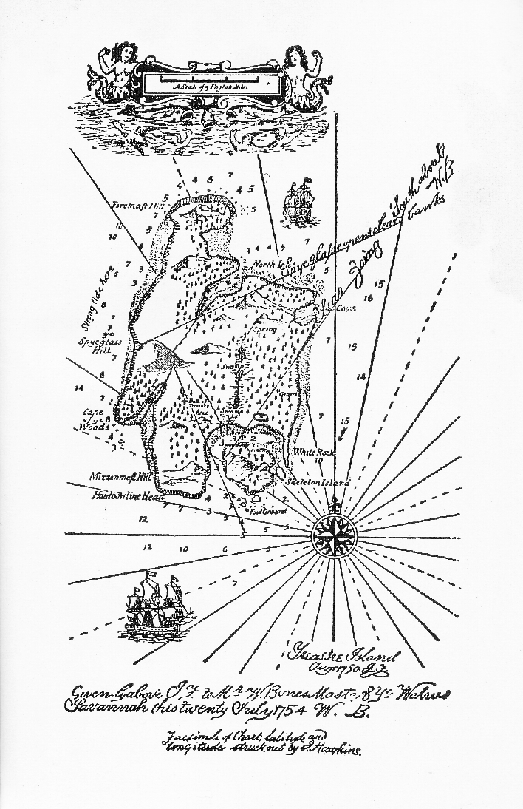

［＃改ページ］
もしも船乗 調子の船乗物語や、
暴風雨 や冒険、暑さ寒さが、
もしもスクーナー船や、島々や、
置去 り人 や海賊や埋められた黄金 や、
さてはまた昔の風のままに再び語られた
あらゆる古いロマンスが、
私 をかつて喜ばせたように、より賢い
今日 の少年たちを喜ばせることが出来るなら、
――それならよろしい、すぐ始め給え！ もしそうでなく、
もし勉強好きな青年たちが、
昔の嗜好を忘れてしまい、
キングストンや、勇者バランタインや、
森と波とのクーパー（註一）を、もはや欲しないなら、
それもまたよろしい！ それなら私と私の海賊どもは、
それらの人や彼等の創造物の横 る
墳墓の中に仲間入りせんことを！
［＃改丁］もしもスクーナー船や、島々や、
さてはまた昔の風のままに再び語られた
あらゆる古いロマンスが、
――それならよろしい、すぐ始め給え！ もしそうでなく、
もし勉強好きな青年たちが、
昔の嗜好を忘れてしまい、
キングストンや、勇者バランタインや、
森と波とのクーパー（註一）を、もはや欲しないなら、
それもまたよろしい！ それなら私と私の海賊どもは、
それらの人や彼等の創造物の
墳墓の中に仲間入りせんことを！
大地主のトゥリローニーさんや、医師のリヴジー先生や、その他の
私は、彼が、船員衣類箱（註三）を後から
 し、そうしながらひとりで口笛を吹いていたが、それから突然、その後もたびたび歌ったあの古い船唄を歌い出したのだった。――
し、そうしながらひとりで口笛を吹いていたが、それから突然、その後もたびたび歌ったあの古い船唄を歌い出したのだった。――
「死人箱 にゃあ十五人――
よいこらさあ、それからラムが一罎 と！（註五）」
よいこらさあ、それからラムが
すのに調子を合せて歌ってしたり店の看板を見上げたりしていた。「これぁ便利な入江だ。」とようやく彼は言い出した。「この酒屋も気の利いた
父は、いや、残念ながら客はごく少くてどうも、と彼に言った。
「うむ、そうか、」と彼は言った。「じゃあ
そして、実際、衣服こそ粗末でものの言い方もぞんざいではあったけれども、彼には
彼はいつもごく
って来て、私が自分の報酬を請求すると、彼はただ私に向って鼻を鳴らして、私をじっと睨みつけることが、たびたびあった。が、その週の終らないうちに必ず考え直して、その四ペンスの銀貨を持って来てくれ、「一本脚の船乗」に気をつけておれという例の命令を繰返した。その人物がどんなに私の夢を悩ませたかは、言うまでもないくらいである。嵐の夜々、風が家全体を揺り動かし、激浪が入江や断崖に轟きわたる時には、その男がいろいろの姿で、またいろいろの悪魔のような形相をして現れるのであった。時には脚が膝のところで切れており、時には
しかし、私はその一本脚の船乗のことを思うとそんなに脅かされはしたけれども、船長その人には彼を知っている他のだれよりもずっと
彼の話は中でも最も人々を怖がらせたものであった。それは実に恐しい話だった。
一方から言えば、実際、彼は私たちの家を潰しそうにも思われた。というのは、彼は幾週も幾週も、そうしてついには幾月も幾月も滞在し続けたので、前の金はみんなとっくに使い尽したのだが、それでも父にはどうしてもまた勘定を頂きたいと言い張るだけの勇気が出なかったのである。もしいつでもそれをちょっと口に出したところで、船長は唸ると言ってもいいくらいに大きく鼻息を鳴らして、可哀そうな父を睨みつけて部屋から追い出してしまうのだった。そんなのにはねつけられた後に父が両手を揉み絞って（註一一）いるのを私は見たことがある。そして、そんな苦悩や恐怖の中に日を送ったことがきっと父の不幸な
船長は、私たちのところにいた間に、靴下を数足行商人から買った
彼は一度だけ
って、テーブルに両腕を張って腰掛けている、垢じみた、鈍重な、酔眼朦朧たる、ぼろぼろ着物の
「死人箱にゃあ十五人――
よいこらさあ、それからラムが一罎 と！
残りの奴は酒と悪魔が片附 けた――
よいこらさあ、それからラムが一罎と！」
よいこらさあ、それからラムが
残りの奴は酒と悪魔が
よいこらさあ、それからラムが一罎と！」
初め私は「
「君は
老人めの激怒は恐しいものだった。彼は跳び立って、水夫用の摺込ナイフをひき出して刃を開き、それを掌にのせて振り動かしながら、医師を壁に突き刺してやると脅しつけた。
医師は身動きさえもしなかった。前の通りに肩越しに振り向いて、同じ調子の声で、彼に話しかけた。室中の者に聞えるようにと幾らか高くはあったが、しかしまったく落着き払ったしっかりした声だった。――
「そのナイフをすぐさまポケットにしまわぬと、私は名誉にかけてお前をきっと次の巡回裁判で
それから二人の間に睨み合いが始まった。が、船長の方が間もなく降参し、武器を収めて、負けた犬のようにぶつぶつ言いながら、再び自分の席に坐った。
「ところでね、」と医師は続けて言った。「私の区にそういう奴がいるとわかったからには、私はこれからしょっちゅうお前に気をつけているから、そのつもりでいるがいい。私は医者だけじゃない。治安判事もやっているのだ。で、お前に対するちょっとした告訴でも握ったが最後、それがただ今夜のような無作法のためであったにしろ、お前をひっ捕えさせてここから追っ払わせることにしてやるからな。これだけ言っておく。」
それから間もなくリヴジー先生の馬が戸口のところへ来たので、先生はそれに乗って帰って行った。が、船長は、その晩も、またそれから後の幾晩も、黙っておとなしくしていたのであった。
この後遠からず、私たちにとうとう船長を厄介払いしてくれたあの不可思議な出来事の最初の事件が起ったのである。もっとも、その出来事というのは、だんだんとわかる通り、船長に関することをすっかり厄介払いしたという訳ではないのであるが。その冬はひどく寒くて、永い間
していて、ずっととても忙しくて、例の厭な客人には大して構わずにいた。一月の或る朝、ごく早い頃のことであった。――刺すような酷寒の朝で、――入江は一面に霜で真白になっており、
った時に私の聞いた最後の音は、怒ったような大きな荒い鼻息で、それはちょうど心ではまだリヴジー先生のことを思っているかのようだった。さて、母は二階に父と一緒にいた。私は船長の帰って来た時の用意に朝食の支度をしていたが、その時
何の御用ですかと尋ねると、彼はラムをくれと言った。しかし、私がそれを取りに室から出かけると、彼はテーブルの上に腰を下して、私にそばへ来いと手招きした。私は手にナプキンを持ったまま立ち止った。
「坊やこっちへ来な。」と彼は言った。「もっとこっちへ来な。」私は一歩近づいた。
「この食事は
私は、あんたの仲間のビルという人は知らない、これは
「なるほど、」と彼は言った。「己の仲間のビルのことなら船長と言われもするだろうな。あいつは片頬に
私はその人は散歩に出ていると言った。
「どっちの方だ、坊や？ どっちの方へ行っているんだい？」
で、私が例の岩を指し、あの方から帰って来そうで、もう間もなく帰るだろうと言い、その他二三の問に答えると、その男は言った。「ああ、ビルの奴にゃ己に逢うなあ飲むのと同じくれえ嬉しいだろうな。」
この言葉を言った時の彼の顔付はちっとも愉快そうではなかった。また、彼が言った通りのことを思っているとしたところで、この男は考え違いをしているのだと思う理由が私にはあった。しかし何も自分の知ったことではない、と私は思った。それにまた、どうしていいかもわからなかった。その
そう言いながら、その男は私と一緒に談話室へ戻り、隅の方で私を彼の背後に立たせ、二人とも開いている扉の蔭に隠れるようにした。諸君も想像されるように、私はひどく不安でびくびくしていたが、その他所の男も確かに怖がっているのを見て取ると、私の恐怖の念はさらに加わった。彼は彎刀の
やがて大胯に船長が入って来て、右も左も見ずに扉を背後にばたんと
「ビル。」と他所の男が言ったが、その声は強いて大胆そうに見せかけようとしているように思われた。
船長はぐるりと後へ向いて私たちと向き合った。その顔には
「おい、ビル、己を知ってるだろ。お
船長は喘ぐような息をした。
「
「でなくてだれなものか？」と一方は大分落着いて来て返答した。「まさにその
「で、おい、」と船長が言った。「お
「さすがはお前だ。」と黒犬が言った。「お前の言う通りだよ、ビリー。ところで己はこの子供からラムを一
私がラムを持って戻って来た時には、二人はもう船長の朝食の食卓の両側に腰を掛けていた。――黒犬の方は扉の近くにいて、片方の眼を昔の友達に、片方の眼を私の思ったところでは逃げ場所につけておけるようにと、斜に腰掛けていた。
彼は、私に、あっちへ行っておれ、そして扉を広く開けっ放しにして行ってくれ、と言いつけた。「
私は耳をすまして聞いてやろうと確かに一心になってはいたけれども、大分永い間、早口にべらべらしゃべる低い声の
「いやだ、いやだ、いやだ、いやだ。それでおしまいだ！」と船長は一度
それから突然、凄じく罵り言葉やその他のやかましい物音が起った。――椅子とテーブルとが一度にひっくり返り、続いて刃物の打ち合う音がし、それから苦痛の叫び声がしたかと思うと、次の瞬間には、私は、黒犬が全力で逃げ、船長が猛烈に追っかけてゆくのを見た。二人とも抜き放った彎刀を手にし、黒犬は左の肩からたらたらと血を出していた。ちょうど戸口のところで、船長はその逃げてゆく男を狙って最後の物凄い一撃を
この一撃が
「ジム、」と彼が言った。「ラムだ。」そしてそう言った時に、少しよろめき、片手を壁にあてて身を支えた。
「怪我しましたか？」と私は叫んだ。
「ラムだ。」と彼は繰返して言った。「己はここから行かなきゃならん。ラムだ！ ラムだ！」
私はラムを取りに走って行った。しかし、さっきから起ったいろいろのことですっかりあわてていたので、コップを一つ壊したり樽の注口を駄目にしたりした。そしてまだまごまごしているうちに、談話室で何かがどかりと倒れる音が聞えたので、駆け込んで見ると、船長が床の上に大の字になって寝ていた。それと同時に、叫び声や
「やれやれ、何てことだろう。」と母が叫んだ。「この
しばらくの間、私たちは船長の手当をするにはどうしたらいいかまるでわからなかった。また、彼があの他所の男との格闘で致命傷を受けたものと思いこんでもいたのだ。私はラムを持って来て、彼の咽喉へ流しこんでやろうとしたことはしたけれども、彼は歯をしっかりと喰いしばっていて、顎は鉄のように固かった。そこへ扉が開いてリヴジー先生が父を診察しに入って来たので、私たちはほっとした。
「おお、先生、」と私たちは叫んだ。「どうしたらよろしいでしょう？ この人はどこを怪我しているのでしょう？」
「怪我だと？ 馬鹿なことを！」と医師が言った。「あんた
私が金盥を持って戻って来た時には、医師はもう船長の袖を切り開いて、大きな逞しい腕をまくりあげていた。その腕には数箇処に
「自分のことの予言だな。」と医師は指でその絵に触りながら言った。「さて、ビリー・ボーンズ君、というのが君の名前ならだが、君の血の色をちょっと拝見するよ。ジム、」と私に向って、「君は血を見るのが
「いいえ。」と私は答えた。
「よし、では、」と彼が言った。「金盥を持っていてくれ給え。」そう言って彼は刺
 針を取って血管を切り開いた（註一五）。
針を取って血管を切り開いた（註一五）。ずいぶんたくさん血が取られてから、船長はやっと眼を
した。最初は医師の顔がわかると、紛れもない「
「
「君は相変らずラムを飲んでいたものだから、中風を起したんだ、私が君に言ってやった通りに。で、私は、ずいぶん厭ではあったが、君を墓から頭を先にしてひきずり出してやったのだ。ところで、ボーンズ君――」
「それぁ
「どうだっていいさ。」と医師が答えた。「私の
私たちは、二人がかりで、ひどく骨折って、やっと彼を二階へひっぱり上げ、寝台へ寝かしてやった。すると彼は、ほとんど気絶しているかのように、頭をぐたりと枕に落した。
「さあ、いいかね。」と医師が言った。「これで私は責任をすませたのだ。――ラムということは君には死ということだぜ。」
そう言うと彼は、私の腕を取りながら、父を診察しにそこを去った。
「何でもないことさ。」彼は扉を閉めるや否や言った。「あの男をしばらく静かにしておけるだけの血をぬいてやったのだ。あの男は一週間はあそこで寝ていなければいけない、――それがあの男にも君
「ジム、」と彼が言った。「ここじゃあ頼りになるなあお
「お医者さまが――」と私は言いかけた。
けれども彼は急に、力のない声で、しかし心から、医師の悪口を言い出した。「医者なんて奴あみんな阿呆だ。」と彼は言った。「それに、あの医者なんか、へん、船乗のことなんぞ何を知ってるんだ？ 己ぁ、
彼はだんだんと興奮して来たので、父に障りはしないかと私ははらはらした。父はその日はひどく悪くて、安静が必要だったのだ。それに、今船長の言った先生の言葉もあるから大丈夫だろうと思ったし、鼻薬でつろうとするのにはちょっと癪にさわった。
「あんたのお金なんかちっともほしかあないよ。お父さんにあんたが借りてる分の
それを持って来てやると、彼はひったくるように掴んで、すっかり飲み干してしまった。
「よしよし、」と彼が言った。「確かに、幾らかよくなったよ。ところでな、おい、あの医者はどのくれえこの寝床ん中に寝てなきゃなんねえって言ってた？」
「どうしても一週間は、って。」と私は言った。
「ひえっ！」と彼は叫んだ。「一週間だと！ そんなこたぁ出来ねえ。それまでにゃあ奴らは
ってるんだ。あいつらは自分の分を取っておけねえんで、こう言いながら、彼は、私が痛くてもう少しで大声を出しかけたほど私の肩をぎゅっと掴んで、脚を重量品のように重そうに動かしながら、ようようのことで
「あの医者にやられた。」と彼は呟いた。「耳鳴りがする。寝かしてくれ。」
私が大して手伝わないうちに彼はまた以前の場所へ倒れ、しばらくは黙ったままでいた。
「ジム、」とようやく彼は言い出した。「今日あの水夫を見たろう？」
「
「ああ！
「だけど、その黒丸って何ですか、船長さん？」と私は尋ねた。
「それはね、呼出状さ。奴らが持って来たらお前に言ってやるよ。だが油断なく見張っててくれ、ジム。そうすりゃお前を相棒にして分けてやるからな、きっと。」
彼はそれからしばらく取りとめのないことを言い、その声はだんだん弱っていった。が、私が薬をやると、「船乗で薬を飲みたがるなんて奴あ己だけだ。」と言いながら、子供のようにそれを
彼は翌朝には階下へ降りて来るには来たし、いつもの通りに食事はした。もっとも、食べる方は少ししか食べなかったが、ラムはいつもよりもたくさん飲んだかも知れない。なぜなら、顔を顰め鼻息を鳴らしながら帳場から自分で勝手に取って来て飲み、だれ一人もそれを
このようにして過ぎていったが、葬式の翌日、霧深い、身を斬るような、霜寒の午後の三時頃、私は戸口のところにしばらく立って、父についての悲しい思いに耽っていた。すると、だれかが街道をのろのろとこっちへやって来るのが見えた。その男は、杖で自分の前をこつこつ叩いているし、眼と鼻との上に大きな緑色の覆いをかけているところをみると、明かに
「どなたか御親切な旦那さま、哀れな
「ここは
「声がしましたな、」と彼は言った。――「お若い
私が手を差し出すと、今まで物言いのやさしかった、その怖しい、眼のつぶれた奴は、たちまちその手を

「さあ、小僧、
「それぁとても駄目ですよ。」と私が言った。
「おお、言ったな！」と彼はせせら笑った。「まっすぐにつれて行け。でねえと、この腕をへし折ってくれるぞ。」
そう言いながら、私の腕を捩り上げたので、私は思わず叫び声をあげた。
「でも、
「さあ、さっさと歩くんだ。」と彼は私の言葉を遮った。私はその盲人の声のような無慈悲な、冷酷な、不愉快な声はかつて聞いたことがなかった。手の痛さよりもその声の方がもっと私をおじけさせた。それですぐ彼の言うことをきいて、まっすぐに歩いて戸口のところから談話室の方へと進んで行った。その談話室に、あの病気の老海賊がラムに酔ってぼんやりして坐りこんでいるのだ。盲人は私にぴったりとくっついて、鉄のような拳で私を掴み、堪えられないほどの重さで私に
可哀そうに、船長は眼を上げると、一目でラムの
「さあ、ビル、そのままで坐ってろよ。」と乞食が言った。「眼は見えなくても、耳は指一本動かしたってわかるんだ。用事は用事さ。お
私たちは二人とも寸分違わず盲人の言う通りにした。と、私は、盲人が杖を持っている手の掌中から、船長の掌の中へ、何かを渡したのを見た。船長は直ちにそれを握った。
「さあこれですんだ。」と盲人が言った。そしてその言葉を口にすると急に私を掴んでいる手を放し、ほんとうとは思えないくらいに見当も違えず素速く、談話室から街道へと跳び出し、私がまだじっと突っ立っていると、彼の杖の音が街道をこつ、こつ、こつ、こつと遠くまで行くのが聞えた。
私か船長かが我に返ったようになるまでにはしばらく間があった。が、とうとう、そしてほとんど同時に、私はまだ掴んでいた船長の手頸を離し、彼の方は手をひっこめて掌の中をぱっと見た。
「十時！」と彼は叫んだ。「六時間ある。まだ奴らを出し抜けるぞ。」そして跳び立った。
と同時に、彼はよろめき、咽喉へ手をあて、ちょっとの間ぐらぐらしながら立っていたが、それから、異様な声を立てながら、ばたりと俯伏に
私は、母を呼びながら、直ちに彼のそばへ駆け寄った。が急いでももう無駄だった。船長は猛烈な卒中にやられて死んでしまっていた。奇妙なことだが、近頃こそ彼を可哀そうに思いかけてはいたけれども、私は確かに彼を好いたことなんぞ決してないのに、彼が死んだのを見るや否や、どっと涙が出て来たのであった。それが私の見た二度目の死で、一度目の死の悲しみが私の心にまだ
私は、もちろん、時を移さず、自分の知っている限りのことを母に話した。多分、ずっと前に話しておくべきであったのだが。そして直ちに私たちはむずかしい危険な立場にいることに気がついた。船長の
その村というのは、次の入江の向側にあって、こちらから見えはしないが、何百ヤードも離れていなかった。それに大層心強かったのは、例の盲人がやって来た方、また恐らく帰って行った方とは、反対の方角にあったことだった。私たちはそう永くは街道にいなかったのだが、それでも時々立ち止って互に
村へ着いたのはもう
臆病はうつると世間では言う。しかしまた、一方、議論は非常に勇気をつけるものである。で、銘々が言うだけのことを言ってしまうと、母は皆に言った。父親のないこの子のものであるお金は損したくない、と母は言い切った。「あなた
もちろん、私は母と一緒に行くと言った。また、もちろん、人々はみんな私たちのことを無鉄砲だと
私たち二人がその寒い晩この危険な冒険に出かけた時には、私の胸はひどくどきどきと動悸うった。ちょうど満月が昇り始めていて、霧の上の方の
私がすぐさま
「鎧戸を
私はすぐさましゃがんで膝をついた。船長の手の近くの
「十時までなんだって、お母さん。」と私は言った。ちょうどそう言った時、
「さあ、ジムや、あの鍵だよ。」と母が言った。
私は彼のポケットを一つ一つ探った。小さな貨幣が二三箇に、
「じゃ多分頸の周りについてるんだろうよ。」と母が言ってくれた。
厭でたまらないのをこらへて、シャツの頸のところを引き裂くと、果して、タールまみれの紐に鍵が下げてあったので、私は彼の大形ナイフでその紐を切った。この上首尾に私たちはもう大丈夫だと思い、さっそく二階へ駆け上って船長が永い間寝泊りしていた小さな室へ入った。そこに例の箱が彼の着いた日以来置いてあるのだ。
その箱は、外から見たところでは他の船乗衣類箱と同じようだった。蓋には「Ｂ．」という
「鍵をおくれ。」と母が言った。そして、錠は非常に固かったけれども、瞬く間に母はそれを
して蓋をはね開けた。煙草とタールとの強い臭いが内部からぷんとして来たが、一番上には、入念にブラシをかけて折り摺んである一着のすこぶる上等な服の
っていたのかと、不審に思うことがたびたびある。これまでに私たちの見つけた幾らかでも値打のあるものは銀と装身具だけで、これはどちらとも私たちには不向のものだった。その下に古びた船員作業服が一着あった。方々の港口の洲で海水を浴びたために白っぽくなっていた。母はいらいらしてそれをひっぱり出した。すると箱の中にある最後の物が私たちの前に現れた。
「あの悪者たちに私が正直な女だということを見せてやろう。」と母が言った。「私は自分の貰わなきゃならない分だけは貰うが、一文だって余計にゃ取らないよ。クロスリーさんのおかみさんの嚢を持っていておくれ。」そして母は船長の勘定高をその海員の嚢から私の持っている嚢の中へと数えて入れ始めた。
それはなかなか永くかかる面倒な仕事だった。なぜなら、その貨幣はいろいろの国のさまざまの大きさのもので、――ダブルーン金貨や、ルイドール金貨や、ギニー金貨や、八銀貨や、その他私の知らないものなどが、みんなめちゃくちゃに詰め込んであったのだから。それにまた、ギニー金貨がほとんど一番少く、母に勘定の出来るのはそのギニー金貨だけなのであった。（註一九）
私たちが半分ばかり数えた時、私は突然母の腕に手をかけた。しいんとした霜寒の空気の中に、私をぎょっとさせた音を聞いたからである。――
す音が聞え、あの盲人めが入ろうとするのであろう、閂ががたがたいうのが聞えた。それから永い間、内も外もひっそりしていた。とうとう、また、こつ、こつと杖の音がし始めて、ゆっくりと再び微かになってゆき、ついに聞えなくなったので、私たちは言うに言われぬくらい喜び、また有難く思った。「お母さん、みんな持って逃げて行きましょうよ。」と私が言った。きっと、扉に閂がさしてあるのが怪しいと思われて、面倒を惹き起すに違いないと思ったからである。もっとも、その閂をさしておいたことを私がどんなに有難く思ったかは、あの恐しい盲人に逢ったことのない人には到底わからないのであるが？
しかし母は、怖がってはいる癖に、自分の当然受取るべき分より少しでもたくさん取ることを承諾しようとせず、またそれより少いのも頑固に承知しなかった。まだなかなか七時にもならない、と母は言った。母は自分の権利を知っていて、それだけを得たいというのだ。そしてなおも私と言い争っていた時に、小さな低い
「取った分だけ持ってゆくことにするよ。」と母は跳び上りながら言った。
「じゃ僕は勘定を帳消しするためにこれを持ってゆこう。」と私は油布の小包を取り上げながら言った。
次の瞬間には、
「ねえ、お前、」と母が急に言った。「このお金を持ってずんずん逃げておくれ。私は気が遠くなりそうだから。」
これではどうしたって私たち二人とももうおしまいだ、と私は思った。どんなに私は近所の人々の臆病を呪ったことだろう。どんなに私は母が正直であってまた慾張りであったことや、さっきは無鉄砲でありながら今は心弱くなったことを、咎めたことだろう！ 幸運にも、私たちはちょうど小さな橋のところにいた。それで私はよろよろしている母を助けて土手の縁までつれて行くと、果して、母はほっと
私の好奇心は、或る意味で、私の恐怖の念よりも強かった。なぜなら、私は自分のいた処にじっとしていられなくて、再び土手へ這い上ったからで、そこから、頭を
「戸をぶっ壊せ！」と彼が叫んだ。
「よしきた！」と二三人が答えた。そして「
「
四五人の者が直ちに命令に従い、二人がその怖しい乞食と共に街道に残った。しばらく
「ビルの奴あ死んでるぞ！」
しかし盲人は再び彼等がぐずぐずしているのを口ぎたなく罵った。
「ずるけ野郎ども、二三人で奴の
彼等の足が私の家の古い階段をがたがたっと駆け上る音が私に聞えた。あれでは家はぐらぐら揺れたに違いない。それからすぐ後に、またびっくりした声が起った。船長の室の窓がばたんと
「おい、ピュー、」と彼が叫んだ。「先に来た奴らがいるんだ。だれかが箱をすっかり掻き
してあるぜ。」「あれぁあるか？」とピユーが
「
盲人は金なんぞ糞喰らえだと言った。
「フリントの
「それぁここにゃ見えねえ。」とその男は答えた。
「じゃあ、下にいる野郎ども、ビルの体についてやしねえか？」と盲人が再び叫んだ。
すると、多分船長の体を調べるために階下に残っていた男であろう、別の奴が宿屋の戸口のところへ出て来て、「ビルの体はもうすっかり検査してあらあ。何一つ残っちゃいねえ。」と言った。
「じゃ宿屋の奴らだ、――あの小僧だ。奴の眼をくり抜いてくれりゃあよかった！」と盲人のピューが叫んだ。「奴らはたった今ここにいたんだ、――俺が
「
「散らばって奴らを見つけ出せい！ 家を探し
れ！」とピューは杖で街道を敲きながら繰返して言った。それに続いて、私の古い家中が大騒ぎになった。ずっしりした足があちこちとどやどや歩き
る。家具がひっくり返される。扉が蹴破られる。あたりの岩までが反響するくらいだった。それから、その連中は一人一人再び街道へ出て来て、家の者たちがどこにも見当らないと言った。ちょうどこの時、さっき死んだ船長の金を数えていた母と私とを狼狽させたと同じ呼子の音が、もう一度夜気を「ダークがまた鳴らしたぜ。」と一人が言った。「二度だぞ！ 引揚げなきゃなるめえ、
「引揚げるだと、この卑怯者め！」とピューが叫んだ。「ダークは初めっから馬鹿で臆病者なんだ、――あんな野郎にゃ構うこたぁねえ。奴らはすぐ近くにいるに違えねえんだ。遠くへ行ってるはずはねえ。つかめえているも同じだ。散らばって奴らを捜せ、やくざども！ えい、畜生、俺に眼が見えたらなあ！」と喚いた。
この言葉は幾らか
「この馬鹿野郎どもめ、何万両が手に
せようってのに、「ちぇっ、ピュー、己たちぁダブルーン金貨を手に入れたんだぞ！」と一人がぶつぶつ言った。
「奴らがあのいまいましい物を隠したんかも知れねえ。」と別の男が言った。「ジョージ金貨（註二〇）をやるからな、ピュー、ぎゃあぎゃあいうのはよせよ。」
ぎゃあぎゃあいうとは
彼等の方も、盲の悪漢を罵り返し、ひどい言葉で

この
り、仲間の者を手探りしたり呼び立てたりした。その挙句に方角を間違え、私の前を通り越して村の方へ数歩走りながら、叫んだ。――「ジョニー、
ちょうどその時、馬蹄の音が高地の頂上に達したかと思うと、四五人の騎者の姿が月光の中に現れ、全速力で坂路を駆け下りて来た。
これを聞いてピューは方向を間違えていたのに気がつき、きゃっと叫んで向を変え、溝の方へまっすぐに走って、その中へ
騎手は彼を救おうとしたが、駄目だった。悲鳴をあげてばったりとピューは倒れ、その声は夜の空気の中へ高く響きわたった。四つの蹄は彼を踏みにじり蹴飛ばして通り過ぎた。彼は横倒しに倒れ、それからぐにゃりと俯向になって、それっきり動かなくなった。
私は跳び立って、馬に乗っている人たちに声をかけた。彼等もこの
ピューは死んでいた。まったくことぎれていた。母の方は、村まで運んで行って、冷い水を少しや
って見えなくなってしまった。ダンスさんは、彼の言葉で言えば、「水を離れた私は彼と一緒に「ベンボー提督屋」へ戻ったが、あれほどめちゃめちゃになった家は諸君にも想像出来ないくらいである。掛時計さえも、あいつらが母と私とを乱暴に探し
っていた間に叩き落されていた。そして、実際に持って行かれたものは、船長のあの「奴らは金を持って行ったと言うんだね？ ふうん、とすると、ホーキンズ、奴らの探していたのは一体何だい？ もっと金がほしかったのかな？」
「いいえ、お金じゃないと思います。」と私は答えた。「実は、私の胸ポケットに持っている物だと思うのです。実を申しますと、それを安全なところへ置きたいんですが。」
「なるほどね。いいとも。」と彼は言った。「よければ、私が預ってあげよう。」
「私は、多分、リヴジー先生が――」と私が言いかけた。
「まったくそうだ。」と彼はごく機嫌よく私の言葉を遮った。「まったくそうだよ、――紳士で治安判事だからね。で、今思いついたんだが、私もあそこへ
って、あの人か大地主さんに報告した方がよかろう。ピューさんは死んだのだ、何と言ったところでな。と言って、私はそれを残念に思う訳じゃないが、とにかく彼は死んだんだ。で、世間の人たちはこのことを種にして陛下の税務署の役人を非難するだろう、もし種に出来ればだ。でね、どうだい、ホーキンズ。よければ、一緒につれて行ってあげよう。」私はその言葉に対して心から彼に礼を言った。そして二人は馬の繋いである村へ歩いて戻った。私が自分のつもりを母に話してしまった時分には、一同はもう馬に跨っていた。
「ドッガー、君の馬はいい馬だから、この子を君の
私がドッガーの帯革につかまって馬に乗るや否や、監督官は命令を下し、一行はぽかぽかと早足で街道をリヴジー先生の家へと向った。
私たちは途中をずっと疾く馬を走らせて、とうとうリヴジー先生の家の戸口の前に停った。家は前面から見ると
ダンスさんが私に跳び下りて戸を敲いてくれと言ったので、ドッガーのくれた
「リヴジー先生はいらっしゃいますか？」と私は尋ねた。
いいえ、と女中は言った。先生は午後帰って来たのだが、お屋敷へ晩餐によばれて行って、今夜は大地主さんと一緒に過している、とのことだった。
「それではそこへ行こう、諸君。」とダンスさんが言った。
今度は、
下男は私たちを導いて
私は大地主さんをそんなに間近に見たことがそれまでに一度もなかった。彼は六フィート以上もある背の高い人で、それに相応して幅もあり、無骨な豪傑風の顔は、永い間の旅行ですっかり荒れて赤らみ皺がよっていた。眉毛は真黒で、すぐぴりぴり動いた。そのために、怒りっぽいというのではないが、気短で傲慢といったような顔付に見えた。
「お入りなさい、ダンス君。」と彼はすこぶる厳かに、また丁寧に言った。
「やあ、今晩は、ダンス。」と医師は頷いて会釈しながら言った。「それから、ジムも、今晩は。どういう風の吹き
しでここへやって来たのかね？」税務監督官は硬くなって直立しながら、学課をやるように一部始終の話をした。すると、二人の紳士がどんなに身を乗り出し、互に顔を見合せ、驚きと興味とのために煙草を吸ふのも忘れていたかは、諸君にお目にかけたかったくらいであった。私の母が宿屋へ引返したところまで聞くと、リヴジー先生は腿をぽんと打ち、大地主さんは「えらいぞ！」と叫んで、その途端に持っていた長いパイプを炉の鉄格子にぶっつけて折ってしまった。話のすむ大分前から、トゥリローニーさん（というのは、覚えておられるであろうが、大地主さんの名である）は自分の席から立ち上って、室内を大胯に歩き
っていたし、医師は、もっとよく聞き取ろうとでもするように、髪粉をつけたとうとうダンスさんは話を終った。
「ダンス君、」と大地主さんが言った。「君はなかなか立派な男だ。それから、その腹黒い極悪な不埒者を馬蹄にかけたことは、
「それで、ジム、」と先生が言った。「君は奴らの探していた物を持っているんだね？」
「はい、ここにあります。」と私は言って、油布の包を彼に渡した。
医師はそれをつくづく眺めながら、開けたくて指をむずむずさせていたようだった。が、開けないで、静かに上衣のポケットの中へしまった。
「大地主さん、」と彼は言った。「ダンスはビールを頂戴したら、無論、陛下の御用を勤めに行かねばなりません。しかし、ジム・ホーキンズは私の
「どうぞ、リヴジー君。」と大地主さんが言った。「ホーキンズは
そこで大きな鳩パイが運ばれて
「ところで、大地主さん。」と医師が言った。
「ところで、リヴジー君。」と大地主さんが同じ瞬間に言った。
「
「聞いたことがあるかって！」と大地主さんが叫んだ。「あるどころじゃないさ！ あいつはこの上なしという残忍な海賊だった。
「いや、私も彼のことはイングランドで聞いたことがありますがね。」と医師が言った。「しかし要点は、彼は
「金だって！」と大地主さんが叫んだ。「君はさっきの話を聞かなかったのかい？ あの悪党どもの探し
っているのが金でなくて何だね？ あいつらが金でなくって何をほしがるものかね？ あいつらが碌でなしの「それはやがてわかるでしょう。」と医師が答えた。「だがあなたのように滅法に熱してしまって大声を出されては、私は一
「多額だともさ、君！」と大地主さんは叫んだ。「もし君の今言ったような手掛りがあるとすれば、私はブリストルの波止場で船を一艘艤装して、君やこのホーキンズを一緒につれて行って、たとい一年かかってもその宝を探し出すつもりだ。それくらいの額はあるだろうよ。」
「よろしい。」と医師が言った。「それでは、ジムが承知なら、この包を開けてみましょう。」と彼はそれを自分の前のテーブルの上に置いた。包は縫いつけてあったので、医師は自分の器械箱を持ち出して来て、医療鋏で縫目を切らなければならなかった。中には二つの物が入っていた、――一冊の帳薄と、封緘した一枚の紙と。
「まず先に帳簿の方を調べてみよう。」と医師が言った。
彼がそれを開ける時には彼の肩越しに大地主さんも私も二人とも覗きこんでいた。私は、リヴジー先生が親切に手招きしてくれたので、食事をしていた側テーブルを
って、その詮索の楽しみに「これぁ大して得るところがないな。」とリヴジー先生が言って、頁をめくった。
次の十一二頁には、奇妙な記入が一杯にしてあった。行の一端に日附があり、もう一方の端に金額が書いてあることは、普通の会計簿と同様であるが、しかし、説明の文句の代りに、二つの間にはただ違った数の十字記号だけが
この記録はかれこれ二十年以上も続いていて、年月がたつにつれて一々の記入高が大きくなってゆき、終りに、五六度間違った寄算をした後に総高が出してあって、「ボーンズの身代」という言葉が書き加えてあった。
「何のことだか私にはさっぱりわからん。」とリヴジー先生が言った。
「真昼のように明白だよ。」と大地主さんが大声で言った。「これはあの腹黒の畜生めの会計簿さ。この十字記号は奴らの沈めた船か掠奪した町の名の代りなんだ。金高はあの無頼漢の貰った分前だし、それから、曖昧ではいけないと
「なるほど！」と医師が言った。「さすがに旅行家は違ったものだ。いや、その通り！ そして、この男の地位が上るにつれて、金高が殖えていますね。」
この帳簿には、その他に、終り近くの白紙のところに
「
「ところで今度はもう一つの方だ。」と大地主さんが言った。
紙の方は、封印の代りに
裏には、同じ手蹟で、次のようなさらに詳しいことが書いてあった。――
「北北東より一ポイント（註二九）北に位して、遠眼鏡の肩、高い木。
骸骨島東南東微東。
十フィート。
銀の棒は北の隠し場にあり。東高台の傾斜面にて、黒い断巌に面を向けてその十尋南のところに見出すを得。
武器は、北浦の岬の北方、東に位し四分の一ポイント北に寄れる砂丘に容易に見出さる。
Ｊ・Ｆ。」
これだけだった。が、簡短なものではあり、私には理解の出来ないものではあったけれども、これを見ると大地主さんとリヴジー先生とは大喜びだった。
「リヴジー君、」と大地主さんが言った。「君は厄介な医者商売なんぞはさっそくやめだね。
「トゥリローニーさん、」と医師が言った。「私は御一緒に行きますよ。それからジムも行くことは私が請合います。ジムはきっとこの企ての
「で、それぁだれだい？」と大地主さんが大声で言った。「君、
「あなたです。」と医師が答えた。「あなたは口を慎めないからです。この紙のことを知っているのは私たちだけじゃありません。あの今晩宿屋を襲った奴らや――確かに大胆な向う見ずの暴れ者たちだが――それから、例の
「リヴジー君、」と大地主さんが答えた。「君の言われることはいつも正しい。私は墓のように黙っていますよ。」
［＃改ページ］
海へ出る準備が出来るまでには、大地主さんの想像したよりも永くかかった。また、私たちの最初の計画は一つとして――私をそばに置いておくというリヴジー先生の計画でさえ――思ったように実行されはしなかった。先生は留守の間を預る医者を探しにロンドンへ行かなければならなかった。大地主さんはブリストルで頻りに奔走していた。そして私は、猟場番人のレッドルース爺さんの監督の下に、ほとんど囚人のようにして、屋敷にずっと住んでいた。だが、海の空想や、見知らぬ島々や冒険などの恍惚となるような予想で、頭は一杯だった。私は例の地図のことを幾時間も打続けて考えた。その地図の細かいところまでみんなよく覚えていたのだ。家事管理人の室の炉火のそばに腰掛けながら、私は、空想の中で、あらゆる方向からその島に近づいて行き、その島の表面を残る隈なく踏査し、
こうして何週間も過ぎていったが、或る日、リヴジー先生に宛てた手紙が一通来た。それには「同氏不在の節はトム・レッドルース又はホーキンズ少年開封の事」と書き添えてあった。この命令に従って、私たちは、というよりもむしろ私は――というのは猟場番人は印刷した物の
「一七――年三月一日
ブリストル、古錨 旅宿にて。
リヴジー君、――小生は貴下が屋敷に居られるか、それともまだロンドンに居られるかわからないので、この手紙を両地へ二通出します。船は購入して艤装してあります。いつでも出帆出来るように準備して、碇泊している。あれより気持のよいスクーナー船（註三〇）は貴下にも想像出来ないでしょう。――子供でも操縦が出来るかも知れない。――二百トンで、名はヒスパニオーラ号。
この船は小生の旧友ブランドリーの周旋で手に入れたもので、彼は始めから終りまで実によくしてくれています。この感心な男は小生のために一心に働いてくれました。それからまた、ブリストルの人々も、我々の目指している港のことを――というのは宝のことだが――嗅ぎつけるや否や、だれも彼も非常によく働いてくれたと言ってもよいでしょう。」
「レッドルースさん、」と私は手紙を途中で
「ううん、うちの旦那さまより
そう言われたので私は説明するのは一切やめて、すぐに読み続けた。――
「ブランドリー自身がヒスパニオーラ号を見つけて、非常にうまく掛合ってごく安価で手に入れてくれたのです。ブリストルにはブランドリーをひどく毛嫌いしている連中もいます。彼等は、この正直な男を、金のためには何でもやるとか、ヒスパニオーラ号は彼のものだったのを、馬鹿に高い値で小生に売りつけたのだ、などとまで言います。――実に見え透いた中傷だ。だが、彼等の中の一人だって、この船の真価を否定する者はありません。
今までのところは何一つ故障もありませんでした。もっとも、職工たちは――艤装人やら何やらは――じれったいくらいのろのろしていた。が、それは時のたつうちにどうにかなった。小生を悩ませたのは乗組員でした。
小生はちょうど二十人ほしいと思いました、――土人や、海賊や、またはかの憎むべきフランス人に襲われた場合の用意にです。――そして六人だけ見つけるのにさえ非常に苦労をしました。ところがそのうちに実に素敵な幸運で小生は正に自分の必要とする男にめぐりあったのです。
小生は波止場に立っていたのですが、その時、ほんのちょっとした偶然の機会で、その男と口を利くようになりました。聞いてみると、以前船乗をやっていた男で、今は居酒屋をやっているが、ブリストル中の船乗をみんな知っている、陸で健康を害したので、もう一度海へ出るために
小生は非常に感動して、――貴下ももし居られたらそうだったでしょう、――そして、ただ気の毒と思う情から、その場で彼を船の料理番に雇い入れました。のっぽのジョン・シルヴァーと彼は呼ばれています。そして脚が一本ありません。しかしこのことは推薦状だと小生は
ところで、君、小生は料理番を一人見つけただけだと思ったのだが、しかし実は小生の発見したのは全乗組員であったのです。シルヴァーと小生と二人で数日の中にこの上なしの倔強な老練な水夫の一団を集めたのです。――見た目はよくはないが、その
のっぽのジョンは小生のすでに雇い入れておいた六七人の中から二人を除けさえしました。彼は、彼等が大事な冒険には恐れなければならぬあの海に慣れぬ奴らだということを、直ちに小生に見せてくれました。
小生は、牡牛の
る（註三二）のを聞くまでは、小生は一刻をも享楽しないでしょう。さあ、海へ！ 宝なんぞはどうだっていい！ 小生を夢中にさせているのは海の輝きだ。だから、リヴジー君、大急ぎでやって来給え。もし貴下が小生に敬意を持つならば、一時間も無駄にし給うな。ホーキンズ少年は、レッドルースを守護役にして、母親に会いにやって下さい。それから二人とも全速力でブリストルへよこして下さい。
ジョン・トゥリローニー。
追伸。――書き洩したが、ブランドリーは航海長に素晴しい男を見つけてくれました。――頑固な男なのは残念だが、しかし他のあらゆる点では宝のような人物だよ。ブランドリーで思い出したから書くのを忘れていたが、シルヴァーは財産家です。小生は彼がまだ一度も借越したことのない銀行通帳を持っているのを知っています。彼は細君を残して宿屋の方をやらせるそうだ。そしてその細君というのは黒人なんだから、貴下や小生の
Ｊ・Ｔ。
再追伸。――ホーキンズは母親の許で一晩泊ってもよろしい。Ｊ・Ｔ。」
この手紙がどんなに私を興奮させたかは諸君も御想像出来るであろう。私は嬉しくて我を忘れるくらいであった。そしてもし私がだれかを軽蔑したことがあるとするなら、それはトム・レッドルース爺さんだった。彼はただぶつぶつ言ったり泣言を並べたりするだけだった。猟場番人の下働はだれでも喜んでレッドルースと地位を代えたろう。がそれは大地主さんの意向ではなかった。そして大地主さんの意向は彼等みんなの間では法律のようなものであったのだ。レッドルース爺さんの他にはぶつぶつ不平を言う者さえだれ一人もいなかったろう。
その翌朝、爺さんと私とは徒歩で「
この子供を見ると、私は初めて自分の立場がわかった。その瞬間までは私は目前の冒険のことばかり考えて、後に残してゆく
その夜が過ぎて、次の日、昼食の後に、レッドルースと私とは再び徒歩で街道へ出た。私は、何と、生れて以来住み慣れた入江と、懐しい「ベンボー提督」――彼は塗り換えられていたので、もうさほど懐しくはなかったが――とに、さよならを言った。最後に私の心に思い浮んだものの一つは、
「どこですか？」と私は尋ねた。
「ブリストルさ。」とトムが言った。「降りるんだよ。」
トゥリローニーさんは、スクーナー船での作業を監督するために、波止場のずっと下手にある宿屋に泊っていた。で、そこまで私たちは歩いて行かねばならなかったが、その途は埠頭に沿うていて、大小さまざまの、いろいろの艤装の、あらゆる国々の船が無数にいるそばを通ってゆくので、私の嬉しさは非常なものだった。或る船では、水夫たちが歌いながら作業をしていた。また或る船では、檣や帆桁などの、私の頭上高いところに、蜘蛛の巣ほどに細く見える索にぶら下っている人たちがいた。私は生れてからずっと海浜に育って来たのではあるが、それまでは海の近くにいたことが一度もなかったような気がした。タールや
そして私自身も航海に出ようとしているのだ。呼子を吹いて号令する水夫長や、弁髪を垂れて船唄を歌う海員たちと一緒に、スクーナー船に乗って航海に出ようとしているのだ。まだ知らない島へ向けて、埋められた宝を捜しに、航海に出ようとしているのだ！
私がなおもこういう喜ばしい夢想に耽っている間に、私たちは不意に或る大きな宿屋の前へ出て、大地主のトゥリローニーさんに出会った。大地主さんは、丈夫な青い服を着用して、すっかり船の士官のように着飾り、顔をにこにこさせながら、水夫の歩き方を素敵にうまく真似て、戸口から出て来るところだった。
「やあ、やって来たな。」と彼は叫んだ。「先生も
「おお、そうですか。」と私は叫んだ。「でいつ出帆するんですか？」
「出帆か！」と彼は言った。「うむ、
私が朝食をすませると、大地主さんが「
それはなかなか立派な小ぢんまりした酒場だった。看板は近頃塗り換えたもので、窓には瀟洒な赤いカーテンが掛っており、
客は大部分船乗だった。そしてずいぶん大きな声でしゃべり合っているので、私は、入ってゆくのが
そうしてぐずぐずしている時に、一人の男が脇の室から出て来たが、私は一目でそれがのっぽのジョンに違いないと思った。左の脚がほとんど股のつけ根のところから切れており、左の腋の下に
 杖っていた。大層り、
杖っていた。大層り、さて、実を言うと、私は、大地主のトゥリローニーさんの手紙にのっぽのジョンのことを書いてあるのを見た実に最初の時から、その男こそ私が「
私は直ちに勇気を出して、
杖に「シルヴァーさんですね？」と私は尋ねて、手紙を差し出した。
「そうですよ。」と彼が言った。「いかにも、それがわっしの名でさあ。してあんたはだれですかね？」それから大地主さんの手紙を見ると、彼は何だかぎょっとしたように私には思われた。
「おお！」と彼は、手を差し出しながら、大層大きな声をして言った。「なるほど。君はわっしたちの今度の
そして彼は私の手を大きな掌の中にしっかりと握った。
ちょうどその時、ずっと向うの方にいた客の一人が、急に立ち上って、扉の方に進んだ。その扉は彼のじきそばにあったので、彼はすぐに街路へ出てしまった。しかしそのあわただしい様子が私の注意を惹き、私は一目でそれがだれだかわかった。それは、「ベンボー提督屋」へ最初にやって来た、指の二本ない、あの蒼白い顔をした男だった。
「おお、あいつを止めて！ あれは
「だれだろうと構やしねえが、しかし奴あ勘定を払ってねえんだ。おい、ハリー、走ってって奴を掴めえてくれ。」とシルヴァーが叫んだ。
するとその扉の一番近くにいた
「よしんば奴がホーク大将にしろ勘定は払わせてやる。」とシルヴァーが
「
「そうかい？」とシルヴァーが叫んだ。「わっしの店にそんな奴が！ ベン、お
モーガンと呼ばれた男――年寄の、白髪の、マホガニー色の顔をした水夫――は、
「ところで、モーガン、」とのっぽのジョンはすこぶる
「ねえんですよ。」とモーガンは言って、お辞儀をした。
「お前は奴の
「そうですよ。」
「よし、トム・モーガン、そいつぁお前のためにゃ結構なこった！」と亭主は大声で言った。
「もしあんなような奴とつきあってたんなら、二度と
「おいらはほんとに知らねえんですよ。」とモーガンは答えた。
「お前の肩の上にのっかってるのは、そりゃあ頭か、それとも
「
「船底潜らせだと？
そして、モーガンが彼の席へよろめき帰ると、シルヴァーは私に内証話のような囁き声で言ったが、それは非常に
「あれぁとても正直者なんだよ、あのトム・モーガンはね。ただ
「そうですよ、間違いありません。」と私は言った。「僕はその
「そうだった！」とシルヴァーは今はまったく興奮して叫んだ。「うん、ピューだ！ 確かにそういう名前だった。ああ、あいつはぺてん師らしかったな、まったく！ とにかく、もしあの黒犬をつかめえれば、トゥリローニー
彼は、こういう文句を吐き出すように言っている間、始終、
杖で店をあちこちとぴょんぴょん歩きりながら、手でテーブルを叩いたり、「ねえ、ホーキンズ、」と彼は言った。「
と言いかけて、突然、言葉を切り、そして、何かを思い出したように口をあんぐり開けた。
「勘定を！」と彼は喚いた。「ラムが三杯だ！ えい、こん畜生、勘定のことを忘れちまうなんて！」
そして、腰掛にどかんと腰を落して、彼は涙が頬を流れ落ちるまで笑いこけた。私もそれにひきこまれずにはいられなかった。そして私たちは一緒に笑い続けたので、酒場中が鳴り響いた。
「やれやれ、己も何てやくざな老いぼれ水夫になったものだろう！」と彼はようやく頬を拭いながら言った。「君と俺とは仲よくしような、ホーキンズ。これじゃあ俺もきっと船のボーイ
そして彼は再び笑い始めた。余り
埠頭に沿うて二人がしばらくの道を歩いてゆく間も、彼は実に面白い
宿屋に着くと、大地主さんとリヴジー先生とは一緒に着席していて、スクーナー船を検査に行く前に、祝杯に一クォート（註三九）のビールを飲み終えたところであった。
のっぽのジョンは、例の話を、初めから終りまで、非常に熱心に、またまったくありのままに話した。「そういうわけでした。ね、そうだったね、ホーキンズ？」と彼は時々言い、私はその度にまったくその通りだと言うことが出来た。
二人の紳士は黒犬が逃げたのを残念がった。が私たち皆はどうも致し方がないということに意見が一致した。そして、お愛想を言われてから、のっぽのジョンは
杖を取り上げて出て行った。「今日の午後四時までに全員乗船だぜ。」と大地主さんが彼の後から
「はいはい。」と料理番は廊下で叫んだ。
「いや、大地主さん、」とリヴジー先生が言った。「私は概してあんたの発見されたものにはあまり信を措きませんが、これだけは言えますな？ ジョン・シルヴァーは気に入りましたよ。」
「あの男はまったく頼もしい奴さ。」と大地主さんが断言した。
「ところで、ジムも一緒に船へ来てもいいでしょうな？」と先生が言い足した。
「無論いいとも。」と大地主さんが言った。「帽子をお持ち、ホーキンズ。船を見にゆくんだ。」
ヒスパニオーラ号は少し沖に碇泊していたので、私たちはたくさんの他の船の船首像の下を通ったり船尾を
ったりしてゆき、それらの船の錨索が、時には私たちの舟の船長は鋭敏らしい人であった。船の中のことには何もかも腹が立っているような様子で、間もなくその理由を私たちに話すことになった。私たちが
「スモレット船長がお話申したいとのことで。」と彼が言った。
「私はいつでも船長の命令の通りにする。お通ししろ。」と大地主さんが言った。
船長は、その使者のすぐ後にいたので、直ちに入って来て、
「で、スモレット船長、どういうお話ですかな？ 万事うまくいっていてほしいものだが。万事きちんと整頓して航海にさしつかえないようになっていますか？」
「は、」と船長が言った。「たとい御立腹を蒙っても、はっきり申し上げた方がよいと思います。
「多分、君はこの船も好まんのだろうね？」と大地主さんが尋ねた。大層怒っているのが私にはわかった。
「まだ
「恐らく、君は君の雇主も好まんのかも知れんね？」と大地主さんが言った。
しかしここでリヴジー先生が口を入れた。
「ちょっと待って下さい、」と彼は言った。「ちょっと待って下さい。そういうような質問は感情を害するばかりで何にもなりゃせん。船長は言い過ぎているか、あるいは言い足りないのです。で、私は船長の言葉について説明を求めなければなりません。あなたはこの航海を好まないと言われますね。で、それはなぜですか？」
「私は、いわゆる封緘命令（註四〇）で、その
「いや、思いませんな。」とリヴジー先生が言った。
「次にです。」と船長が言った。「私は我々が宝を探しに行くのだということを聞いております――それも、いいですが、私自身の部下から聞いたんですよ。ところで、宝というものはなかなか気をつけねばならないものです。私は宝探しの航海はどうしても好みません。しかも、それが秘密の航海で、その上（トゥリローニーさん、失礼ですが）その秘密が
「シルヴァーの鸚鵡にかね？」と大地主さんが尋ねた。
「まあものの譬えがです。」と船長が言った。「べらべらしゃべってある、という意味です。どうもあなた方はお二人とも御自分のしようとしておられることがおわかりでないと思いますが、私の考えを申し上げましょう、――生きるか死ぬるか、
「それはまったく明かなことです。そして多分その通りでしょう。」とリヴジー先生が答えた。「私たちはその危険を冒している。が、私たちはあなたの思っておられるほどに物識らずではありません。次に、あなたは乗組員を好まないと言われますね。あれらはよい水夫じゃありませんか？」
「私は好まないのです。」とスモレット船長は答えた。「その段になれば、私は自分の部下は自分で選ぶべきだったと思います。」
「多分そうあるべきだったでしょう。」と医師が答えた。「私の友人は、多分、乗組員を選ぶ時にはあなたにも一緒に来て頂くべきであったでしょう。しかし、あなたを軽んじたようなことがよしあったにしても、それは
「好みません。あれはよい海員だとは信じます。が、乗組員と
「あの男が酒を飲むというのかね？」と大地主さんが大声で言った。
「いいえ。ただ親しみ過ぎるというだけで。」と船長が答えた。
「なるほど。で、船長、結局のところは？」と医師が尋ねた。「あなたの希望されることを言って下さい。」
「さよう。あなた方は飽くまでこの航海をおやりになる決心ですか？」
「断然。」と大地主さんが答えた。
「よろしい。」と船長が言った。「それなら、私が自分の証明出来ないことを言っていたのをこれまで我慢して聞いて頂いたのですから、もう少し言うのを聞いて下さい。彼等は火薬と武器とを前部船艙に入れています。ところで、この
「まだあるのかな？」とトゥリローニーさんが尋ねた。
「もう一つです。」と船長が言った。「もう秘密が洩され過ぎています。」
「非常に洩され過ぎていますな。」と医師が相槌を打った。
「私が自分の耳で聞いたことを申し上げましょう。」とスモレット船長が続けて言った。「あなた方は或る島の地図を持っておられるそうです。その地図には宝のある処を示すのに十字記号がついているそうです。そしてその島の在る処は――」と言ってその緯度と経度とを正確に挙げた。
「私はそれを言ったことは決してない、だれ一人にも！」と大地主さんが叫んだ。
「でも船員は知っております。」と船長が返答した。
「リヴジー君、それは君かホーキンズかに違いない。」と大地主さんが叫んだ。
「だれが言ったかということは大したことじゃありません。」と医師が答えた。そして私にはわかったが、医師も船長もどちらともトゥリローニーさんの抗弁には大して顧慮しなかった。実際のところ、私だってそうだった。大地主さんは実に口に締りのないおしゃべり屋だったから。だが、この場合には私はほんとうに彼の言った通りだろうと思うし、まただれも島の位置まで言った者はなかったのだと思う。
「ところで」と船長が続けて言った。「私はどなたがその地図を持っておられるかは存じません。しかし、それは私やアロー君にだって秘密にしておいて頂きたいと、私は主張します。でなければ私は辞職させて頂きたいと思います。」
「なるほど。」と医師が言った。「あなたは私たちに、その事を秘密にしておいて、それから、ここに私の友人の従者たちを置き、船内のすべての武器と火薬とを備えて、船尾の部分を守備所にして貰いたい、と言われるのですね。つまり、あなたは暴動を気遣っておられるのですね。」
「もしもし、」とスモレット船長が言った。「別に気を悪くするつもりではありませんが、言うべきことを私に教えられる権利はお持ちにならんはずです。もし船長にそんなことが言えるだけの根拠があれば、まったく航海などする理由はない訳でしょう。アロー君のことを言えば、あれはまったく正直な男だと私は信じています。船員たちの或る者もそうです。いや、みんな案外正直者かも知れません。しかし、私はこの船の安全とこの船に乗っている人一人残らずの生命について責任があります。どうも、私の考えるところでは、万事が十分よくいっていないようです。それであなた方に確実な予防手段を執って頂きたいというのです。でなければ私に職を罷めさせて下さい。これだけです。」
「スモレット船長、」と医師は微笑しながら言い始めた。「大山鳴動して鼠一匹という寓話を聞かれたことがありますか？ 失礼ですが、あなたはその寓話を思い出させます。あなたがここへ入って来られた時には、私は自分の
「先生、」と船長が言った。「あなたは賢い
「いかにも聞きはしなかったろうさ。」と大地主さんが叫んだ。「リヴジー君がここにいなかったら、私は君を叩き出してでいたろうよ。が実際は、このように君の言うことを聞いてやったのだ。で、まあ、君の望む通りにするとしよう。しかし、君のことはよく思わんよ。」
「それは御随意です。」と船長が言った。「私は自分の義務は果してお目にかけます。」
そう言うと彼は立去った。
「トゥリローニーさん、」と医師が言った。「案に相違して、あなたはこの船に二人も正直な人間を乗せましたね、――あの人とジョン・シルヴァーと。」
「シルヴァーはそう言いたければ言ってもいいさ。」と大地主さんが叫んだ。「が、あの我慢の出来んいかさま師のことなら、私は断言するが、あの男の振舞は男らしくない、海員らしくない、全然イギリス人らしくない、と思うよ。」
「まあ、今にわかるでしょう。」と医師が言った。
私たちが甲板へ出て来た時には、水夫たちはもう、よいこら、よいこらと掛声をしながら、武器と火薬とを運び出しにかかっていて、船長とアローさんとがそばに立って監督していた。
今度の配置はまったく私の気に入った。スクーナー船全部が検査された。中部船艙の後の部分であったところに、六箇の
私たちが皆一所懸命に働いて、火薬と棚寝床とを移していると、その時、船員の最後の一二人と、のっぽのジョンとが、
「火薬の場所を変えてるんだよ、ジャック。」と一人が答えた。
「やれやれ、何てこった。」とのっぽのジョンが叫んだ。「そんなことをしていちゃあ、きっと
「
「はいはい。」と料理番は答えた。そして前髪に手を触れる敬礼をして、すぐ厨室の方へ姿を消した。
「あれはよい男ですぬ、船長」と医師が言った。
「そうかも知れませんな。」とスモレット船長は答えて、「おい、それはゆっくりやれ、ゆっくり。」と火薬を運んでいる連中に向って続けてしゃべった。それから突然、私たちが船の中央部に運んで来た旋回砲、真鍮の九ポンド砲を私が調べているのを目に留めると、――「こら、その
それで私は急いで駆けてゆくと、彼がずいぶん大きな声で医師にこう言うのが聞えた。――
「私にはこの船で気に入った者は一人も出来ますまいよ。」
確かに、私は大地主さんとまったく同感で、船長を心の底から憎んだ。
その夜は一晩中、私たちはいろいろの物をその各の場所にしまいこむのに大混雑し、またブランドリーさんやその他の大地主さんの知人たちが、大地主さんの平安な航海と無事の帰航とを祈りに、小舟何艘にも一杯乗ってやって来た。「
「さあ、
「あの昔のをな。」と別の声が叫んだ。
「よしきた、兄弟。」と
杖に
「死人箱 にゃあ十五人――」
すると全部の水夫が
「よいこらさあ、それからラムが一罎 と！」
そしてその「さあ！」のところで
した。こんな気の立った瞬間にさえ、その唄は私の心をたちまちにして懐しい「ベンボー提督屋」へつれ帰らせた。そして私にはあの船長の声がその合唱の中で歌っているのが聞えるような気がした。しかし、やがて錨がまっすぐに上げられた。やがてそれは水をぽたぽた滴らせながら船首のところにぶら下った。やがて帆が風を十分に孕み出し、陸や船が両側で飛ぶように動き出した。そして、私が一時間ばかりの眠りを貪ろうとして横になることが出来る前に、ヒスパニオーラ号はもう宝の島をさして航海を始めていたのである。
私はその航海のことを詳細に物語ろうとは思わない。航海はかなり順調にうまくいった。船はよい船であることがわかったし、船員たちは腕利きの水夫だったし、船長は自分の任務を十分に了解していた。しかし、私たちが宝島まで来ないうちに、知っておいて貰わなければならぬ二三の事件が起った。
第一に、アローさんが船長の気遣っていたより以上に、厄介な人間になった。水夫たちには少しも睨みが利かず、部下の者は彼に対して勝手なことをした。しかし、悪いのは決してそれだけではなかった。航海に出てから一二日たつと、彼は、眼をとろんとさせ、頬を赤くし、口を
一方、彼がどこで酒を手に入れるのか、私たちにはどうしてもわからなかった。それは船での謎だった。私たちはずいぶん彼に注意していたけれども、少しもそれを解くことが出来なかった。そして、面と向って彼に尋ねれば、酔っている時には彼はただ笑っているばかりだったし、素面の時には、水の
彼は副船長として役に立たず、水夫たちに悪い感化を及ぼすばかりではなく、この分では間もなく自分の身をも滅ぼすことになるに違いないということは明白だった。そういう訳だったから、逆浪の立っている或る暗い晩、彼がまったく姿を消して二度と出て来なかった時には、だれも大して驚きもせず、さほど気の毒がりもしなかった。
「海へ落ちたんだな！」と船長が言った。「いや、これであの男に
しかし副船長がいなくなったものだから、もちろん、水夫たちの一人を昇進させることが必要となった。水夫長のジョーブ・アンダスンが船中では一番適任だったので、水夫長という名称は
彼はのっぽのジョン・シルヴァーの腹心の友であって、彼の名を挙げると、私は自然、皆が
船の中では、彼は、両手とも出来るだけ自由に使えるようにと、
杖を頸の周りにかけた一本の杖の足を突っぱって、それで身を支え、船の揺れ動くままに任せながら、陸上にいて安全な人のように料理をやり続けているのを見るのは、なかなか面白かった。天候の非常に荒れた日に彼が甲板を横切ってゆく有様は、なお一層奇妙だった。彼は一本か二本の索を用意して一番幅の広い場所を突っ切る時にはそれを頼りにした。――その索のことをのっぽのジョンの耳環と皆は言っていたが。そして、或る時は杖を使い、また或る時はそれを例の締索で脇に曳きずって、他の人の歩くのと同じくらいに速く、一つの場所から他の場所へと動いてゆくのであった。それでも、以前に彼と一緒に航海したことのある人々の中には、彼がそんな有様になったのを見るのは可哀そうだと言う者もいた。「あの男は
水夫たちは皆彼を尊重し、彼に服従さえした。彼は一人一人に対しての口の利き方を心得ていたし、だれにも何か特別の世話を焼いてやった。私にはずっと変らず親切で、私が厨室へ行くといつも喜んでくれた。そこは彼が始終新しいピンのように綺麗にしておいた。皿なども磨き立てて掛けてあり、彼の
「来給え、ホーキンズ、」と彼はよく言った。「来てジョンと話をしておくれ。だれよりも君が来てくれるのが嬉しいよ、坊や。まあ腰を掛けて変った話でも聞いてくれ給え。これがフリント
すると鸚鵡は「八銀貨！ 八銀貨！ 八銀貨！」と非常に速いのに言い続け、息が切れはしまいかと思われるまで、またはジョンがハンケチを鳥籠の上に投げかけるまで、それを
「ところで、この鳥はね、」とジョンは言う。「多分二百歳ぐらいだろうよ、ホーキンズ。――鸚鵡って奴は
「針路転換用意。」と
「ああ、利口な奴だ、こいつは。」と料理番は言って、ポケットから角砂糖を出して鸚鵡にやる。それから、その鳥は横木をつついて、信じられないほど口ぎたない言葉を吐き続ける。「ほら、ねえ、君、」とジョンが言い足す。「朱に交れば赤くなる、って奴さ。己のこの無邪気な鳥が、可哀そうに、こんなひどい言葉を使うんだからね。無論、何にも知らずにだよ。言わば牧師さんの前だってこれと同じことを言うんだろうからねえ。」そして、牧師さんと言うところで、彼はいつものしかつめらしいやり方で前髪に手を触れるので、私はこんなよい男はまたとあるまいと思ったものだった。
とかくしているうちにも、大地主さんとスモレット船長とはやはりよそよそしい間柄であった。大地主さんはそのことを少しも意に介しなかった。彼は船長を軽蔑した。船長の方は、話しかけられた時の他は決して口を利かなかったし、その話しかけられた時でも、つっけんどんで、ぶっきらぼうで、
大地主さんは、それを聞くと、ぷいと顔を背けて、頤を突き出しながら（註四六）、甲板をあちこちと歩き
った。「もうちっとでも失敬なことを言うと、
私たちは幾度か暴風に遭ったが、それはただヒスパニオーラ号の優良な性質を証拠立てただけであった。船の中の者は皆十分に満足しているようだった。そうでなければ、よくよくの気むずかし屋だったに違いない。というのは、私の信ずるところでは、ノアの
「こんなことからよいことが起ったというのは、まだ聞いたことがない。」と船長はリヴジー先生に言った。「水夫を甘やかすのは、彼等を悪魔にする。私はそう信じています。」
しかし、これからわかるように、よいことがその林檎樽から確かに起ったのである。というのは、もしその林檎樽がなかったなら、私たちは何の警告も受けることがなかったろうし、一人残らず叛逆の手にかかって殺されてしまったかも知れないのだから。
それは次のような次第であった。
私たちは、目指している島――私はもっとはっきり書くことは許されていない――の風上に出るために、これまでは貿易風について赤道の方へ走っていたが、今度は赤道から離れてその島へ向って走り、昼夜油断なく見張りをしていた。最も多くに見積っても、私たちの往航の最後の日に当る頃のことであった。その夜のうちか、遅くとも翌日の正午前には、宝島が見えるはずであった。私たちは南南西に進んでいて、正横にむらのない風を受け、浪は静かだった。ヒスパニオーラ号は絶えず一様に横揺れし、時々船首の
さて、日没のすぐ後、私は自分の仕事をすっかりすませて、自分の
私は
「いいや、己じゃねえ。」とシルヴァーが言った。「フリントが
「ああ！」と別の声が叫んだが、それは船中で一番若い水夫の声で、明かに感歎しきった声だった。「あの人は仲間の
「デーヴィス（註四九）も偉い奴だったそうだ、みんなの話じゃあな。」とシルヴァーが言った。「己は一度もあの人と一緒に船に乗ったことはねえ。初めはイングランドの船に乗り、それからフリントの船に乗った、というのが己の経歴だ。そして今じゃあ、言わば
「じゃあ、
「馬鹿にゃあ
この憎むべき老いぼれの悪漢が、私に使ったのとそっくり同じ言葉のおべっかを、他の人間に言っているのを聞いた時の私の気持がどんなだったかは、諸君も想像出来るであろう。私は、もし出来さえしたら、樽越しに彼を突き殺してやったろうと思う。その間に、彼は、
「
「なるほど、」と一方の男が言った。「だが他の金はみんなもうなくなった訳ですね？ これから後はあんただってブリストルへは顔が出せねえでしょう。」
「じゃあ」己の金がどこにおいてあると思うかね？」とシルヴァーは
「ブリストルにさ、銀行だの何だのにな。」と相手の男が言った。
「この船が錨を揚げた時にゃあそうだったのさ。」と
「で、あんたはおかみさんを信用出来るのかい？」と一方の男が尋ねた。
「分限紳士って者は、」と料理番が答えた。「普通は仲間同志じゃあんまり信用しねえものだ。そしてそれももっともなんだ、確かにな。だが、己にゃあまた己の流儀があるのさ。だれかが仲間の者を裏切るなんてこたぁ、――己を知っているだれかのことだが、――このジョンのいる同じ場所じゃ起りっこねえんだ。ピューを恐れてる奴もいた。またフリントを恐れてる奴もいた。がそのフリントはまたフリントで己を恐れていた。恐れてはいたが、また己のことを自慢にもしていた。あいつらはこの上なしの乱暴な船乗だった、フリントの船員はな。悪魔だってあいつらと一緒に海へ行くのは尻込みしたろうよ。ところでだ、ほんとのところ、己は法螺吹きじゃねえし、お前の見てる通り己は仲間を仲よくさせているが、己が按針手だった時にゃあ、フリントの手下の海賊どももおとなしいことったら、小羊と言ったって追っつかねえくれえだったぜ。ああ、お前だってこのジョンと一緒の船にいりゃあひとりでにわかるよ。」
「いや、実はね、」と若者が答えた。「ジョン、あんたと今の話をするまでは、あっしは今度の仕事は大して気が進まなかったんでさ。だがもうわかった。握手しましょう。」
「お前は強え男だ。おまけにはしっこい。」とシルヴァーは、樽ががたがた揺れるくらい心をこめて握手しながら、答えた。「それに分限紳士としちゃあ己の見たことのねえくれえ男前がいいしな。」
この時分には、彼等の遣っている言葉の意味が私にはわかりかけていた。「分限紳士」というのは明かに普通の海賊のことに違いなく、（註五一）私の
「ディックは話がついたよ。」とシルヴァーが言った。
「おお、ディックが話がつくってこたぁ己ぁ知ってたよ。」と
「イズレール、」とシルヴァーが言った。「お前の頭は大して役に立たねえぞ、相変らずな。だがお前は聞くことだけは出来そうだ。何しろでっけえ耳をしているからな。ところで、己の言うことはこうだ。お前は水夫部屋に寝てるんだ、せっせと働くんだ、丁寧な口を利くんだ、酔っ払わずにいるんだ、己が命令するまではだ。その通りにしてるんだぞ、小僧。」
「うむ、いやだなんて己は言やしねえ。言ったけえ？」と舵手はぶつぶつ言った。「己の言うのは、いつだ？ ってえんだ。それが己の言ってることなんだ。」
「いつだと！ こん畜生！」とシルヴァーが叫んだ。「よし、では、聞かして貰えてえんなら、いつだか言ってやろう。己がこれならやれると思う最後のぎりぎりの時、それがその時なんだ。スモレット船長という立派な
「なあに、ここに乗ってる己たちだってみんな海員だ、と己は思うんだがな。」と若者のディックが言った。
「己たちだってみんな平水夫だ、って言う間違えだろうよ。」とシルヴァーがつっけんどんに言った。「なるほど己たちは一つの針路に船を進めることは出来るが、しかしだれがその針路をきめるんだい？ お前さん方みんながたびたびしくじるのは、そこなんだ。もし己の思う通りにするとすりゃあ、己はスモレット船長に少くも貿易風の中まで船を戻させる。そうすりゃ、いまいましい見込違いもなければ、一日にちょっぴりの水だけ飲んでなけれぁならんような目にも遭わずにすむだろう。だが手前たちがどんな
「
「うむ、己がこれまでにどれほどたくさんの立派な船が
「お前が牧師みてえな男だってこたぁだれだって知ってるよ、ジョン。だが、
「そうかね？」とシルヴァーが言った。「なるほど。で、その連中は今はどこにいる？ ピューはそんな風な奴だったが、乞食になって死んじまった。フリントもそうだったが、サヴァナでラムで命をなくした。ああ、あの連中は立派な船乗だった、ほんとにな！ ただ、今はどこにいる？」
「しかしねえ、」とディックが尋ねた。「奴らを攻撃して、それから奴らをどう始末するんですね、とにかく？」
「うん、お前はさすがだ！」と料理番は感歎したように叫んだ。「それが己が仕事と言ってることだよ。ところで、お前はどう思う？ 島流しみてえに奴らを島に残して来るかね？ それならイングランドのやり方だろう。それとも
「ビリーはそれにゃお
「お前の言う通りだ。」とシルヴァーが言った。「荒っぽくてめちゃな奴だった。だが、いいかね。己は穏かな人間だ、――まるで紳士だ、ってお前たちも言うだろう。しかし今度は
「ジョン、お前は
「見てからそう言うがいいさ、イズレール。」とシルヴァーは言った。「たった一つ己に望みがある、――トゥリローニーが望みだ。己はこの手であの間抜野郎の首を胴体から捩じ切ってやるのだ。ディック！」と彼は急に言葉を止めて言い足した。「お前、いい子だから、ちょっと跳び上って、己に林檎を一つ取ってくれ。
その時の私の恐怖は想像出来るであろう！ その力さえあったなら私は跳び出て逃げ出したことだろう。けれども私の手足も心も同様に私をためらはせた。ディックが立ち上りかけるのが聞えた。それからだれかが彼を止めたようだった。そしてハンズの大声に言う声が聞えた。――
「おお、
「ディック、」とシルヴァーが言った。「お前を信用するよ。樽の上に計量器がある、いいかい。それ、鍵だ。小皿に一杯入れて持って来てくれ。」
私はびくびくしてはいたけれども、アローさんが身を滅ぼすようになった強い酒を手に入れたのも、こんな風にしてだったに違いない、と思わずにはいられなかった。
ディックはほんのしばらくの間行っていたが、彼のいない間イズレールは料理番にずっと囁き続けていた。私の聞き取れたのはほんの一二語に過ぎなかったけれども、それでも私は重大な消息を知った。というのは、他にも同じような意味のきれぎれの文句の他に、こういう文句全体が聞えたからである。「あいつらはもう一人もこっちへつくめえよ。」とすると、船中にはまだ忠実な船員もいる訳であった。
ディックが戻って来ると、三人は順々に小皿を取って飲んだ。――一人は「運がいいように。」と言って飲み、もう一人は「フリントのために祝杯を。」と言って飲み、シルヴァーは歌のような調子で「己たちのために祝杯を挙げる。しっかりやるんだ。そうすりゃ獲物はどっさり、御馳走もどっさりだ。」と言って飲んだ。
ちょうどその時、樽の中にいる私に何だか明るい光がぱっと
甲板をどかどかと走る足音がした。人々が
そこには船員がすでにみんな集っていた。帯のようになっていた霧が月の出とほとんど同時に
これだけを私はほとんど夢心地で見た。というのは、一二分前のあのぞっとするほどの恐しさから、私はまだ恢復していなかったからである。その時スモレット船長が命令を下す声が聞えた。ヒスパニオーラ号は二ポイントだけ風の吹いて来る方角の方へ向けられ、今度はちょうど島の東側を島に触れずに通り過ぎるような針路で進んで行った。
「さて、みんな、」と船長は、すべての帆が帆脚索で十分に張られた時に、言った。「君たちの中でだれか以前に前のあの島を見た者があるかね？」
「わっしが見ました。」とシルヴァーが言った。「わっしは或る貿易船に
「碇泊所は南側で、小島の蔭だと思うが？」と船長が尋ねた。
「はあ、そうです。
「ここに海図があるがね。」とスモレット船長が言った。「それがあの場所かどうか見てくれ。」
その海図を手にした時、のっぽのジョンの眼はきらりと輝いた。しかし、紙が新しいので、私には彼が失望しなければならぬことがわかった。それは私たちがビリー・ボーンズの衣類箱の中で見つけたあの地図ではなくて、正確な写しで、すべてが――地名も高度も水深も――すっかり書いてあったが、ただあの赤い十字記号と書込みの備考とだけがなかった。シルヴァーの苦悩はひどかったに違いないが、彼にはそれを隠すだけの意力があった。
「そうですよ、」と彼は言った。「これは確かにあの場所で。なかなかうまく
「有難う。」とスモレット船長が言った。「また後で力を貸して貰うことがあるだろう。行ってよろしい。」
私はジョンが島について自分の知っていることをいかにも冷静に公言したのには驚いた。そして、彼が私の方へ近づいて来るのを見た時にはどきどきしたことを白状する。無論、私が林檎樽で彼の話を
「ああ、ここは
そう言って私の肩を実に親しそうにぽんと叩くと、彼はぴょっこぴょっこ歩き出して、下へ行った。
スモレット船長と、大地主さんと、リヴジー先生とは、後甲板で一緒に話していた。私はその人たちに自分の聞いた話を知らせたくてたまらなかったけれども、おおっぴらにその人たちの中へ割り込む訳にもゆかなかった。それで何かもっともらしい口実を見つけ出そうと頭の中であれこれと思案している間に、リヴジー先生が私をそばへ呼びつけた。彼は自分のパイプを下に置いて来たのであるが、非常な煙草好きなので、私にそれを取りにやらせるつもりだったのだ。けれども、私は人に洩れ聞きされずに話せるくらいに彼に近づくや否や、すぐに言い出した。――「先生、お話があります。船長さんと大地主さんとを
医師はちょっと顔色を変えたが、次の瞬間には自分の心を制した。
「有難う、ジム。」と彼は大層大きな声で言い、「それだけ聞けばよかったのだ。」と私に何か尋ねたかのようにした。
そう言うと彼はくるりと後へ向いてまた他の二人の仲間に加わった。三人はしばらく一緒に話していた。そして、だれ一人もぎょっとしもせず、声を高めもせず、驚いたような声さえ立てなかったけれども、リヴジー先生が私の頼みを伝えたことは十分明かだった。というのは、私の聞いた次のことは船長がジョーブ・アンダスンに命令を下したことで、全員が呼子で甲板に召集されたからである。
「諸君、」とスモレット船長が言った。「私は諸君に一
万歳の声が続いて起った。――それは当然のことだった。けれども、それがいかにも盛んに心から熱誠に響きわたったので、私はこの同じ人々が私たちの血を流そうと
「もう一つスモレット
するとそれもまた威勢よく唱えられた。
それが終ると三人の紳士は下へ降りて行ったが、程なく、ジム・ホーキンズは船室に用があるという伝言があった。
行って見ると、三人ともテーブルの周りに着席していて、スペインの葡萄酒が
「さあ、ホーキンズ、」と大地主さんが言った。「何か言うことがあるそうだね。すっかり話しておくれ。」
私は命ぜられた通りにし、シルヴァーの会話の一部始終を出来るだけ簡短に話した。それを話し終えるまではだれも口を出さなかったし、また三人の中の一人も身動きさえせず、初めから終りまで私の顔にじっと眼を注いでいたのであった。
「ジム、お掛け。」とリヴジー先生が言った。
そして彼等は私をテーブルに向ってそばに掛けさせて、私に葡萄酒を一杯
「さて、船長、」と大地主さんが言った。「君の言った通りだった。私は間違っていた。私は自分の馬鹿であることを認めて、君の命令を待ちます。」
「馬鹿なのは私も同じです。」と船長は答えた。「暴動をやるつもりの船員が前にその前兆を示さなかったということは聞いたことがありません。いやしくもそれを見抜く眼のある人ならわかりますし、それに応じて手段を執ります。しかし、この船員には、」と彼は言い足した。「私はまんまと一杯喰わされました。」
「船長、」と医師が言った。「失礼ですが、そこがシルヴァーです。実に素敵な男ですな。」
「
「君は船長です。話されるのは当然ですよ。」とトゥリローニーさんが鷹揚に言った。
「第一にです。」とスモレットさんは始めた。「我々はやり続けねばなりません。引返すことが出来ないからです。もし私が針路を転ずる命令を下そうものなら、彼等は直ちに謀叛を起しましょう。第二に、我々には時間がまだあります、――少くとも、あの宝を見つけるまでは。第三に、忠実な船員もいます。ところで、早かれ
「私自身と同様です。」と大地主さんが断言した。
「あの三人に、」と船長は数えた。「私たちで七人になりますな、このホーキンズも入れて。ところで、実直な船員の方は？」
「恐らくトゥリローニー君の選ばれた者でしょう。シルヴァーに出会われない前に、自分で見つけられた連中ですな。」と医師が言った。
「いいや、」と大地主さんが答えた。「ハンズは私の選んだ中の一人だったからねえ。」
「私もハンズは信用出来るものと思っていました。」と船長が言い添えた。
「そしてあいつらがみんなイギリス人だとはな！」と大地主さんは
「そこで、皆さん、」と船長が言った。「私の申し得る最善のことはこれだけです。どうか、じっとしていて、油断なく警戒していなければなりません。それは男にはつらいことだということはわかっています。撃ってかかる方がよっぽど愉快ではありましょう。だが味方の者がわかるまでは何とも致し方がありません。じっとしていて、風の出るのを待つ、これが私の意見です。」
「このジムは、」と先生が言った。「だれよりも我々の役に立ってくれますよ。皆もこの子には気を許していますし、それにジムは気のつく子ですから。」
「ホーキンズ、私はお前を非常に信用しているよ。」と大地主さんが言い添えた。こう言われると私はかなり絶望しかけた。まるで頼りない心細い気がしたからだ。しかし、不思議に引続いて起った出来事で、実際、私のために皆が救われることになったのである。とかくするうちに、私たちは思うままに話し合ったが、私たちの信頼出来るとわかっている者は二十六人の中に僅か七人であった。そしてこの七人の中で一人は子供だから、私たちの側の大人は向側の十九人に対して六人の訳だった。
［＃改ページ］
翌朝私が甲板へ出て見た時には、島の様子はすっかり変っていた。風はその時はまったく凪いでいたけれども、船は夜の間によほど進行していて、今は、低い東海岸の南東半マイルばかりのところに動かずにいた。灰色の森林が島の表面の大部分を蔽うていた。その一様な色合は、低地にある黄ろい砂地の縞と、他の樹々より高く立っている――或るものは一本で、或るものは群をなして――たくさんの松柏類の高い樹木とで、破られてはいた。が、全体としての色調は変化がなくてくすんでいた。例の山々は裸岩の尖峯をなして植物帯の上にくっきりと聳え立っていた。どの山も奇妙な
ヒスパニオーラ号は大洋のうねりで排水孔が水の下へ入るほど横揺れしていた。帆の下桁は
っていた。というのは、船足がついている時は私はなかなか船に酔わなかったのだが、こうじっとしていて多分そのためであったろうが、――多分、灰色の憂鬱な森林や、荒涼たる岩石の尖峯や、
退屈な朝仕事を私たちはやらなければならなかった。少しでも風の吹きそうな
り、狭い水路を上って、「ふん、こんなことは
これはずいぶん悪い徴候だなと私は思った。というのは、その日までは船員は任務を活溌に喜んでやって来たのだからである。が、島が見えるともう訓練の綱が弛んでしまったのだ。
入って行く間中、のっぽのジョンは
「
私たちはちょうど海図に錨の記してある処に投錨した。一方は本島、もう一方は骸骨島で、どちらの岸からも三分の一マイルばかりのところだった。海底は綺麗な砂であった。錨を投げ込むと、鳥の
りながら啼き叫んだ。けれども一分とたたないうちに再び舞い降りて、すべてがもう一度ひっそりとした。その場所はまったく陸で囲まれており、森で埋ったようになっていて、樹木はちょうど高潮線（註五四）のところまでも生い茂り、海岸は大抵平坦で、山々の頂は、ここに一つ、彼処に一つと、円形劇場のようになって遠くにぐるりと立っていた。二つの小川が、というよりもむしろ二つの沼が、この池と言ってもいいところへ注いでいて、海岸のその部分のあたりにある
そよとの風もなかったし、また、半マイルも彼方に、外洋の磯に打ち寄せ岩石に激して、どどうっと響いている寄波の
「実のことは知らないが、しかしここに熱病があることは私はこの
水夫たちの挙動はボートの中では驚くべきものであったとするなら、彼等が船へ帰って来た時にはそれはほんとうに険悪なものとなって来た。彼等は甲板のあちこちに寝ころんで
そして、この危険を看て取った者は、私たち
って、頻りに忠告をしていた。手本としてはだれもそれ以上は示せないくらいであった。彼はまったくいつにもないほどいそいそとしていて慇懃だった。だれに対してもにこにこしていた。何か言いつけられると、ジョンは、この上もなく快活に「はいはい！」と言いながら、直ちに自分の杖をあてた。そして、他に何もすることのない時には、他の者の不平を隠そうとでもするように、次から次へと唄を歌い続けた。その陰鬱な午後のあらゆる陰鬱な事柄の中でも、のっぽのジョンのこの一目瞭然たる心遣いは最も気味悪く思われた。
私たちは船室で会議を開いた。
「さて、」と船長が言った。「もし私が構わずにもう一度命令を出そうものなら、全船の者がたちまちにどっと私たちを襲って来るでしょう。御覧の通り、こういったような有様です。私に乱暴な返事をしましたでしょう？ ところで、私が何か言い返せば、たちまち槍が飛んで来るでしょうし、何も言わなければ、シルヴァーはこれには何か訳があるのだと悟るでしょう。そうなれば万事休すです。そこで、頼りになる人間がたった一人だけおります。」
「で、それはだれです？」と大地主さんが尋ねた。
「シルヴァーです。」と船長が答えた。「あいつはあなた方や私と同様に一所懸命に揉み消そうとしています。これはちょっとした不平です。あいつは機会さえあれば間もなく奴らを説いてそれを止めさせましょうよ。で、私の提議しますのは、奴にその機会を与えようということなんです。水夫たちに午後の上陸を許してやろうじゃありませんか。もし彼等がみんな行けば、私たちはこの船を操縦して戦いましょう。もし彼等が一人も行かなければ、その時は、私たちは
そういうことに決定された。弾丸を籠めたピストルが確実な味方の者全部に配られた。ハンターと、ジョイスと、レッドルースとは秘密を打明けられたが、それを聞いても、私たちの予期していたよりも驚きもしなかったし元気も盛んだった。それから、船長は甲板へ行って船員に言い渡した。
「諸君、」と彼は言った。「今日は暑くて、みんな疲れていて元気がない。一度上陸しても別にさしつかえはあるまい、――ボートもまだ揚げてないことだし。君たちはあの
その愚かな奴らは陸へ上るや否や宝に
船長は彼等の邪魔になっているようなへまなことはしなかった。彼は、上陸隊を取纏めることはシルヴァーに任せて、すぐに身を隠した。彼がそうしたのはよかったと私は思う。もし船長が甲板にいたなら、もはや現在の事態を知っていないような風をしていることさえ出来なかったろう。事態は白昼のように明かだったのだ。シルヴァーは船長で、有勢な叛徒の船員を部下に有しているのだ。実直な水夫というのは――そして私は間もなく船中にそういう者たちがいるという証拠を知ることになったのであるが――ごく愚鈍な連中だったに違いない。いや、もっと正確に言えば、ほんとうのところはこうではなかったろうかと思う。すなわち、発頭人どもの示す手本によってすべての船員が不平を抱くようになったので、ただ、或る者はその程度がひどく、或る者はそれが少かったのだ。そして、少数の者は、大体善良な連中なので、それ以上になりもしなければさせられもしなかったのであろう。ぶらぶらしていてずるけることと、船を奪って罪もない多くの人を殺すこととは、まったく別のことなのである。
とにかく、やがて上陸隊が編成された。六人のものが船に
その時のことだった、私たちの生命を救うによほど
だれも私に目を留める者がなく、ただ
船員たちは渚まで競漕したが、私の乗っていたボートは、幾分先に出発していた上に、軽くもあり漕手もよかったので、もう一艘のボートを遥かに抜いて進み、舳が岸辺の樹木の間に突き込むと、私は一本の枝を掴んでぶら下って、一番近くの茂みの中へ躍り込んだ。その時にはシルヴァーやその他の者はまだ百ヤードも後にいた。
「ジム、ジム！」とシルヴァーが大声で呼んでいるのが聞えた。
しかしもちろん私はそれには少しも気を留めなかった。跳んだり、
私はのっぽのジョンをすっぽかしてやったのがひどく嬉しかったので、愉快な気持になって、自分の今いる奇妙な土地を多少の興味をもって見
し始めた。私は、柳や、
私は今初めて探検の喜びを感じた。この島は無人島であった。船の仲間は後にして来たし、行手には口の利けない獣と鳥の
った。あちこちに私の知らぬ花の咲いた植物があった。あちこちに蛇が見えたが、その中の一匹は岩棚から鎌首をあげて、るような音を立てながら私を睨んでいた。それが有毒な敵で、その音こそあの有名ながらがら蛇の音だとは、私は少しも思ってもみなかった。それから、あの樫のような樹――鮮色樫あるいは常緑樫という名だということを後になって聞いた――の長く続いた茂みのところへやって来た。その樹は
突然、蒲の間がざわざわし始めた。野鴨が一羽ぐわあと鳴いて飛び立ち、続いてまた一羽また一羽と、間もなく沼の全表面の上には鳥の大群が空中に啼き叫びながら輸を描いて飛び
った。私はすぐに、船の仲間のだれかが湿地の縁に沿うて近づいて来たのに違いないと判断した。果して私の思った通りだった。間もなく、ずっと遠くに低いそれを聞くと私は非常に
別の声が返事をした。すると初めの声が、それはシルヴァーの声だということが私にはその時わかったが、また話し始めて、永い間
とうとうその話し手たちは立ち止ったらしかった。そして多分坐ったようであった。というのは、彼等がそれ以上近づいて来なくなったばかりではなく、鳥の群もだんだん静かになりかけ、再び沼地の自分たちの場所に下り始めたからである。
そして今私は自分の仕事を
話し手のいる方角は、彼等の声の響だけではなく、数羽の鳥がまだその
四つん這いになって這いながら、私は彼等の方へそろそろと、しかし脇目もふらずに進んで行った。とうとう、木の葉の隙間へ頭を上げると、沼のそばに、樹木が密に生えている小さな緑の谷がはっきりと見下されて、そこにのっぽのジョン・シルヴァーともう一人の船員とが向い合って話しながら立っていた。
太陽が彼等を全身照していた。シルヴァーは帽子をそばの地面の上に投げ出していて、彼の暑気でてらてらしている、大きな、すべすべした、色白の顔は、哀願するように相手の男の顔に向けられていた。
「
「シルヴァー、」と相手の男が言った。――そして私には、彼が顔を真赤にしているばかりではなく、鴉のように
と、その時突然、彼の言葉は或る叫び声で遮られた。私は実直な船員を一人見つけたのであったが、――さて、今、ちょうどそれと同時に、もう一人の実直な船員の知らせがわかって来たのである。沼のずっと遠くで、突然、怒った叫び声のような音声が起ったかと思うと、それに続いて別の声がし、それから恐しい長く引いた悲鳴が一声聞えた。遠眼鏡山の岩は幾度となくその悲鳴を反響した。沼の鳥の群はことごとく一斉にぶうんと羽音を立てて再び飛び立ち、天を暗くした。そして、永い間その死のをめき声がなおも私の頭の中で鳴り響いていた後に、ようやく寂寞が再びあたりを領し、ただ、また降りて来る鳥のさわさわという羽音と、遠くの大浪のどどうっと響いて来る音とが、午後の
トムはその声を聞くと拍車をかけられた馬のように跳び上った。が、シルヴァーは眼を瞬きもしなかった。彼は軽く
杖に「ジョン！」と水夫は片手を差し伸ばしながら言った。
「手を
「厭なら触らねえよ、ジョン・シルヴァー。」と一方の者が言った。「お前に己をこわがらせるのは、良心が咎めるからだぞ。だが、一
「あれか？」とシルヴァーが、ずっと微笑はしていたが、しかし前よりはもっと用心深くしながら、答えた。彼の眼は大きな顔の中でほんのピンの先ほども小さくなっていたが、しかし硝子の破片のように閃いていた。「あれか？ おお、あれぁアランだろうと思うな。」
それを聞くと可哀そうなトムは勇士のようにかっと怒った。
「アランだと！」と彼は叫んだ。「では、まことの船乗としてあの男の魂を安らかならしめ給え！ で、ジョン・シルヴァー、お前は
そう言うと、その勇敢な男は
杖を腋の下から外して、その奇怪な飛道具を空気を切ってぶうんと投げつけた。それは、尖頭を先にして、可哀そうなトムの背中の真中のちょうど両肩の間に、恐しい勢でぶっつかった。彼は虚空を掴み、ううんと呻いて、倒れた。彼がひどく
杖もなくとも、猿のように敏捷で、次の瞬間にはトムの上に跨って、その抵抗も出来ない私は気が遠くなるということはほんとうはどんなことであるか知らないが、それからしばらくの間は見えるものことごとくが自分の前から渦巻く
って行ったことは知っている。シルヴァーも、鳥も、高い遠眼鏡山の山頂も、私の眼の前で倒になってくるくるくるくるとって行き、耳の中では、あらゆる種類の鐘が鳴り響き、遠くの声がわあっと叫ぶのが聞えた。 私が再び正気に返った時には、かの極悪人は気を落着けていて、杖を腕の下にし、帽子をかぶっていた。そのすぐ前には、トムが芝生の上にじっと動かずに横っていた。けれどもその殺人者は彼のことを少しも気にかけないで、その間血塗れのナイフを一把の草で拭いていた。その他のものは何の変化もなく、太陽は、湯気立っている沼や、山の高い尖頂に、依然として無慈悲に輝いていて、私は、自分の眼の前で殺人が実際に行われて、一人の人間の生命がつい一瞬前に無残に絶たれたのだということを、ほとんど信ずる気にはなれないのであった。しかしその時ジョンは手をポケットの中に入れて、呼子を取り出し、いろいろの調子の
すぐさま私は逃げ出すことにして、出来るだけ速くこっそりと、森のもっと開けた部分へと、再び這い戻りかけた。そうしていると、あの老海賊とその仲間たちとの間に互に呼び交している声が聞え、危険を知らせるその声が私の足を早めさせた。茂みを出るや否や、私は、人殺しどもから離れられさえすれば逃げる方向などにはほとんど構わずに、それまでに走ったことのないほどひた走りに走った。そして走っている間に、恐怖はいよいよ募って来て、しまいには狂気じみたものになった。
実際、だれでも私より以上に助かる見込のなくなった者はあるだろうか？ 合図の砲の鳴る時が来ても、どうして私は、人殺しの罪悪を犯したばかりのあの悪鬼どもにまじって、ボートのところまで下りて行かれようか？ 私を真先に見つけた奴が
この間もずっと、前に言ったように、私はなおも走り続けていて、少しも気がつかずに、あの二つの峯のある小山の麓に近づいて、島の中でも、鮮色樫がもっと
そしてここでまた、新たな驚きが、私に、胸をどきんとしながら立往生させたのであった。
山はこのあたりでは
私は今や両側とも断たれたようなものであった。背後にはあの人殺しどもがいる。前にはこの
と、たちまちその怪物が再び姿を現し、大きく迂回して、私の行手を遮りかけた。私はともかく疲れていたが、よし朝起きた時のように元気があったにせよ、そういうような相手と速さを競うことは自分には到底無駄だということがわかった。幹から幹へとその怪物は鹿のように跳び移り、二本の脚で人間のように走ってはいたが、走る時にはほとんど身を二つに折り曲げて屈んでいて、私のそれまでに見たどの人間とも似ていなかった。でもそれは人間だった。それはもはや疑うことが出来なくなった。
私はふと以前に聞いたことのある食人種の話を思い出した。私はもう少しのことで救いを呼ぼうとした。けれども、いかに野蛮人ではあってもそれが人間だったという事実だけでも、幾らか私を安心させ、それに比例してシルヴァーの恐しさが甦って来た。それで、私は立ち止って、何か逃げる方法はないかと思案した。そうして考えていると、自分がピストルを持っていたことがぱっと頭に思い浮んだ。自分が
彼はこの時には他の樹の幹の後に隠れていた。が、私をよく見守っていたに違いない。という訳は、私が彼のいる方角へ動き出すや否や、また姿を現して、私に逢うために一歩踏み出したからである。それから、躊躇したり、あとしざりしたり、再び前へ出たりしたが、その挙句、私のびっくりしまごついたことには、ぺたんと跪いて、組み合した両手を哀顔するようにして差し出した。
それを見ると私はもう一度立ち止った。
「君はだれだい？」と私は尋ねた。
「ベン・ガンだよ。」と彼は答えた。その声は
私にはその時、この男が自分と同じく白人で、その目鼻立ちは人好きのするくらいでさえあることが、わかった。彼の皮膚は、むき出しになっているところはどこも、日に
「三年間もだって！」と私は叫んだ。「じゃあ君は難破したのかい？」
「いいや、そうじゃねえよ、
この置去りと言う言葉は私も前に聞いたことがあって、それが海賊仲間にはごくありふれた一種の怖しい刑罰で、反則者に僅かばかりの火薬と弾丸とを持たせ、どこか遠くの人のいない島に上陸させて、置いて来ることだ、ということは知っていた。
「三年前に置去りにされてね、」と彼は言い続けた。「それからこっちは、山羊と、
「もしいつか僕がまた船へ乗れたら、君にチーズをどっさりあげるよ。」と私が言った。
この間中、彼は、私のジャケツの地質に触ってみたり、私の手を撫でたり、私の長靴を眺めたり、概して、彼の話している合間合間に、同じ人間仲間のいることに子供のような喜びを示していたのであった。けれども、私の最後の言葉を聞くと、彼はぎっくりとしたようにこすく顔を振り上げた。
「もしいつかまた船に乗れたら、ってお前さんは言ったね？」と彼は私の言葉を繰返して言った。「ふうん、すると、だれがお前さんの邪魔をするのかい？」
「君じゃあないことだけは確かさ。」と私は答えてやった。
「そりゃそうだよ。」と彼は叫んだ。「ところでお前さんは――お前さんは何ていう名だね、兄弟？」
「ジムだよ。」と私は言ってやった。
「ジム、ジム。」と彼はまったく喜んでいるらしく言った。「じゃ、ねえ、ジム、俺はね、お前さんが聞くと恥しがるくれえ乱暴な渡世をして来た男だよ。まあ、例えばさ、お前さんはこの俺に信心
「いや、なあに、格別そうでもないがねえ。」と私は答えた。
「ああ、そうかね。」と彼は言った。「とにかく、俺にゃあそんな母親があったのさ、――素敵に信心深え母親がな。それに俺も行儀のいい信心探え子供だったよ。教義問答なんか、とても聞き取れねえくれえ早口に、ぺらぺら言えたもんだぜ。それがこういう有様になったのだよ、ジム。そしてこれも墓石の上で
しながら、耳語くらいに声を低めて、――「俺は金持なんだぜ。」私は、その時、この男はこんな寂しいところに独りぽっちでいたために可哀そうに気が変になっているのだと思った。そして、その気持がきっと私の顔に現れたのだろうと思う。というのは、彼は躍起となってその言葉を繰返したから。――
「金持だぜ！ 金持だってえんだよ！ で、お前さんにいい話をしてあげよう。俺はお前さんを立派な男にしてあげるぜ、ジム。ああ、ジム、お前さんは自分の運勢を有難く思うようになるよ、きっと。
そして、こう言った時、突然彼の顔に不機嫌な影がさし、彼は片手に掴んでいる私の手を強く握ると、私の眼の前に
「ところで、ジム、ほんとのとこを言っておくれよ。あれぁフリントの船じゃねえのかい？」と尋ねた。
この言葉を聞くと、私にはうまい考えが思い浮んだ。私は味方を一人見つけたと思いかけ、すぐに彼に答えてやった。
「フリントの船じゃないよ。それにフリントはもう死んじゃった。だが、君が
「一本――脚の――男はいねえかね？」と彼は喘ぐように言った。
「シルヴァーかい？」と私は尋ねた。
「ああ、シルヴァーだ！ そういう
「あの男は
彼はまだ私の手頸を持っていたが、これを聞くとそれをぎゅっと握り締めた。
「もしお前がのっぽのジョンの使に来たんなら、
私は直ちに心をきめて、彼に、返事として、私たちの航海の一部始終や、私たちが今どんな苦境に陥っているかということを、話してやった。彼は非常に熱心な興味をもって聞いていたが、話し終えると、私の頭を軽く叩いた。
「お前さんはいい子だ、ジム。」と彼が言った。「で、お前さん
私は大地主さんはこの上なく心の大きい人だと言ってやった。
「そうかい。だがね、」とベン・ガンは答えた。「俺は門番にして貰ったり、
「それぁきっとして下さると思うよ。」と私は言った。「ほんとは、みんなが分前を貰うことになってるんだから。」
「それから国へ帰る船賃は
「知れたことさ。」と私は叫んだ。「大地主さんは紳士だもの。それにまた、あいつらを厄介払いしてしまえば、君にも船を国へ帰す手伝いをして貰わなきゃならないしね。」
「ああ、それぁそうだろな。」と彼は言った。そして非常に安堵したような様子だった。
「じゃあ、お前さんにいい話をしてあげるとしよう。」と彼は話し続けた。「それだけ言うことにするぜ。俺はね、フリントがあの宝を埋めた時にゃあ、あの人の船にいたんだ。あの人は六人の者と一緒さ、――六人とも丈夫な水夫だった。あの連中は一週間近くも陸にいたし、俺らは
るんだぞ、畜生！』そう言ったものさ。ところで、俺は三年前に別の船に乗っててね、この島を見たんだ。で、言ったのさ、『おい、みんな、ここにゃフリントの宝があるんだ。上陸してめっけようじゃねえか。』とね。
り、毎日毎日奴らは俺にでね、ジム、もう三年間俺はここにいるのさ。そしてその日から此方ってもの、人間の食物は一口も食わねえんだよ。だがねえ、おい、俺を見ておくれ。俺は平水夫みてえに見えるかい？ 見えねえだろ。また、そうじゃなかったんだからな。」
そう言うと、彼は瞬きをして、私をきゅっと
「その大地主さんて人に言っておくれよ、ジム。」――と彼は話し続けた。「あの男はそうじゃなかったんです、――とそう言うんだぜ。三年が間あの男はこの島の人間になっていました、昼も夜も、天気のよい日も雨の日も。そして時々はお祈りのことも考えてたようでした（と言うんだよ）。それから時々は、年とった母親がまだ生きてるなら、その母親のことも考えてたようでした（とね）。だけどガンは大抵（とこうだよ）――あの男は大抵別の事に夢中になってました。そう言ってからお前さんは大地主さんを一つつねるんだぜ、こんな工合にな。」
と言って彼は非常に親しげな風にまた私を抓った。
「それからな、」と彼は続けた。――「それから、行ってこう言うんだよ。――ガンは善人でごぜえます（とな）。そして、あの男も元はやっぱりその仲間でしたが、あんな分限紳士よりは、生れつきの紳士の方を、とっても――いいかい、とってもだよ――信用しています、とね。」
「うん、君の言ったことは僕には一
「ああ、そりゃあ困ったこったね、確かに。」と彼が言った。「よしよし、俺のボートがあるよ。俺がこの二本の手で
ちょうどその時、日が沈むまでにはまだ一二時間はあったのに、雷のような砲声が起って島中が鳴り響いたのである。
「
そして私は碇泊所の方へ、
「左、左、」と彼が言った。「左手へ左手へと行くんだよ、ジム君！ その木の下へ
私が走ってゆく間に彼はそのようにしゃべり続けていたが、別に返事を期待するのでもなく、また私も何の返事もしなかった。
大砲の音の次に、かなり間をおいてから、小銃の一斉射撃が聞えた。
それが止んでまたひっそりとし、それから、私は、前方四分の一マイルとないところに、
［＃改ページ］
あの二艘のボートがヒスパニオーラ号から岸へ行ったのは、一時半――海語で言うと三点鐘（註五七）――頃であった。船長と、大地主と、私とは、
吾々はジム・ホーキンズを疑う気は少しも起らなかったが、彼が無事でいられるかと非常に心配になった。ああいう気の荒くなっている連中と一緒に行ったのでは、吾々が再びあの子を見られるかどうか見込は五分五分のように思われた。吾々は甲板へ駆け上った。
何もせずに待っていることはたまらなかった。それで、ハンターと私とが情報を求めに
前の快艇はその漕手らの右の方に曲っていたが、ハンターと私とは、海図にある柵壁の方向へと、
海岸にはちょっと出張った処があって、私はそこを彼等と吾々との間にするように舟を進めた。そういう訳で、吾々は上陸しない先にもう快艇が見えなくなっていた。岸に着くと私は舟から跳び出し、暑さを避けるのに大きな絹のハンケチを帽子の下に入れ、安全のためにちゃんと火薬を填めた一対のピストルを持って、ほとんど走るようにして進んだ。
百ヤードと行かないうちに、柵壁に着いた。
それはこういう風になっていた。清水の泉が一つの円い丘のほとんど頂上のところに湧き出ていた。さて、この丘の上に、その泉をも取り入れて、堅牢な丸太小屋が造ってあり、危急の場合には四十人くらいの人数を収容出来たし、四方とも壁に小銃射撃が出来るように銃眼を穿ってあった。小屋の周り中は樹木を伐り払って広い空地にしてあり、その上にまた、高さ六フィートの
私に特に気に入ったのは、泉であった。吾々はヒスパニオーラ号の船室に十分よい場所を占めていて、武器と弾薬も、食べる物も、種々の上等の酒も豊富にあったけれども、一つだけ手抜りがあった。――水がなかったのである。私がそのことを考えている時、断末魔の人間の悲鳴が島中に響きわたった。私は非業の死はこれが初めてではない。――かつてカムバランド公爵（註五九）閣下に仕えていたことがあり、フオンテノイ（註六〇）では自分も負傷したことがある。――が、この時は心臓がどきんとした。「ジム・ホーキンズがやられた。」と真先に思ったのである。
昔軍人だったということは有難いことであるが、しかし医者であるということはなおさらである。もう一刻もぐずぐずしてはいられない。そこで私は直ちに決心をし、時を移さず海岸へ引返して、小形端艇に跳び乗った。
好運にもハンターは上手な漕手だった。吾々のボートは水を切って進み、間もなく横附けになったので、私はスクーナー船に上って行った。
みんなは、当然のことながら、すっかりどぎまぎしていた。大地主は
「こんなことには初めての男が一人いますよ。」とスモレット船長は、その男の方へ頭を動かしながら、言った。「
私は自分の計画を船長に話した。そしてそれを実行する細かい
吾々は、レッドルース老人に装弾した銃を三四挺と身を護るための
し、ジョイスと私とはそのボートに火薬の鑵や、銃や、その間に、大地主と船長とは甲板に
「ハンズ君、」と彼は言った。「ここに我々二人は銘々一対ずつのピストルを持っている。もし君ら六人の中のだれでもちょっとでも信号めいたことをすれば、その者は
彼等は大層びっくりした。そして、ちょっと相談してから、一人残らず船首の昇降口を
「降りろ、畜生！」と船長が叫んだ。
するとその頭はまたひょいとひっこんでしまった。そして、しばらくは、その六人のごく意気地のない水夫どもは何の音も立てなかった。
この時分までには、吾々は、手当り次第の物を抛り込んで、小形端艇に積めるだけ積み込んでしまった。ジョイスと私とは船尾窓から抜け出して、再び岸へ向って進み、オールの動く限り速く一所懸命に漕いだ。
こうして二度もやって来たので、岸にいる見張人はかなり驚いた。「リリバリアロー」はまた止んだ。そして、吾々がちょうど例の小さな岬の蔭に彼等を見失おうとする時に、彼等の一人がひらりと岸へ跳び移って姿を消した。私は計画を変えて彼等のボートを破壊してやろうかとも思ったが、シルヴァーやその他の者どもがすぐ近くにいるかも知れないし、余り慾張り過ぎてはあるいはすべてが失敗に終るかも知れないと思って、思い
吾々は間もなく前と同じ場所に上陸し、丸太小屋に必要品を入れにかかった。最初は三人ともどっさり荷物を背負って行って、それを防柵の上から投げ込んだ。それから、ジョイスを残して、それの番をさせ――無論一人ではあるが、銃を半ダースも持たせておいた――ハンターと私とは小形端艇に引返して、もう一度荷物を背負った。こうして二人は息をつく間もなく進み、とうとう全部の積荷を運んでしまうと、二人の召使は丸太小屋の中に自分たちの位置を占め、私は全力を出してヒスパニオーラ号へ漕ぎ戻った。
吾々が二回もボートに荷を積み込もうとしたことはずいぶん大胆らしく思われるが、ほんとうはそれほどでもなかった。彼等は無論人数では優っていたが、吾々は武器で優っていた。上陸している連中は一人も銃を持っていないので、彼等がピストルの射撃出来る距離以内に来ないうちに、吾々は少くとも六人はやっつけることが出来るつもりだった。
大地主は船尾の窓のところで私を待っていた。さっきの気の遠くなったような様子はすっかりなくなっていた。彼は繋艇索を掴んでそれを結びつけ、それから吾々二人は命がけでボートに荷を積み込み始めた。積荷は豚肉と火薬と堅パンで、それに、大地主と私とレッドルースと船長とに銘々ただ銃が二挺ずっと
この時分には潮が
レッドルースは廊下の彼の場所を引揚げて、ボートの中へ跳び下りた。そこで吾々はスモレット船長に便利なようにとボートを船の
した。「おい、お前ら、」と船長が言った。「私の言うことが聞えるか？」
水夫部屋からは何の返事もなかった。
「お前にだ、エーブラハム・グレー、――お前に私は口を利いているのだぞ。」
それでも答がない。
「グレー、」とスモレット氏は少し声高に再び言い始めた。「私はこの船を
しばらく間があった。
「さあ、お前、」と船長が言葉を続けた。「そんなに永くぐずぐずしていちゃいかん。私は一秒一秒自分の命もここにいられる
突然格闘が始まり、打合いの音がしたかと思うと、片頬にナイフの傷を受けたエーブラハム・グレーが躍り出て来て、口笛で呼ばれた犬のように、船長のところへ走って来た。
「来ましたよ、船長。」と彼は言った。
そして次の瞬間には、彼と船長とは吾々のボートに跳び下り、吾々はボートを押し出して漕ぎ出した。
吾々は本船からはすっかり離れた。が、まだ上陸して吾々の柵壁の中にいるのではないのだ。
この五度目の航行は今までの時とはまるで違っていた。第一に、吾々の乗り込んでいた薬壺のような小さいボートは非常に積み込み過ぎていた。大人が五人で、その中の三人――トゥリローニーと、レッドルースと、船長――は丈が六フィート以上あり、これだけでももうそのボートの運ぶことになっているよりも以上だった。それに加えて、火薬と豚肉とパン嚢とがあったのだ。
船長は吾々を釣合よく坐らせたので、ボートは前よりは幾らか平らになった。けれどもやはり、吾々は息をするのさえ気がかりだった。
第二に、潮がその時は退いていて、――
「柵壁の方へボートの先を向けておけないんですがね。」と私は船長に言った。私が舵を操っていて、船長とレッドルースとの二人の
「そうするとボートがひっくり返ってしまいます。」と船長が言った。「どうか、あなたは舟を風上へ向けて下さらなければいけません、――潮に勝って進めるのが見えるまで風上へ向けて下さい。」
私はその通りにやってみたが、潮は絶えずボートを西の方へ押し流すので、とうとう
「この分ではとても岸に着けませんな。」と私が言った。
「これが我々の執れる唯一の
「我々は潮に
「潮はもう弱って来ましたよ。」と艇首座に坐っていたグレーが言った。「舟をちっとは緩めてもいいでしょう。」
「有無う、君。」と私はまるでこれまで何もなかったかのように言った。吾々はみんな彼を味方の一人として遇することに心の中できめていたからである。
突然船長がまた口を開いたが、その声が少し変っているように私は思った。
「あ、大砲！」と彼は言った。
「私もそのことは考えていました。」と私は言った。船長がきっと堡塁を砲撃されることを考えているのだと思ったからである。「奴らはとても大砲を陸に揚げることは出来ません。よしんばそれが出来たにしても、あの森の中をひっぱり上げることは決して出来やしませんよ。」
「
吾々は九ポンド砲のことをすっかり忘れていたのだ。そして、怖しいことには、五人の悪漢がその砲の周りで忙しく立ち働いていて、砲身の
「イズレールはフリントの砲手でしたよ。」とグレーが
どんな危険を冒しても、吾々はボートの
私には、あのブランディー
「だれが一番射撃のうまい人です？」と船長が尋ねた。
「トゥリローエーさんがずぬけています。」と私が言った。
「トゥリローニーさん、あいつらの中の一人を狙い撃ちして下さいませんか？ なるべくならハンズの奴を。」と船長が言った。
トゥリローニーは鋼鉄のように冷静だった。彼は自分の鉄砲の点火薬を調べてみた。
「もしもし、」と船長が叫んだ。「その鉄砲は静かにやって下さい。でないとボートがひっくり返りますから。トゥリローニーさんが狙いをつけられる時にはボートの釣合を取るように全員用意。」
大地主が鉄砲を肩に上げると、漕手は手を
この時分には悪漢どもは大砲を旋軸の上で
してしまっていて、ハンズは 杖
杖その男のあげた悲鳴に反響する
「こちらへあの
「では、力漕だ。」と船長が叫んだ。「もう舟が沈みはしないかと構っちゃおられません。もし岸に着けなけりゃあ、おしまいです。」
「一艘だけに乗り込んでいる。」と私は言い足した。「もう一艘の方の奴らは岸を
って我々の行手を断つつもりらしい。」「奴らには走るのがつらいでしょうよ。」と船長が答えた。「何しろ、陸へ上った船乗ですからね。私の気になるのは奴らじゃありません。砲弾です。まるで絨毯の上の
この間にも、舟はそのような積み込み過ぎたボートとしてはかなり速く前進していたし、進んでゆく間に水もほとんどかぶらなかった。もう岸に迫っていて、三四十本も漕げば浜に乗り上げたろう。というのは、
「出来さえすれぁ、停って、もう一人狙い撃ちしてやりたいんだがな。」と船長が言った。
しかし、彼等がどんなことがあろうと発砲を遅らせないでおくつもりでいることは明かであった。さっきの倒れた男が死んではいなくて、這って行こうとしているのが私にも見えたのに、彼等はその仲間の方を見ようとさえしなかった。
「用意！」と大地主が叫んだ。
「停れ！」と船長は反響のように速く叫んだ。
そして船長とレッドルースとは舟の
ともかく、ボートは、三フィートの水の中へ、ごく静かに艫の方から沈んで行って、船長と私とは向い合いながら突っ立った。他の三人は真逆さまに落ちて、ずぶ濡れになりぶくぶくと泡を立てながら起き上って来た。
ここまでは大した損害はなかった。一人も命は落さなかったし、吾々は無事に岸まで徒渉することが出来た。しかし、吾々の荷物はみんな水の底に沈み、その上困ったことには、五挺の鉄砲の中の二挺しか役に立たなくなったのであった。私のは、私は一種の本能で膝から素早くひっ掴んで頭の上に差し上げた。船長の方は、弾薬帯で肩に背負っていて、賢い人らしく弾機装置の方を上にしていた。他の三挺はボートと一緒に沈んだのである。
さらに吾々の懸念を増したことには、岸沿いの森の中に
こんなことを考えながら、吾々は、小形端艇と、吾々の火薬と食糧品との大半とを後に残して、出来るだけ速く岸まで徒渉した。
吾々は、今吾々と柵壁との間にある細長い森林地を突っ切って、一所懸命に前進した。すると一歩一歩と進む毎に海賊どもの声がだんだん近くにがやがや言っているのが聞えて来た。間もなく、彼等の走る
私はこれでは本気で一合戦やらなければなるまいということがわかりかけて来たので、自分の点火薬を調べた。
「船長、」と私は言った。「トゥリローニー君は射撃の名人です。あなたの鉄砲をやって下さい。あの人のは役に立たんのですから。」
二人は鉄砲を取換え、トゥリローニーは、この騒動の始まり以来のように黙々として冷静に、ちょっと立ち止って、どこもみな役に立っようになっているかを確めた。同時に、私は、グレーが何も武器を持っていないのに気がついて、自分の
すのを見ると、吾々みんなは元気が出て来た。彼のさらに四十歩ほど進むと、森の縁へ来て、前面に柵壁が見えた。吾々はその囲柵の南側の真中あたりに行き着いた。すると、ほとんど同時に、七人の謀叛人が――
彼等はびっくりしたように立ち止った。そして彼等が気を取直さないうちに、大地主と私だけではなく、丸太小屋からハンターとジョイスまでが、火蓋を切る暇があった。この四人の射撃は幾らかばらばらな一斉射撃となったが、しかしその役目は果した。敵の一人は実際倒れ、残りの奴らはすぐさまくるりと背を向けて樹立の中へ跳び込んだ。
弾丸を籠め直してから、吾々は倒れた敵を介抱してやろうと防柵の外側について下りて行った。その男はまったく死んでいた。――心臓を射貫かれたのだ。
吾々がこの成功を喜びかけていたちょうどその瞬間、ピストルが叢林の中でばあんと鳴り、一発の弾丸が私の耳を掠めてぴゅっと飛び、可哀そうにトム・レッドルースがよろよろして地面へばったり倒れた。大地主も私も二人とも撃ち返した。が、何も狙うものがなかったのだから、恐らく火薬を浪費しただけであったろう。それから吾々はまた弾丸を籠めると、可哀そうなトムに注意を向けた。
船長とグレーとがすでに彼の傷を調べていたが、私は一目でもう駄目だと見て取った。
吾々が敏捷に一斉射撃を返したので、謀叛人どもはもう一度潰走したのだろうと思う。吾々はその上もう妨害を受けずに、その可哀そうな年寄の猟揚番人を持ち揚げて柵壁を越し、血を出しながら呻いているのを丸太小屋の中へ運び込んだ。
可哀そうなこの老人は、吾々が難儀なことになったまったくの始まりから、今こうして丸太小屋の中に横らされて死んでゆこうとしている時に至るまで、一言の驚きや、不平や、恐れの言葉も、承諾の言葉さえも、口に出したことがなかった。彼はトゥロイ人の
大地主は彼のそばにどかりと膝をついて、子供のように泣きながら、彼の手に接吻した。
「お医者さま、わっしは行くのでごぜえますか？」と彼は尋ねた。
「トムや、」と私は言った。「お前はほんとうの
「
「トム、」と大地主が言った。「私を
「そんな
しばらくの間黙っていた後、彼はだれかが祈祷を上げてくれた方がよいと思うと言った。「それが
それまでの間に、船長は、胸やポケットのあたりが非常に膨らんでいるのは前から私も気づいていたが、そこからさまざまな品物をたくさん出した。――英国の国旗や、聖書や、一巻きの丈夫そうな綱や、ペンや、インクや、航海日誌や、何ポンドかの煙草などであった。彼は囲柵の中に伐り倒して枝を切り去った相当長い樅の木が一本あるのを見つけて、ハンターに手伝って貰って、それを、丸太小屋の隅の樹幹が交叉して角をなしている処に立てた。それから、屋根に
それをしてしまうと船長は大いに安堵したようだった。彼は再び丸太小屋へ入って来て、他には何事もないかのように、さっきの品物を数え始めた。しかし彼はそれにも拘らずトムの臨終には目を離さなかった。そして、息を引取るや否や、別の国旗を持って来て、それを恭しく死体の上にかけた。
「そんなにお歎きなさるな。」と彼は大地主の手を握りながら言った。
「この人のことはこれですっかりいいのです。船長と主人とに対する義務を果しながら
それから彼は私を脇へひっぱって行った。
「リヴジーさん、」と彼が言った。「あなたと大地主さんとは何週間たったら
私は、それは週ではなくて月できめてあるのであって、もし吾々が八月の末までに帰らなかったら、ブランドリーが吾々を探しに伴船を出すことになっているが、それよりも早くもなければ遅くもない、と彼に言った。「ですから御自分で計算してみて下さい。」と私は言った。
「ははあ、なるほど、」と船長は頭を掻きながら答えた。「とすると、どんなに神様の有難い思召しを蒙っていることを酌量してみましても、我々はかなり
「それはどういう意味ですか？」と私は尋ねた。
「我々があの二度目の積荷をなくしたのは残念です。私の言うのはそのことですよ。」と船長が答えた。「火薬と弾丸とは、まあ足りましょう。しかし食糧が不足なんです。非常に不足で、――リヴジーさん、恐らくあの余分の口が減って我々に好都合なくらい、それくらいに不足なんです。」
そう言って彼は旗の下の死体を指した。
ちょうどその時、どおんという轟然たる音とびゅうっと唸る音を立てて、一発の砲弾が丸太小屋の屋根の上を飛び去って、ずっと遠くの森の中に落ちた。
「ほほう！」と船長が言った。「どんどん撃て撃て！ お前らにはもう火薬があんまりないぜ。」
二度目に撃った時には、狙いは前よりはよくて、弾丸は柵壁の内側に落下して、ぱっと砂煙を立てたが、しかしそれ以上に何の損害も与えなかった。
「船長、」と大地主が言った。「この小屋は船からちっとも見えないはずです。奴らの狙っているのは国旗に違いない。あれを卸した方がよかありませんか？」
「私の旗を引下すのですって！」と船長が叫んだ。「いいえ、私は下しません。」そして彼がその言葉を言うや否や、吾々は皆彼に賛成したと思う。なぜなら、それは単に剛毅な、海員らしい、正常な感情であったばかりではない。その上にそれは立派な策略でもあって、敵に吾々が彼等の砲撃を軽蔑していることを示したからである。
その夕刻中彼等はずっと大砲を撃ち続けた。次々に来る弾丸は、飛び越して行ったり、届かなかったり、囲柵の中で砂を蹴上げたりした。しかし、彼等は高く発射しなければならなかったので、弾丸は威力を失って落ち、柔かい砂の中に埋ってしまった。弾丸の跳ね返る恐れは少しもなかった。そして、一弾が丸太小屋の屋根を突き抜けて跳び込み、さらに
「こうなるとよいことが一つありますな。」と船長が言った。「前の森にはだれもいそうにもないことです。潮はよほど
グレーとハンターとが真先に進み出た者であった。十分に武装して二人は柵壁の外へそっと出た。が、その派遣が無益であることがわかった。謀叛人どもは吾々の思ったよりも大胆であった。それとも彼等はイズレールの砲術に案外信頼していたのだ。というのは、四五人の奴らが頻りに吾々の荷物を運び去って、それを持って一艘の
船長は腰を下して航海日誌を書き出した。その記入の初めの方はこうである。――
「船長アレグザーンダー・スモレット、船医デーヴィッド・リヴジー、二等船匠手エーブラハム・グレー、船主ジョン・トゥリローニー、船主の従僕、非海員ジョン・ハンター及びリチャード・ジョイス――以上は船の乗員中の忠実なる者として残れる者の全部なり――は、切詰めたる定量にて十日間の糧食を携えて、本日上陸し、宝島の丸太小屋に英国国旗を掲ぐ。船主の従僕、非海員トマス・レッドルース、叛徒に射殺さる。船室給仕ジェームズ・ホーキンズ――」
そして、ちょうど同時に、私は可哀そうなジム・ホーキンズの運命がどうなったろうかと思っていたところであった。
すると陸の方からおういと呼ぶ声がした。
「だれかが
「先生！ 大地主さん！ 船長さん！ おうい、ハンター、君かい？」という叫び声がした。
それで私が戸口のところまで走ってゆくと、ちょうど、ジム・ホーキンズが無事で達者で柵壁を
べン・ガンは旗を見るや否や立ち停り、私の腕を掴んでひき止め、腰を下した。
「おい、」と彼が言った。「あすこにお
「あれぁどうも謀叛人らしいよ。」と私は答えた。
「そんなことがあるもんか！」と彼は叫んだ。「なあに、分限紳士でなけりゃだれ一人船をつけやしねえこんな
「なるほど、」と私は言った。「じゃそうかも知れない。そんならそれでいい。それなら僕は一層急いで行って味方と一緒にならなくちゃ。」
「いやいや、
そして彼は前と同じような巧みな様子で三度目に私を
「それからベン・ガンに用のある時にゃ、どこへ行きゃあ会えるか知ってるね、ジム。
「なるほど、」と私は言った。「わかったようだよ。君には何か言い出したい話があって、大地主さんか先生に逢いたいのだね。それから、君は僕と会ったあすこへ行けばいるんだね。それだけかい？」
「それからいつ頃？ っていうことだな。」と彼は言い足した。「そうさな、
「よろしい。」と私は言った。「じゃあ僕はもう行ってもいいかい？」
「お前さんは忘れやしねえだろな？」と彼は心配そうに尋ねた。「とっても、ということと、仔細がある、ということを、言うんだぜ。仔細がある。これが大事なことなんだよ。男と男の話としてね。よし、さあ、」――とやはり私を掴まえながら――「もう行ってもいいだろうよ、ジム。それからね、ジム、もしお前さんがシルヴァーに逢っても、ベン・ガンを売るようなことはしめえな？ 拷問にかけられたってしゃべりゃしめえな？ 大丈夫だね。それから、もしあの海賊どもが浜で野営するならばだ、ジム、朝にはきっと
この時に轟然たる音が彼の言葉を遮り、一発の砲弾が樹立を突き裂いて、私たち二人が話していた処から百ヤードと離れていない砂地の中へ落下した。次の瞬間には二人とも別々の方向へ逃げ出していた。
それから後のたっぷり一時間は、砲撃が頻りに島を震わせて、砲弾が絶えず森に落ちた。私はその恐しい弾丸に始終追われて、あるいは追われているような気がしたのであるが、隠れ場所から隠れ場所へと逃げ
った。しかし、砲撃がそろそろ終りかける頃には、弾丸が一番多く落ちる柵壁の方へはまだ行く勇気はなかったけれども、再び幾らか元気が出かけていた。そして、東へり路をしてから、岸辺の樹立の間をそろそろと下りて行った。太陽はちょうど沈んだばかりで、
ヒスパニオーラ号はやはり前に投錨した処にいた。けれども、果して、
しばらくの間私は横って、攻撃の後の騒ぎを見ていた。柵壁の近くの渚では、水夫たちが斧で何かを叩き壊していた。後でわかったが、例の
とうとう、私はもう柵壁の方へ戻れるだろうと思った。私は低い砂の
それから森の中を
って行って、柵壁の裏手、すなわち海岸向きの側へ再び着き、間もなく味方の人たちに大いに歓迎された。私は間もなく自分の一部始終の話をしてしまって、あたりを見
し始めた。その丸太小屋は角材にしない丸木のままの松の幹で造ってあった、――屋根も、壁も、小屋の骨組の他にはほとんど何も残されてはいなかった。が、一つの隅に、炉床の代りに敷いてある板石と、火を入れる古い銹びた鉄の籠とがあった。
円い丘の傾斜面と柵壁の内側全部とは、この小屋を建てるために樹木をすっかり伐り払ってあった。その切株で見ると、ずいぶん立派な喬木の林が伐り倒されたことがわかった。土は大抵、その樹木を取除けた後に、雨に流しやられたり、風の吹き寄せた砂に埋められたりしていた。ただあの釜から流れ下っている小川のところだけでは、苔や、何かの
前に言ったあの寒い夕風は、この粗末な建物のありとあらゆる隙間からぴゅうぴゅう吹き込んで来て、細かい砂の雨を絶間なしに
これにかてて加えて、新たに味方になったグレーは、謀叛人の中から跳び出して来る時に受けた傷のために、顔に繃帯をしていたし、可哀そうなトム・レッドルース爺さんは、まだ埋葬されずに、硬くなって、
もし私たちが何もせずに坐りこんでいさせられたならば、私たちは皆きっと意気銷沈してしまったことだろう。しかし、スモレット船長は決してそんなことをするような人ではなかった。全員が彼の前に呼び集められ、彼は私たちを当直の組に分けた。医師と、グレーと、私とが一組、大地主さんと、ハンターと、ジョイスとが他の一組になった。私たちみんなは疲れていたけれども、二人は薪を取りにやられるし、他の二人はレッドルースの墓を掘りにかからされるし、医師は
って、私たちを励ましたり、どこでも必要なところでは手を貸したりした。折々、医師は戸口のところへやって来て、少し外気を吸ったり、けむくてたまらぬ眼を休ませたりした。そうして来る度に、私にちょっと言葉をかけた。
「あのスモレットという人は私よりは偉い人間だよ。そして私がこう言う時にはなかなかのことだぜ、ジム。」と彼は一度は言った。
また或る時は彼はやって来てからしばらくの間黙っていた。それから頭をかしげて、私をじっと眺めた。
「そのベン・ガンというのはしっかりした男かね？」と彼が尋ねた。
「私にはわかりません。」と私は言った。「正気な男かどうかもよくわからないんです。」
「正気かどうかという疑いがあるくらいなら、その男は正気だよ。」と先生が答えた。「無人島に三年もただ爪を咬んで暮していた人間というものはね、ジム、君や私と同様に正気に見えるというはずがないのだ。そんなことは人間の性質としてはないことだよ。その男がほしがっていると君の言ったのはチーズだったかね？」
「ええ、チーズです。」と私は答えた。
「じゃあ、ジム、」と彼は言った。「食物にやかましいとどんないいことになるか見て御覧。君は私の
夕食を食べる前に私たちはトム爺さんを砂の中に埋葬して、帽子を脱いだまま風に吹かれて暫くの間その周りに立っていた。薪はずいぶんたくさん取って来てあったが、船長の気に入るほどではなかった。彼は頭を振って、私たちに「
三人はどうしたらいいか途方に暮れている様子だった。糧食がごく乏しいので、救助の来るずっと前に私たちは飢餓に迫られて降服するより他しようがなかったからである。しかし、私たちの最上の望みは、海賊どもをどしどし殺して、彼等が旗を曳き下して降参するか、ヒスパニオーラ号に乗って逃げ出すまでやっつけることだ、ということに決定した。彼等はすでに最初の十九人から十五人に減っていたし、その他に二人が負傷しているし、少くとも一人――あの大砲のそばで撃たれた男――は、よし死んでいないにしても、重傷を負うていた。私たちは彼等にずどんとやってやる度毎に、自分たち自身の命を落さずに、極度の注意をしてやらなければならない訳だった。そして、この他に、私たちには二つの有力な味方があった。――ラムと風土とである。
ラムについて言えば、私たちは約半マイルも離れていたのに、彼等が夜遅くまで喚いたり歌ったりしているのが聞えるくらいであった。また風土の方について言えば、彼等は沼地に野営していて、医薬の用意もないので、一週間とたたぬうちに半分の者は病気に罹って寝込むだろう、と先生はその
「そういう訳で、」と彼は言い足した。「もし我々がみんな先に撃ち倒されなければ、あいつらは喜んであのスクーナー船でこそこそ逃げて行ってしまうでしょうよ。奴らのほしいのはいつでも船で、船さえあればまた海賊を始められるんですからな。」
「私はまた船をなくしたのは今度が初めてで。」とスモレット船長が言った。
諸君も想像される通り、私はへとへとに疲れていた。そして、何遍も何遍も寝返りうつまでは寝つかれなかったが、寝ついてしまうと、丸太のようにぐっすりと眠った。
他の人たちがとっくに起きていて、もう朝食をすませて、薪の山を前日の一倍半ばかりもたくさんにした頃に、私はどさくさする物音と人の声とで目を覚した。
「休戦旗だ！」とだれかが言うのが私に聞えた。それから、すぐ後に、驚いたような叫び声と共に、「シルヴァーが自分で来たぞ！」と聞えた。
それを聞くと、私は跳ね起きて、眼を
果して、柵壁のすぐ外側に二人の男がいて、一人は白い布片を振っており、もう一人はまさしくシルヴァーで、そのそばに落着き払って立っていた。
まだごく早くて、私が戸外で感じた一番寒い朝だったように思う。寒気は骨の髄までも滲み徹った。空は晴れわたって頭上には一片の雲もなく、樹々の頂は太陽に照されて薔薇色に輝いていた。しかしシルヴァーが彼の副官と共に立っている処では、すべてがまだ影の中にあって、彼等は、夜の間に沼沢地から這い上った低い白い
「諸君、
それから彼はかの海賊に声をかけた。
「だれだ？ 止れ。でないと撃つぞ。」
「休戦旗ですぜ。」とシルヴァーが叫んだ。
船長はポーチにいて、用心深く
「先生の組は見張りに
それから再び彼は謀叛人たちの方へ振り向いた。
「で、そんな休戦旗を持って来て何の用があるんだ？」と彼は
今度は、返事をしたのはもう一人の男だった。
「シルヴァー
「シルヴァー
のっぽのジョンは自分で答えた。
「わっしのことでさあ。あんたが脱走なすってから、この
「おい、」とスモレット船長が言った。「
「それで十分ですよ、船長。」とのっぽのジョンは機嫌よく叫んだ。「あんたから一
休戦旗を持っている男がシルヴァーを制止しようとするのが見えた。また、船長の返事がいかにも横柄なのを聞けば、これは不思議ではなかった。しかし、シルヴァーは声を立ててその男を笑い、そんなにびくびくするなんて馬鹿げているよとでもいうように、その男の背中をぽんと叩いた。それから柵壁まで進んで、
杖をその上から投げ込み、片脚を上げると、非常に勢よく上手に柵を乗り越して無事に内側へひらりと下りた。白状するが、私はこういう有様にすっかり気を取られてしまって、歩哨の役目などはちっともやりはしなかった。実際、私はもう自分の東側の銃眼を離れて、船長の背後までこっそり行っていたのである。船長はその時は
シルヴァーは丘を登って来るのに恐しく骨を折った。傾斜は
杖を持った彼は方向を換えようとしている帆船のように体が自由に利かないのであった。しかし彼は黙々として男らしくそれをやり通し、とうとう船長の前まで来て、見事な態度で船長に挨拶した。彼は晴着を着飾っていた。真鍮のボタンのたくさんついている素敵に大きな青色の上衣は膝まで垂れており、綺麗なモールで飾った帽子は阿弥陀に頭にのっかっていた。「おお、来たな。」と船長は顔を上げながら言った。「坐ったがよかろう。」
「内へ入れてくれねえんですかい、船長？」とのっぽのジョンは不平を言った。「ほんとに、えらく寒い朝だから、外の砂の上に坐るなんてつれえですねえ。」
「そうさなあ、シルヴァー、」と船長が言った。「もし貴様が実直にさえしていたなら、今頃は船の炊事室に坐っていられたんだろうがな。それは自業自得さ。お前は、己の船の
「ようがす、ようがす、船長。」と船の
「おい、何か言うことがあるなら、言った方がいいぜ。」と船長が言った。
「御もっともで、スモレット船長。」とシルヴァーが答えた。「いかにも、義務は義務ですからね。じゃあ、申しますがね、
「それで？」とスモレット船長はこの上なく冷静に言った。
シルヴァーの言ったことはすべて船長には謎のようでまるでわからなかったが、船長はそんな口振りは少しも示さなかった。私はと言えば、薄々わかりかけて来た。ベン・ガンが最後に言った言葉が頭に思い浮んだのだ。私は、海賊どもがみんな焚火の周りに酔っ払って寝ている間にあのベン・ガンが奴らを見舞ったのだろうと思い始め、私たちの相手にする敵がたった十四人になったと数えて喜んだ。
「それで、こういう訳ですよ。」とシルヴァーが言った。「わっしらはあの宝がほしいし、またどうあっても手に入れるつもりだ、――それがわっしの方の目的ですよ！ あんた方はむしろただ
「それはそうかも知れん。」と船長が返事した。
「おお、なあに、持ってなさるよ。それぁわっしにゃわかってますさ。」とのっぽのジョンが答えた。「そんなに人に
「それは駄目だぜ、おい。」と船長が口を挿んだ。「貴様らがやろうとしていたことは己たちにはちゃんとわかっているし、己たちの方は平気だ。なぜって、貴様らはもうそれが出来ないんだからな。」
そして船長は泰然と彼を眺め、パイプに煙草を
「もしエーブ・グレーの奴が――」とシルヴァーが急に
「
こうちょっと呶鳴りつけられたのでシルヴァーは冷静になったようだった。彼はそれまではだんだんいらだって来ていたのだが、今は気を落着けた。
「いや、これはどうも、」と彼が言った。「多分、あっしは、紳士って方々がその時の場合によってどんなことを適当と
「ところで、こういう話ですよ。」とシルヴァーがまた始めた。「宝を手に入れられる海図をわっしらに渡して
スモレット船長は坐っていたところから立ち上って、パイプの灰を左手の掌にはたき出した。
「それだけか？」と彼は尋ねた。
「一
「至極結構。」と船長が言った。「今度は己の言うことを聞かしてやる。もし貴様らが武器を持たずに一人一人やって来るなら、己は、貴様らみんなた
シルヴァーの顔は
「手を貸して立たしてくれ！」と彼は叫んだ。
「己は厭だ。」と船長が答えた。
「だれか手を貸して立たしてくれねえか？」と彼は喚いた。
私たちは一人も動かなかった。彼は、非常に口ぎたない呪いの言葉をがなり立てながら、砂地を這って行って、ポーチに掴まると、ようやく再び立ち上って
杖をあてた。それから泉の中へぺっと唾を吐いた。「そら！ これが己の
そして、恐しい罵り言葉を吐いて彼は
シルヴァーの姿が見えなくなるや否や、それまでその姿をじっと見送っていた船長は、小屋の内部の方へ振り向くと、グレーの他には私たちが一人も自分の持場にいないのを見た。私たちが船長の立腹したのを見たのは、この時が初めてであった。
「部署に
医師の組は皆銘々の銃眼のところに戻り、残りの者は頻りに予備の銃に装填したが、だれも彼も顔を赤くし、小言で耳が痛がったのは、諸君も信じられることだろう。
船長はしばらくの間無言のままで見ていた。それから口を開いた。
「諸君、」と彼は言った。「私はシルヴァーに罵詈の一斉射撃を
それから彼は各自の持場を巡回し、すべて異状のないのを確めた。
小屋の二つの短い側の東側と両側とには、銃眼が二つしかなかった。ポーチのある南側にも、また二つあり、北側には、五つあった。銃は私たち七人に対してちょうど二十挺あった。薪は四つの山に――テーブルとでも言ったように――積み上げてあって、各の側の真中あたりに一つずつあり、この各のテーブルの上には、弾薬と四挺の装填した銃とがいつでも防禦者の手に取れるように置いてあった。小屋の真中には、
「火を
鉄製の火籠をそっくりトゥリローニーさんが持ち出して、燃えさしは砂の中に突っ込んで消された。
「ホーキンズは
そして、それが配られている間に、船長は心の中で防禦の計画をすっかり立てた。
「先生、あなたは戸口を引受けて下さい。」と彼は再び言い始めた。「気をつけて、体を出さないことです。内にいて、ポーチから撃って下さい。ハンター、東側を守ってくれ、そこだ。ジョイス、君はな、西側に立つんだ。トゥリローニーさん、あなたは一番射撃の上手な人です、――あなたとグレーとは、銃眼の五つある、この長い北側を引受けて下さい。危険のあるのはそこですから。もし奴らがそこまで上って来て、こっちの窓から我々に向って撃ち込むようになっては、すこぶる面白からん形勢になりますよ。ホーキンズ、君と私とは射撃にはあまり役にたたんから、そばに立ってて
船長の言ったように、寒気はもう過ぎていた。太陽は小屋の周りをぐるりと取巻いた樹立の上まで昇るとすぐ、開拓地へ強く照りつけて、
一時間たった。
「畜生め！」と船長が言った。「こいつあどうも赤道無風帯みたいに退屈だな。グレー、口笛を吹いて風を呼んでくれ。（註六六）」
ちょうどその瞬間に攻撃の最初の知らせがあった。
「お尋ねいたしますが、」とジョイスが言った。「だれかが見えましたら、撃つんですか？」
「そう言ったじゃないか！」と船長は叫んだ。
「有難うございます。」とジョイスはやはり穏かな慇懃な調子で答えた。
その後しばらくは何事もなかった。が、今の話で私たちみんなは気をひきしめて、耳も眼も緊張させていた。――銃手は銃を両手で構え、船長は口を堅く結び、顔を
そうして数秒たつと、突然ジョイスが銃を手早く上げて発砲した。その銃声が消え去るか去らないに、外からはそれに応じてばらばらな一斉射撃が起り、囲柵のあらゆる側から引続いて一弾また一弾と飛んで来た。数発の弾丸が丸太小屋に
「君の狙った奴に中ったか？」と船長が尋ねた。
「いいえ。」とジョイスは答えた。「中らなかったと思います。」
「それでもほんとのことを言うのはまだしも結構。」とスモレット船長が呟いた。「ホーキンズ、この人の鉄砲に
「はっきりとわかっています。」とリヴジー先生が言った。「この側には三発発砲して来ました。ぴかりと光るのが三つ見えたのです、――二つはくっついて、――一つはずっと西の方で。」
「三発と！」と船長は繰返して言った。「それから、トゥリローニーさん、あなたの側は何発でしたか？」
しかしこれはそう容易には答えられなかった。北からはたくさん来たのだ。――大地主さんの計算では七発、グレーの言うところによれば、八発か九発だった。東と西とからは、たった一発ずつしか発砲されなかった。だから、攻撃は北側から開始されるので、他の三方では見せかけの敵対行為に煩わされるだけだ、ということは明かだった。しかしスモレット船長は彼の手配を少しも変えなかった。彼の主張するところでは、もし謀叛人どもが柵壁を越えるのに成功すれば、どれでも護りのない銃眼を占領して、私たちをこの
それにまた、私たちには考えている余裕も大してなかった。不意に、わあっと喊声をあげながら、一群の海賊が北側の森から躍り出して、柵壁へとまっすぐに走って来た。同時に、銃火がもう一度森から開かれて、一発のライフル銃の弾丸がひゅうっと戸口から飛んで来て、医師の銃をめちゃめちゃに壊してしまった。
突撃隊は猿のように柵の上に群った。大地主さんとグレーとは続けざまに発砲した。三人の奴が倒れた。一人は前へ倒れて囲柵の中へ落ち、二人は後へ倒れて外側に落ちた。しかしこの中で、一人は明かに負傷したよりもびっくりして倒れたのであった。なぜなら、彼はたちまち再び立ち上って、すぐに樹立の中へ姿を消してしまったから。
二人が
「奴らをやっつけろ、みんな、――みんな！」と彼は雷のような声で
同時に、もう一人の海賊はハンターの銃口を掴み、それを彼の手から捩り取り、銃眼からひったくって、猛烈な一撃を喰わしたので、ハンターは可哀そうに気絶して
って、不意に戸口に現れ、彎刀で医師に打ってかかった。私たちの位置はすっかり反対になった。もうちょっと前には、私たちは掩護物の蔭から身を曝している敵を射撃していたのだが、今では、曝露されていて一撃も返すことの出来ないのは私たちの方となった。
丸太小屋は煙で一杯になった。私たちが割合に無事だったのはそのためであった。叫び声とどたばたする音、ピストルを発射する閃光と轟音、一声の高い呻き声などが、私の耳の中に鳴り響いた。
「出るんだ、諸君、出るんだ。外で戦うんだ！
私は例の薪の山から一本の彎刀を素早くひっ掴んだ。と同時にだれかが別のをひっ掴んで、私の指の関節をさっと切ったが、私はそれをほとんど感じなかった。私は戸口を跳び出して明るい日光の中に出た。だれかがすぐ背後から来たが、だれだかわからなかった。真正面には、医師が自分の攻撃者を追って丘を下っていたが、ちょうど私の視線が先生に落ちた時に、先生は刀を打ち下し、その海賊は顔に大きな斬傷を受けて、仰向に
「小屋を
れ、諸君！ 小屋をれ！」と船長が叫んだ。そして、この騒ぎの中でさえ、私は船長の声に変ったところがあるのに気がついた。機械的に私は命令に従い、東の方へ振り向き、彎刀を振りかざしながら、小屋の角を走り曲った。すると次の瞬間にはアンダスンとばったり顔を合せた。彼は大きな声で喚いて、短剣を頭上高く振り上げ、それが月光にきらりと光った。私は恐しいと思う暇もなかったが、今にも一撃が下されようとする途端に、たちまち一方の脇へ跳び退き、柔かい砂の中に足を踏み外して、斜面を真逆さまに転げ落ちた。
私が最初戸口から跳び出した時には、他の謀叛人どもも、私たちをやっつけてしまおうと、すでに防柵に
グレーが私のすぐ背後からついて来て、大男の水夫長が打ち損じたのをやり直す暇もないうちに、水夫長を斬り倒してしまったのだ。もう一人の奴は、小屋の中へ発砲しようとしていた
「撃て、――小屋から撃て！」と先生が叫んだ。「おい、君ら、隠れ場へ戻るんだ。」
しかしこの言葉は顧みられず、一発も撃たれなかったので、
先生と、グレーと、私とは、大急ぎで小屋の方へ走り戻った。生き残った奴らは間もなく自分たちの銃の置いてある処へ戻るだろうし、いつ射撃を再び始めるかも知れなかった。
小屋の中はこの時分には幾らか煙が少くなっていた。そして私たちは勝利を得るために払った価格を一目で見て取ったのである。ハンターは自分の銃眼のそばに昏倒して横っていたし、ジョイスは自分の場所で頭を射貫かれて、二度と動けない有様になっていた。そして、小屋のちょうど真中には、大地主さんが船長を支えていて、二人とも同じくらい蒼ざめていた。
「船長が負傷した。」とトゥリローニーさんが言った。
「奴らは逃げましたか？」とスモレットさんが尋ねた。
「逃げられる奴だけはみんな、確かに。」と先生が答えた。「だが、どうしてももう逃げられない奴が五人います。」
「五人ですって！」と船長が叫んだ。「ふうむ、それぁいい。こっちの三人に対して五人やられたんなら、今じゃ我々は九人に対する四人ですな。それなら初めより
★謀叛人は間もなく総計僅か八人になったのである。というのは、スクーナー船の船上でトゥリローニーさんに撃たれた男が、負傷したその晩に死んだからだ。しかし、このことは、もちろん、忠実な側の者には後になるまでは知られなかったのである。
［＃改ページ］
謀叛人どもは引返しては来なかった、――森の中から発砲さえして来なかった。彼等は、船長の言うのによれば、「その日の食糧だけは貰って」しまったのである。それで私たちはその場所を自分たちだけのものに出来たし、負傷者の傷を調べたり食事をとったりする平穏な時間もあった。大地主さんと私とは、危険をも構わずに、屋外で料理をした。そして屋外にいてさえ、医師が手当をしている負傷者の高い呻き声が聞えて来るのが
戦闘で倒れた八人の中で、たった三人だけがまだ
船長はと言えば、彼の傷はいかにも重くはあったが、しかし危険なものではなかった。どの器官にも致命傷は負っていなかった。アンダスンの弾丸が――というのは最初に船長を射撃したのはジョーブの奴だったからであるが――
私自身の偶然に受けた指関節の切傷は、ほんの蚤の喰ったくらいのものだった。リヴジー先生はそれに
食事の後に、大地主さんと先生とは船長のそばにしばらく坐って相談をした。そして思う存分にしゃべり合ってしまうと、それは正午を少し過ぎた頃であったが、先生は自分の帽子とピストルとを取り上げ、
グレーと私とは、上官たちの相談しているのが聞えないようにと、丸太小屋のずっと端の方に一諸に坐っていたが、グレーは、医師が出て行ったのにまったく
「おやおや、」と彼は言った。「一体全体、リヴジー先生は気でも違ったんかい？」
「なあに、そんなことはないさ。」と私が言った。「気が違うということになれぁ、この僕たちの中では先生が一番おしまいだよ。僕はそう思うさ。」
「じゃあ、
「僕はこう思うよ、」と私が答えた。「先生には何か思いつきがあるんだとね。そしてもし僕の思う通りなら、先生は今ベン・ガンに会いにいらしったんだよ。」
後で明白になったことだが、私の思った通りだった。しかし、とかくするうちに、小屋の中は息苦しいまでに暑く、防柵の内側の狭い砂地は真昼の太陽に照りつけられて燃え立っようだったので、私の頭にはまた一つの考えが浮び始めた。それは決してさほど正しい考えではなかった。私に思い浮び始めたというのは、先生を羨むことなのであった。先生は森のひいやりとする樹蔭を歩きながら、周りに鳥の啼くのを聞いたり、松の樹の心地よい香を嗅いだりしているのに、私は、暑さで融けた
私が丸太小屋を洗い落したり、それから食後の食器を洗って始末している間中、この厭だという気持と羨ましいという気持はますます強くなる一方で、とうとうしまいには、自分がパン嚢のそばにいて、その時だれも私を見ていないのを幸いに、逃げ出す用意の手始めに、上衣の両方のポケットに
私は馬鹿だった、と言われても仕方がない。確かに私は馬鹿な大胆過ぎることをやろうとしていたのだ。しかし、自分の出来るだけの用心をしてそれをやる決心だった。それだけの堅パンがあれば、どんなことが起ったにしても、少くとも、次の日のよほど遅くまではひもじい思いをすることはなかったろう。
次に私が身につけたものは一対のピストルであった。そして
私が頭に描いた計画はと言えば、それはそれだけとしては悪い計画ではなかった。碇泊所を東で外海と分っている例の砂の
さて、とうとう素晴しい機会を見つけることになった。大地主さんとグレーとは頻りに船長に繃帯を巻く手伝いをしていた。だれも見ている者がなかった。私は跳び出して柵壁を越え樹立の茂みの中へ駆け込み、私のいないことが気づかれないうちに、もう仲間の人たちの呼び声の聞えないところまで行っていた。
これが私の二度目の愚かな行いで、小屋を護るのに健康な人をたった二人だけ残して出たのだから、一度目のあの冒険とは遥かに悪かったのだ。しかし、これも、一度目の時のように、私たちみんなを救うことの助けになったのである。
私は島の東海岸をさしてまっすぐに進んで行った。碇泊所から決して目を留められないようにするために、出洲の外海に面した側を下って行くことにしていたからである。まだ暖かくて日が照ってはいたけれども、もう午後も大分遅くなっていた。喬木の森を縫うようにしてどんどん歩いて行くと、ずっと前の方から間断なく雷のように轟いている
私は宝島の周囲では海が静かだったのを一度も見たことがない。太陽が頭上に輝きわたり、空気はそよとも動かず、海面は波立たずに青々としていようとも、こういう大浪はいつも外海に面した海岸にはどこでも打ち寄せて、昼も夜も雷のように轟きわたっているのだった。それで私にはこの島では浪の音の聞えない処が一箇所でもあろうとはほとんど信じられない。
私は大喜びで寄波のそばをずっと歩いて行き、とうとう、もう十分に南の方まで来たと思って、何かのこんもり茂った灌木に身を隠して、用心しながら出洲の背へ這い上った。
私の背後は海で、前面は碇泊所であった。海風は、いつになく烈しく吹いたためにいつもよりも早く吹き尽してしまったとでもいう風に、すでに止んでいた。その後には、南南東からの弱い変り易い微風が吹いて、大きな層をなした霧を運んで来た。そして碇泊所は、
その舷側には一艘の
それから間もなくその端艇は本船を離れて岸に向って漕いでゆき、赤い帽子をかぶった男とその仲間の男とは
ちょうどその時に太陽は
例の白い岩は、矮林の上に十分見えてはいたが、まだ八分の一マイルばかり出洲を下ったあたりにあって、矮木の間を時々は四つん這いになって這いながらそれに近づくまでには、かなりの時間がかかった。そのごつごつした岩の面に私が手をかけた時には、ほとんど夜になっていた。岩のすぐ下手に、緑の芝地のごく小さな
っているようなテントだった。凹地の中へ降りて、そのテントの端を上げてみると、ベン・ガンのボートがあった。――まさしく紛れもない手製のものだった。強靱な木を不器用な一方に偏った枠組にして、それに、毛の方を内側にした山羊の皮を張ったものである。これは私にさえ極めて小さいので、大きな大人を乗せて浮ぶことが出来ようとは私にはほとんど想像出来ないくらいであった。出来るだけ低く取附けた
私はその当時は古代のブリトン人が造ったような
さて、もうボートを見つけてしまったのだから「私も今度だけは隠れ遊びもたんのうしたろうと思われるだろう。けれども、それまでの間に、私は別の考えを思いつき、それがとてもやりたくなっていたので、たといスモレット船長にさえ
私は
一つは、岸の大きな焚火で、そのそばに敗北した海賊どもが湿地で酒宴を開いていた。もう一つは、暗闇の中のほんの朦朧たる明りで、碇泊している船の位置を示しているものだった。船は
っていて、――船首が今私の方へ向いており、――船中の唯一の灯は船室にあったのだ。それで、私に見えたのは、船尾の窓から流れ出る強い光線が霧に反映しているものに過ぎなかったのである。退潮はすでにしばらく続いていたので、私は長い一帯のじくじくした砂地を徒渉しなければならなかった。そこでは何回も
この
るのがそいつの一番得意の手だった。ベン・ガンでさえあの舟が「その癖がわかるまでは扱いにくい」奴だったということを認めている。無論、私にはその癖がわかっていなかった。その舟は私の行かねばならぬ方角以外のあらゆる方向へぐるぐる
った。大抵の時は横向になっていたので、初めは船は私の前に何か暗闇よりももっと黒いものの汚点のようにぼうっと見えていたが、それからその円材や船体が形をなして見え始めたかと思うと、次の瞬間には、というように思われたのであるが（なぜなら、先へ進むにつれて、
錨索は弓の
ここまではよかった。しかし次に私の思い浮べたのは、ぴんと張っている錨索を急に切るというのは、蹴る馬のような危険なものだということだった。もしヒスパニオーラ号を錨から切り離すような無鉄砲なことをしようものなら、九分九厘まで、私と革舟とはまるっきり空中へ叩き飛ばされるだろう。
それで私はそのことはすっかり思い
そこで私は決心して、大形ナイフを取り出し、歯でそれを開いて、索の
この間中、
一方の声は、以前フリントの砲手だったという
岸の方には、岸辺の樹立を通して
「七十五人で船出をしたが、
生き残ったはただ一人 。」
生き残ったはただ
そして、これは、その朝あれほど無残にも死傷者を出した連中にとっては、幾らか陰惨にも適切過ぎる唄だと、私は思った。しかし、実際、私の見たところから考えると、こういう海賊たちは皆、彼等が船を走らせる海と同じように無神経なものだったのだ。
やがて風が吹いて来た。スクーナー船は闇の中で斜に動いて近づいて来た。私は錨索がもう一度弛んだのを感じたので、ぐっと力をこめて残りの縄をぷっつりと切った。
風は革舟にはほんの僅かしか作用を及ぼさなかったので、私はもう少しでヒスパニオーラ号の船首にぶっつけられようとした。同時にそのスクーナー船は後端を中心にして潮流を横切ってゆっくりと
って両端が今までと反対の位置になりかけた。私は今にも革舟が顛覆するかと思ったので、死物狂いになって努力した。そして革舟を直接に押し離すことが出来ないとわかったので、今度は船尾の方へまっすぐに押し進んで行った。ついに私はその危険な隣人から免れた。そして最後に革舟をぐっと推進させたちょうどその時に、私の手がふと船尾の船牆を越えて水中に垂れ下っている一本の軽い索にあたった。と、即座に私はそれを掴んだ。
どうしてそんなことをしたのか自分でもほとんどわからない。初めはただ本能だったのだ。が、一度それを手に握って、それがしっかりしているのがわかると、好奇心がむらむらっと湧き起って来て、船室の窓からちょっと覗いてやろうと決心した。
私はその索を
この時分には、スクーナー船とそれの小さな
私は再び腰掛梁にどかんと腰を下した。ちょうどよい時だった。すんでのことに舟から水中へ落ちるところであった。しばらくの間は、私には、煙ったランプの下で一緒にゆらいでいたあの狂暴な真赤になった二つの顔の他には、何一つも見えなかった。それで私は眼を閉じて、もう一度眼を闇に慣らそうとした。
例の果しのない唄もとうとう終って、野営の焚火を囲んでいる人数の減った仲間全体は、私のたびたび聞いたあの合唱をやり出していた。――
「死人箱 にゃあ十五人――
よいこらさあ、それからラムが一罎 と！
残りの奴は酒と悪魔が片附けた――
よいこらさあ、それからラムが一罎と！」
よいこらさあ、それからラムが
残りの奴は酒と悪魔が片附けた――
よいこらさあ、それからラムが一罎と！」
ちょうど私が、酒と悪魔とが正にその瞬間にヒスパニオーラ号の船室でどんなに活躍しているかを考えていた時に、急に革舟がぐっと傾いたのに驚かされた。同時にそれはぐらぐらとして、それから針路を変えたように思われた。速力はその間に異様に増していた。
私は直ちに眼を
っていたが、そのヒスパニオーラ号までも針路がよろよろしているようであったし、その円材が夜の闇の中で少し揺れ動いているのが見えた。いや、もっと見つめていると、その船もやはり南の方へ方向を転じているのが確かにわかった。私は肩越しに振り返って見た。すると心臓がどきんとして肋骨にぶつかったような気がした。自分の
りながら進んでゆく。突然、私の前にあるスクーナー船は激しく針路を逸して、多分二十度も曲った。するとほとんど同時に船中で叫び声が起り、続いて別の叫び声がした。船室昇降梯子をどかどかと歩く足音が聞えた。それで、あの二人の酔漢もとうとう
私はそのみすぼらしい小舟の底にぺったりと寝そべって、自分の魂を神にひたすらに委ねていた。海峡の終るところで、私たちはきっと荒波の砕けている沙洲にぶっつかるに違いなく、そこで私のすべての心労も迅速に終ってしまうだろうと思った。そして私は死ぬことは多分堪えられたろうが、近づいて来る運命を傍観しているのは堪えられなかった。
絶えず大浪にあちこちと押しやられ、時々は飛び散る
目が覚めた時はもうすっかり夜が明け放れていて、私は宝島の南西端のところに漂うているのだった。太陽は昇っていたが、大きな山容の
ホールボーリン岬と
その考えは間もなく断念した。ごろごろしている岩石の間には砕け波が噴き上って轟いていた。高い反響が次から次へと起り、ひどい飛沫が飛び散っていた。それで、私は、近よったところで、荒磯に打ちつけられて死ぬか、でなければ、突き出た険岩を
それだけではなかった。巨大なぬらぬらした怪物――いわば、非常な大きさの
私はその後になって、それが
しかし、磯が険難で寄波が高く荒立っている上に、この動物の
とかくするうちに、もっとよい機会と思われるものが前に現れた。ホールボーリン岬の北に、陸がずっと続いていて、潮が低いので、長く延びた黄ろい砂地を
私は、シルヴァーが宝島の西海岸全体に沿うて北の方へと流れている潮流があると言ったのを思い出した。そして、自分の位置から考えて、自分がすでにその潮流に乗っていると知ったので、ホールボーリン岬を後にして、それよりは都合がよさそうに見える森の岬に上陸を企てるために体力を使わずに貯えておくことにしよう、と考えたのである。
海には大きな
もしそうでなかったなら、私はとっくに命を失っていたに違いない。ところが、そういう訳だったから、私の小さな軽いボートが
少したつと私はずいぶん大胆になり出して、自分の櫂を漕ぐ手並を
私はびしょ濡れになって度胆を抜かれ、すぐさま元の位置に返った。すると革舟は再び落着いたようで、私を前のようにふわふわと大浪の間を運んでくれた。この舟には手出しをしてはならぬということは明かだった。で、自分にはこの舟の針路を左右することは毫も出来ないのだから、この分では、私には陸へ着けるどんな望みが残されているだろうか？
私は非常に
すると、どの波も、海岸や船の甲板から見えるような、大きな、滑かな、つやつやした山ではなくて、まさしく、陸上の山脈のように嶺や平坦な処や谷間がたくさんあるものだ、ということがわかった。革舟は、なすがままにさせておくと、くるくる
りながら、その低い処をいわば縫うようにしてゆき、波の「ははん、なあるほど、」と私は思った。「僕がこうして寝ていて、釣合を失わずにいなければならないことは確かだ。しかしまた、櫂を舟縁に置いて、時々平らな処で陸の方へ一推し二推しやれることも確かだぞ。」こう思うが早いか実行した。私は
これはすこぶるくたびれもするし、まだるっこくもある仕事ではあったが、それでも私は確かに進んでいるのが目に見えた。そして、森の岬に近づいて来た時には、その岬にはきっと着き損うに違いないことはわかったけれども、それでも数百ヤード東の方へ来ていた。実際、私は岸に迫っていた。涼しげな緑の梢が一緒に風に揺れ動いているのが見え、次の岬には間違いなく着けるにきまっていると思った。
その時に、非常に困ったことには、私は
ちょうど私の正面に、半マイルと離れていないところに、私は帆を揚げて走っているヒスパニオーラ号を見たのだ。もちろん、私は捕虜にされるものと思った。けれども、水のないのにひどく苦しめられていたので、そう考えると嬉しいのか悲しいのかほとんどわからなかった。そして、それがどちらとも判断がつかないうちに、私はすっかり驚いて、ただ眼を丸くして訝るより他にしようがなかった。
ヒスパニオーラ号は
って碇泊所へ戻って行こうとしているのだろうと思った。ところが、やがて船がだんだんと西の方へ転回しかけたので、彼等が私を認めて、追っかけて来ようと船首をしているのだと考えた。しかし、とうとう、船は真正面に風上へ向き、すっかり逆帆を喰って、帆を風に震わせながら、しばらくはそこに立往生した。「へまな奴らだな。」と私は言った。「あいつらはまだやっぱり梟のように酔っ払っているのに違いない。そして、スモレット船長ならどんなに彼等を叱りとばして追い使ったろうと思った。
とかくするうちに、スクーナー船は次第に風下へ向い、再び別の針路を執って、一分くらいの間疾く帆走したかと思うと、もう一度ちょうど風上に向って停った。こういうことを再三再四繰返した。あちこちへ、上ったり下ったり、北へ、南へ、東へ、西へと、ヒスパニオーラ号は急に突き進み、その度毎に初めにやったように止って、帆布をものうげにぱたぱたさせるのだった。だれも舵を扱っていないのだということが私にはもう明かになって来た。そして、もしそうとすれば、あの連中はどこにいるのだろう？ 彼等は正体もなく酔いつぶれているか、それとも船を見棄ててしまったのだろうから、多分、もし私が船に乗り込めるならば、船を船長に返せるかも知れない、と私は考えた。
潮流は革舟とスクーナー船とを同じ速度で南の方へ（註七〇）押し流していた。スクーナー船の方の帆走はずいぶん気儘で間歇的で、ずいぶん永い間動きが取れなくなってうろうろしていることがあったので、潮流とは遅くはならないにしても、確かに少しも速くはなかった。もし私が起き上って櫂を漕ぎさえしたなら、きっとその船に追いつけると思った。この計画はちょっと冒険のようなところがあって私の興味を湧き起し、船首の昇降梯子のそばに水樽があることを思うと私の勇気は二倍になった。
起き上ると、ほとんどすぐにまたぱっと水煙のお見舞を受けた。が今度は自分の目的をやり通すことにした。そして出来るだけの力を揮い用心をして、舵を操られていないヒスパニオーラ号を追って漕ぎ出した。一度ひどく波をかぶったので、心臓を鳥のようにどきどきさせながら、漕ぐのを止めて
私は今や急速にスクーナー船に近づいていた。舵柄がばたんばたんと動く度にそれについている真鍮がぴかぴか光るのまでが見えた。それでも一人の姿も甲板には見えなかった。船は見棄てられたのだと想像しない訳にはゆかなかった。もしそうでなければ、あの連中は下で酔って寝ているのだ。それなら多分私は彼等を
しばらくの間は船は私には何より困ることをしていた。――じっとしていることだ。船は正南へ向い、無論、始終針路がぐらぐらした。風下へ向く度毎に帆は幾分膨らみ、そうするとすぐにまた風の方へ向くのだ。これが私には何より困ることだと言う訳は、船は、帆布が大砲のようにばたばた鳴り、
しかし、ついに、いよいよ機会が来た。風がしばらくの間落ちてごく弱くなり、潮流が次第にヒスパニオーラ号を
して、船は中央をそれまでしばらくの間は私は船と遠ざかってさえいた。が、こうなって来ると、努力を二倍にして、もう一度船に追いつこうとし始めた。
もう船から百ヤードとないところまで来た時に、突然また風が吹いて来た。船は左舷に風を受け、身を屈めて燕のようにすっと波を掠めながら再び動き出した。
私は最初は絶望しかけたが、すぐにそれは喜びに変った。船は
って私にって、私との距離を半分、それから三分の二、それから四分の三と縮めて来た。竜骨前端部の下で波が白く泡立っているのが見えた。革舟の中の私の低い位置からは、船は非常に高いものに見えた。それから、不意に、私はわかって来た。それまでは考える余裕が――身を動かして自分を救う余裕がほとんどなかったのだ。私が一つのうねり波の頂にいる時に、スクーナー船が次のうねり波を越えて下って来た。
私が
このために私はもう少しのことで海の中へはね飛ばされるところだった。それで、もう一刻もぐずぐずせずに、第一斜檣を這ってゆき、甲板の上へ頭を先にして転がり下りた。
私は最上前甲板の風下の側にいたので、やはり風を受けて膨らんでいる
突然ヒスパニオーラ号は真正面に風上に向った。私の背後の斜檣帆はばたばたと大きな音を立てた。舵はどんとぶっつかった。船全体が気持の悪いほど動き震え、同時に大檣帆の［＃「大檣帆の」は底本では「大縦帆の」］下桁が船の内側に揺れ動き、帆が滑車のところで唸って、私に風下の後甲板が見えるようにした。
二人の番人は、なるほど、そこにいた。赤帽の男は、木挺の［＃「木挺の」はママ］ように硬ばって、仰向に倒れ、両腕を十字架のように伸ばして、開いた唇の間から歯を見せていた。イズレール・ハンズは、舷牆に倚りかかっていて、頤を胸につけ、両手は前へ投げて甲板に投げ出し、顔は、日に
しばらくの間は船は悍馬のように跳びはねたり横へ動いたりし、帆は今左舷に風を受けて膨らんだかと思うと、次には右舷からの風で膨らみ、帆の下桁があちこちと
るので、そのためにスクーナー船が跳び上る度に、赤帽の男はあちこちと滑り動いた。しかし、――見ていて物凄いことには、――彼の姿勢も、歯を露わしたにやにや笑いの表情も、そういう手荒い取扱いを受けても、少しも変らないのであった。また、船が跳び上る度に、ハンズの方はだんだんに一層
同時に、私は、二人ともの周りに、甲板の板にどす黒い血のはねかった痕を認めたので、彼等が酔った怒りにまかせて互に殺し合ったのに違いないと思いかけて来た。
私がこうして眺めて不審に思っている間に、静かな瞬間、船がじっとしている時に、イズレール・ハンズは少し向き直って、低い呻き声を出しながら、身を捩って私の最初に見た時の位置に戻った。その呻き声は苦痛と死ぬほどの衰弱とを語っていて、呻く時の顎をだらりと開けた様子は私の心に哀れを催させた。しかし、林檎樽で
私は船尾の方へ歩いて行って、
「来たよ、ハンズさん。」と私は皮肉に言った。
彼は大儀そうに眼玉を
した。が、余りにひどく弱っていて驚きを言い現すことも出来なかった。出来たのは一これはもうぐずぐずしていてはならぬと私は思った。で、また甲板を横切って突然傾いた帆の下桁をくぐり抜けながら、船尾へ走って行って、船室昇降口の階段を下って
そこはほとんど想像も出来ないほどの乱雑な有様になっていた。錠を下した箇処はどこも皆、海図を捜すのに打ち壊して開けてあった。
私は穴蔵へ入って行った。樽はみんななくなっていたし、
私はそこここと捜し
って、ブランディーが幾らか残っている罎を一本見つけたので、ハンズにやることにした。それから自分には、堅パンと、漬けた果物を幾つかと、乾葡萄の大きな房を一つと、チーズを一片見つけ出した。これだけのものを持って甲板へ出て行き、自分の分は彼はその罎を口から離すまでには一ジル（註七一）は飲んだに違いない。
「ああ、うまかったな、畜生。こいつがほしかったんだ！」と彼が言った。
私はすでに自分の場所に腰を下して食べ始めていた。
「
彼はぶうぶう言い出した。というよりも、むしろ、吠えたと言った方がいいかも知れない。
「もしあの医者が船にいたら、
「うむ、僕はこの船を占領しに来たんだよ、ハンズ君。だから、追って何とかお達しがあるまでは、君は僕を船長と思っていてくれ給え。」と私は言った。
彼はずいぶん
「それはそうと、ハンズ君、」と私は言い続けた。「僕はあんな旗を揚げておくことは出来ないよ。だから、失礼だけれど、あれを引下すぜ。あんなものよりはない方がましだ。」
そして、私は、再び帆の下桁をくぐり抜けながら、
「国王陛下万歳！」と私は帽子を打ち振りながら言った。「そしてシルヴァー船長はもうおはらい箱だ！」
ハンズは、その間もずっと頤を胸につけながら、鋭くずるそうに私を見つめていた。
「己の
「ああ、よかろう、喜んで相談に乗るよ、ハンズ君。言ってみ給え。」と私は言った。そしてまたむしゃむしゃと食べ出した。
「この男はな、」と彼は、死骸を力なく頤で示しながら、言い始めた。――「オブライエンって名で、――げびたアイルランド人さ、――この男と己とが、船を戻すつもりで、船に帆を張ったのさ。ところがだ、奴はもう死んじゃった、奴はよ、――
「僕も一つ言いたいことがあるんだがね。」と私が言った。「僕はキッド船長の碇泊所へは戻らない。北浦へ入って行って、あすこで船をそうっと浜に乗り上げるつもりなんだ。」
「なるほど、そりゃそうだろ。」と彼は叫んだ。「なあに、己だってそんなにひでえ阿呆でもねえ、つまりはな。わかってるよ。わからねえものかい？ 己は自分の賽を投げてみてだ、負けたんさ。そして勝ってるのはお前なんだ。北浦だと？ まあ、仕方がねえや。ねえとも！ お前の手伝いをしてこの船を仕置渡止場まででも
してやろうよ、畜生！ してやるとも。」さて、この言葉には幾分条埋の通ったところがあるように、私には思われた。それで、私たちは即座に相談を纏めた。三分もたつうちに、私はヒスパニオーラ号を追風で易々と宝島の岸に沿うて走らせていて、心の中には、正午前に北の岬を
って、さらに高潮になる前に北浦まで間切って（註七二）行き、高潮になった時に船を安全に浜に乗り上げて、潮がそれから私は舵柄を括りつけて、下へ降り、自分の衣類箱のところへ行って、母に貰った柔かい絹のハンケチを取って来た。そのハンケチで、私も手伝って、ハンズは腿に受けた血の出ている大きな
風は素晴しく私たちに役立ってくれた。船は追風を受けて鳥のようにすっすっと走り、島の岸は閃くように過ぎ去り、眺望は一分毎に変って行った。間もなく高台を通り過ぎ、矮生の松が
ってしまった。私は自分の新しい司令者たる地位に大いに得意だったし、日の照っている晴れわたった天候とこのように刻々に違ってゆく海岸の展望とで愉快だった。今はもう水もうまい食物もたっぷりあるし、柵壁を脱走したことでこれまでひどく私を責めていた良心も、自分がこの大きな獲物を手に入れたために静められた。だから、甲板のあちこちと私の後を追うて嘲弄するように見ている舵手の眼と、彼の顔に絶えず浮んでいる変な微笑さえなかったなら、私にはその上望むものは何一つなかったろうと思う。その微笑は、何か苦痛と衰弱とのようなものを含む微笑――
風は、望み通りに吹いてくれて、今度は西風に変った。それで私たちはそれだけ易々と島の北東の角（註七三）から北浦の入口まで帆走することが出来た。ただ、投錨することは出来ないし、潮がもっと十分に満ちて来るまでは船を浜に乗り上げる訳にはゆかなかったので、私たちは無聊に苦しんだ。
「
「僕はそんなに力がないし、それにそういう仕事は嫌いだ。その男がそこにころがっていたって、僕ぁ構わないよ。」と私が言った。
「この船は縁起の悪い船さ、――このヒスパニオーラ号はね、ジム。」と彼は眼をしばたたきながら話し続けた。「このヒスパニオーラ号じゃずいぶたくさん人が殺されたよ、――お前や己がブリストルで乗り込んでからこっち、
「人間の体は殺すことが出来るがね、ハンズ君、魂は殺せないものだよ。君だってそんなことぐらいはちゃんと知ってるはずだ。」と私が答えた。「そこにいるオブライエンは今じゃ別の世界にいるんだ。そしてそこから多分僕たちを見ているだろうよ。」
「ああ！」と彼は言った。「やれやれ、そいつぁいけねえ、――そいじゃ人を殺すなんて暇潰しみてえなもんだなあ。だが、己のこれまでの経験じゃあ、魂なんてものは
ところで、舵手のこうして口籠ったのはちょっと不自然に思われた。それに、ブランディーよりも葡萄酒の方がよいと言うのに至っては、私は全然ほんとうにしなかった。話全体が口実なのだ。彼は私に甲板から去らせたいのだ。――それだけは明かだった。けれども、どういう目的でそうするのか、私にはどうしても想像がつかなかった。彼の眼は決して私の眼と会わなかった。
その眼は、空を見上げたり、死んでいるオブライエンをちらりと見たり、あちこちと、上へ下へと、絶えずきょろきょろしていた。その間も始終、彼は微笑し、ひどく気が咎めて
「葡萄酒かい？」と私は言った。「その方がずっといいとも。白がいいか、それとも赤がいいかれ？」
「そうさな、己にゃどっちだって同じだよ、
「よしよし。」と私は答えた。「ポート葡萄酒を持って来てあげよう、ハンズ君。だが、探さなくちゃならんだろうよ。」
そう言って、私は出来るだけ大きな音を立てて船室昇降階段を駆け降りると、靴を脱いで、円材の出ている廊下をそっと走って行き、
彼は両手と両膝とで自分のいた場所から体を上げていた。そして、動く度に脚がかなりぴりぴり痛むようではあったが、――呻き声を抑え隠すのが私に聞き取れたから、――それでも、かなりの速さで甲板を横切って身を曳きずって行った。半
これだけわかれば十分だった。イズレールは動き
ることが出来る。彼は今では武器を持っている。で、もし私を遠ざけるために彼がさっきあれほど骨折ったのなら、私を殺すつもりなのだということは明かだった。その後に彼がどうするつもりなのかということは、――北浦からあの湿地の間にあるしかしながら、私は彼を一つの点で信頼することが出来ると確信した。というのは、その点で私たちの利害が一致していたからだ。それはこのスクーナー船の処置ということである。私たちは二人とも、船をどこかの避難所へ十分安全に乗り上げさせて、時機の来た時には、なるべく骨も折らず危険もなしに再び海へ出られるようにしておきたい、と望んでいるのだ。それで、それをやってしまうまでは自分の命は確かに助けておかれるだろうと私は考えた。
このように心の中でいろいろと考えている間も、私は体を遊ばせてはいなかった。そっと船室へ戻って、また靴を穿き、手当り次第に葡萄酒の
ハンズは私が降りて行った時のようにしていて、すっかり体を丸めて、光にも堪えられないほど衰弱しているとでもいった風に
「そいつを一
「よし、」と私が言った。「煙草を切ってあげよう。だが、もし僕が君で、自分がそんなに工合が悪いと思ったら、キリスト教徒らしくお祈りをするがねえ。」
「なぜだい？」と彼は言った。「え、なぜだか言ってくれよ。」
「なぜだって？」と私は叫んだ。「君はつい今しがた死人のことを僕に尋ねたじゃないか。君は自分の信用を破ったんだ。君は罪を犯したり
私は、彼が血塗れの短剣をポケットの中に隠していて、それで私を殺してしまおうと企らんでいることを思うと、思わず少し熱して話した。彼の方は、葡葡酒をぐっと飲むと、ひどく
「三十年も己は方々の海をわたり
って、その間にゃいい目にもすっかりで二マイル足らず船を走らせればよかったのだ。けれどもここの航行はなかなか面倒だった。この北の碇泊所の入口は狭くて浅い上に、東と西とに陸があるので、スクーナー船を入れるにはよほどうまく操縦しなければならなかった。が、私は上手な機敏な助手だったと思うし、ハンズは優れた
岬を通り過ぎるや否や、陸地が私たちのぐるりに迫って来た。北浦の岸は南の碇泊所の岸と同様に樹木がこんもりと生い茂っていた。が湾内はもっと狭くて長く、広い河口のようで、実際またそうなのであった。私たちの真正面の、南の瑞に、もうぼろぼろに腐朽してしまって見る影もない船が一艘見えた。もとは三本
「おい、あそこを見ろよ。」とハンズが言った。「船を乗り上げるにゃ持って来いの
「で、乗り上げたら、また船を出すにはどうするんだろう？」と私は尋ねた。
「なあに、それぁこうさ。」と彼が答えた。「
そんな風に彼は命令を下すと、私は息もつかずにそれに従った。そのうちに、突然、彼は「さあ、おい、開け！」と叫んだ。そこで私は舵輪をぐっと風上に操った。するとヒスパニオーラ号は急速にぐるりと
って、低い樹の茂った岸に船首を向けて走り続けた。こういう操縦に興奮していたために、それまでは私が絶えずずいぶん油断なく舵手を警戒していたのが、幾分お留守になっていた。その時でさえ、私は、船が水底に触れるのを今か今かと待ちながら、やはり非常に面白がっていたので、自分の頭上に懸っている危難をすっかり忘れてしまい、右舷の舷牆の上から首を伸ばしながら、船首の前に広く拡がっている漣を見つめていたのである。それで、急に何だか不安になって、頭を振り向けなかったなら、私はひとたまりもなく殺されてしまったことであろう。恐らく、靴か何かのきしむ音が聞えたのか、彼の影の動くのが眼尻で見えたのかも知れない。それとも、恐らく、猫のような本能のためであったかも知れない。が、とにかく、私が振り返った時には、果して、ハンズが、右手に例の短剣を握って、私の方へすでに半分も近よっていたのであった。
私たちは眼と眼とがぶつかった時には二人とも大きな声を立てて叫んだに違いない。しかし、私の声は恐怖の金切声であったが、彼のは突っかかって来る牡牛のような憤怒の唸り声だった。それと同じ瞬間に彼は前へ躍りかかり、私は船首の方へ横さまに跳んだ。その時に、私は掴んでいた舵柄を放すと、それが風下の方へ烈しく跳ねた。このために私は命が助かったのだと思う。という訳は、その舵柄がハンズの胸にあたって、彼はしばらくの間ぴたりと止ったからである。
彼が立直れないうちに、私は彼に追いつめられていた隅っこから無事に出て、甲板中をあちこち逃げ
れるようになった。ってばかりいる羊のような目に遭わなかったろうに？彼は負傷してはいたが、素速く動くことは驚くべきほどで、彼の
私が逃げ
るつもりだということを見て取ると、彼も立ち止った。そしてしばらくの間は、彼の方は剣で打ってかかる真似をし、私の方はまたそれに対応する動作をしていた。それはまるで私が故郷のさて、こういう有様になっているうちに、突然ヒスパニオーラ号は乗り上げて、ぐらぐらとし、ちょっとの間砂地に擱坐したかと思うと、どっと左舷へ傾いて、甲板が四十五度の角度になり、一桶ほどの水が排水孔の中へはね込み、甲板と舷牆との間に水溜りのようになって溜った。
私たちは二人ともその途端にひっくり返り、二人ともほとんど一緒になって排水孔の中へ転がり込んだ。死んでいる赤帽の男も、両腕をやはり拡げたまま、硬ばって私たちの後から転げて来た。私たちは実際ごく近くなっていて、私の頭が舵手の脚にごつんとぶっつかって私の歯が音を立てたくらいであった。そうして打ちあたったけれども、再び立ち上ったのは私の方が先であった。
なぜなら、ハンズは死体と絡み合っていたからである。このように船が急に傾いたために甲板は走り
る場所ではなくなってしまった。私は何か新たな逃げる方法を見つけなければならなかった。それもすぐ見つけなければならなかった。敵は私に触れんばかりのところにいるからだ。とっさに私は私はそうして機敏にやったために助かったのだ。私が上へ逃げ上っている時に、短剣が私の下半フートとないところに突き刺さったのである。そして、イズレール・ハンズが口をぽかんと開け顔を私の方へ振り上げながら突っ立っている有様は、まったく驚きと失望との彫像のようだった。
私はちょっと暇が出来たので、時を移さず自分のピストルの点火薬を換え、それから、一挺がいつでも使えるようになると、念に念を入れるために、もう一挺の方の弾薬を取り出して、それも初めから新たに装填し直しにかかった。
私がこういう事を始めたのでハンズはびっくり仰天した。彼には形勢が彼の方に悪くなっていることがわかりかけた。そして、どうしようかと明かに躊躇した後、彼もまた横静索に大儀そうに掴まって、短剣を歯で
「ハンズ君、」と私は言った。「もう一歩でも上ってみ給え。君の脳天を撃ち抜くよ！
彼はすぐさま止った。その顔がぴりぴり動いているので、何かを考えようとしているのだということが、私にはわかった。ところがその考え方がいかにものろのろしていて骨折っているので、私は、今の安全な立場にいて、声を立てて笑った。とうとう、彼は三度唾を嚥みこんでから、口を利き出したが、顔にはやはり極度に困りきった同じ表情を浮べていた。口を利くために口から短剣を取らねばならなかったが、しかしその他には彼は少しも動かずにいた。
「ジム、」と彼は言った。「己たちぁどうも
船が傾いているために、
そのことがはっきりすると、私は急に気持が悪くなり、気が遠くなり、恐しくなり出して来た。熱い血が背中と胸とにたらたらと流れていた。短剣が私の肩を檣に突き刺している箇処は、熱した鉄のように焼けつくように思われた。だが、私を苦しめたのは、こういう実際の痛みはさほどでもなかった。それなら自分には声も立てずに我慢が出来るように思われたからだ。私を悩ませたのは、檣頭横桁からあの静かな緑色をした水の中の
私は爪がずきずきするまで両手でしがみつき、危険を見まいとでもするように眼を閉じた。すると次第に心が落着いて来て、動悸もいつもの速さに静まり、再び我に返った。
最初に思ったのは短剣を抜き取ろうということだった。が、余りに強く突き刺さっていたのか、それとも怖くて出来なかったのか、とにかく私は烈しく身震いをして
この上衣とシャツとは急に体をぐいと動かして切り取り、それから右舷の横静索を伝って再び甲板に戻った。私は心弱くなっていたので、イズレールがついさっきそこから落ちた、水の上へ差し懸っている左舷の横静索を、再び伝って降りる気にはどうしてもなれなかったのだ。
私は船室へ下りて行って、自分の傷に出来るだけのことをした。その傷はずいぶん痛んだし、まだどんどん出血していた。しかし深い傷でもなければ危険な傷でもなく、また腕を動かしてもひどく苦痛だということもなかった。それから私はあたりを見
し、船が今では或る意味で自分のものだったから、その船の最後の乗客をも船から掃い出してやろうと思い立った。――例の死人のオブライエンである。彼は、前に言ったように舷牆に突き当って、そこで、気味の悪い
私は今では船にただ一人となった。潮はつい今変ったばかりであった。太陽はやがて沈もうとしていて、すでに西岸の松の樹の影がちょうど碇泊所のあたりに
私は船が危険になったのがわかりかけた。で、
って、帆桁帽と一二フィートの帆布とが水の中へ入ってさえいた。このためになおさら危険だと私は思った。それでも、非常に強く張りつめているので手を出すのが恐しいような気もした。とうとう、私はナイフを取り出して揚索を切った。するとこの時分には碇泊所全体はすっかり影になってしまっていたが、――落陽の最後の光線が、森の隙間から射して来て、あの破船を覆うている花に、宝石のようにきらきらと輝いたのを、私は今も忘れられない。もう寒くなりかけて来た。潮は急速に外海の方へ流れて行っていて、スクーナー船はますます傾いて船梁が垂直になるほどになった。
私は船首の方へ這って行って下を覗いた。よほど浅いようだったので、まさかの時の用心にあの切れている錨索に両手で掴まって、そうっと船の外へ体を下して行った。水は私の腰までもなかった。砂は固くて、漣の痕が一面についていた。それで、大檣帆を湾の水面に広く曳きずって、傾いているヒスパニオーラ号を後に残して、私は大元気で岸まで徒渉した。ほとんど同時に太陽はまったく沈み、風は揺れ動いている松林の間で薄暮の中を低くひゅうひゅうと鳴っていた。
ともかく、とうとう、私は海から上ったし、また
そんなことを思いながら、素敵な元気で、丸太小屋の味方の人たちの方へ戻りかけた。ふと、キッド船長の碇泊所へ注いでいる川の中の一番東にあるのが自分の左手にある二つ峯の山から流れ出ていることを思い出したので、川幅が狭い間に流れを渡っておこうと思って、その方向へ進路を曲げた。森はかなり開けていて、低い方の山嘴に沿うて行くと、やがてその山の角を
ってしまい、それから間もなくその川を脛の半ばまで水に入って渉った。渉ってしまうと、私があの置去り
だんだんと夜はますます暗くなって来た。私はただ自分の目指す方向へめちゃくちゃに進んで行くだけだった。私の背後の二つ峯の山も、右手の遠眼鏡山も、だんだんと微かにぼんやりして来た。星も稀で光が薄かった。私は、自分のさまよい歩いている低地で、絶えず藪の中で
急に何だかあたりが明るくなった。見上げると、淡い微かな月光が遠眼鏡山の頂上に射していた。それから間もなく、何か幅の広い銀色のものが樹々の
これを助けにして、残りの
月はだんだんと高く昇った。その光は森の幾分開けた箇処を通してここかしこに広く注ぎ始めた。ところが、私の真正面に、それとは違った色の光が樹立の間に見えて来た。それは赤い熱そうな光で、時々少し暗くなり、――ちょうど、くすぶっている篝火の余燼のようであった。
どうしても私にはそれが何なのかわからなかった。
とうとう私は開拓地の縁のところまで下って来た。そこの西端はすでに月光を浴びていた。その他の処は、丸太小屋も、まだ黒い影の中にあって、長い銀色の光線で市松模様になっていた。小屋の両側には、大きな焚火が燃え尽きて明るい余燼となっていて、赤い強い反射光を放ち、柔かな淡い月光とひどく対照していた。
私は、心の中で非常に不審に思いながら、また恐らく少しは怖くも思いながら、立ち止った。大きな火を焚くということは味方の習慣ではなかった。実際、私たちは、船長の命令で、薪には幾分けちなくらいであったのだ。それで、自分のいない間に何か悪いことになったのではないかと気がかりになり出した。
私は絶えず影にいるようにして東側をこっそりと
ってゆき、闇の一番濃い、都合のよい処で、防柵を越えた。念に念を入れて、私は四つん這いになり、何の音も立てずに小屋の隅の方へそろそろと進んだ。もっと近づくと、私の心は急に大いに気楽になった。
その間にも、一つのことだけは疑いがなかった。あの人たちの夜番の仕方が非常に悪いということである。もし今こうして忍び寄って来ているのがシルヴァーと彼の一味の者であったなら、一人だって
この時分には私は戸口のところまで行って立ち上っていた。内はただ真暗なので、眼では何一つ見分けることが出来なかった。音の方は、一様な単調な鼾の声と、時々、私にはどうしてもわからぬ、ばたばたしたり、こつこつしたりする、小さな音とが聞えた。
両腕を前へ差し出しながら私は落着いて入って行った。私は自分の場所に寝ていて、朝になって皆が私を見て驚く顔を見てやろう。（そう思って、私は声を立てずに含み笑いをした。）
私の足が何か蹴ると動くものにぶつかった。――それは眠っている人の脚だった。その男は寝返りをうって唸ったが、目は覚さなかった。
と、その時、突然、闇の中から鋭い声が起った。
「八銀貨！ 八銀貨！ 八銀貨！ 八銀貨！ 八銀貨！」と小さな
る音のように切間もなく変化もなしに続けた。シルヴァーの緑色の
私は気を取直すだけの暇もなかった。鸚鵡の鋭い速い声で、眠っていた人々は日を覚して跳び起きた。そして、力強い罵り言葉と共に、シルヴァーの声が叫んだ。――
「だれだ？」
私は振り向いて逃げようとしたが、一人の人に猛烈にぶっつかって跳ね返り、また走り出すと今度は別の男の腕の中へ跳び込んでしまった。その男は私を掴んでしっかりと抱きすくめた。
「
すると、一人の男が丸太小屋から出て行って、やがて火のついている
［＃改ページ］
そこにはみんなで海賊が六人いた。他の奴らは生き残ってはいなかったのだ。六人の中の五人までは立っていて、酔って寝入ったばかりのところを不意に起されたので、赤い
「ふん、そうか、」と彼は言った。「こいつあジム・ホーキンズだな、畜生！ ちょいとお立寄り、ってとこかね、え？ よしよし、まあ、友達らしく扱ってやろう。」
そう言うと彼はブランディーの樽に腰を下して、パイプに煙草を
「その
以上の言葉に対しては、十分想像されるであろうように、私は何の返事もしなかった。彼等は私に壁を背にして立たせてるた。私は、臆せずにシルヴァーの顔を見ながら、そこに立っていた。表面はずいぶん大胆そうにしていたつもりであるが、心の中には暗澹たる絶望を抱いていた。シルヴァーは大いに落着いてパイプを一二服吹かし、それからまたしゃべり続けた。
「ところで、なあ、ジム、お前がここへ来たからにゃあ、ちっとばかし言って聞かせることがあるんだ。己ぁいつもお前が好きだった、お前がな。元気な小僧だし、己の若くっていい男だった時に
ここまではよかった。とすると、味方の人たちはまだ生きているのだ。私は、
「お前が己たちに掴まってるってことは己は何も言わねえ。」とシルヴァーが言い続けた。「ほんとはそうなんだがね、間違えなしにな。己ぁ万事相談づくでやる人間だ。
「それじゃあ、僕は返事をしなきゃいけないのかい？」と私はひどく震えた声で尋ねた。彼のこの鼻であしらうような話の全体にわたって、私は自分に迫りかかっている死の威嚇を感じさせられ、頬はほてり心臓は胸の中で苦しいほど動悸うった。
「なあ、おい、」とシルヴァーは言った。「だれもお前に無理強いはしねえ。
「ではね、」と私は少し大胆になって言った。「もし僕がどちらかにきめなきゃならないんなら、僕は、ほんとうのことや、あんた
「ほんとのとこだと！」と海賊の一人が太い唸り声で私の言葉を繰返して言った。「ふん、そいつがわかった奴は仕合せ者だろうて！」
「おい、お前に話しかけられるまではお前は黙って控えてるがいいんだ。」とシルヴァーはその男に向って荒々しく
す景気づけに唄でも歌っていたんだろう。そうじゃねえとは言わねえ。ともかくだれ一人気をつけていた者はなかったんだ。で、外を見ると、驚いたな！ あの彼は再び静かにパイプを吸った。
「それからな、」と彼は話し続けた。「お前がその頭に、お前もその条約の中へ入ってるんだと思いこむといけねえから、一番おしめえに聞いた言葉を聞かしてやろう。『あんた
「それだけかい？」と私が尋ねた。
「そうさ、お前に聞かさんけりゃならんことはこれだけだよ、坊や。」とシルヴァーが答えた。
「と今度は僕がどちらかきめなきゃならないんだね？」
「で今度はお前がどっちかきめなきゃならねえんだ。違えねえ。」とシルヴァーが言った。
「じゃ言おう。」と私は言った。「僕は、自分がこれから先どんなことを覚悟しなけりゃならないかよくわからないような馬鹿じゃない。どんな悪いことになろうと、僕は気にかけやしないんだ。君たちと一緒になってから
私はここで言葉を止めた。というのは、実際、私は息が切れたし、それに、驚いたことには、そこにいる者が一人も身動きもしないで、みんなが羊のようにただ私を見つめて坐っていたからである。そして彼等がまだじっと見つめている間に、私は再び口を切った。――
「それからね、シルヴァーさん、あんたはここにいる中で一番偉い人だと思うが、もし僕が殺されるようなことになったなら、あんたはどうか先生に僕の死に方を知らせてあげて下さい。」
「心に留めておこう。」とシルヴァーは言ったが、非常に奇妙な口調だったので、彼が私の頼みを
「まだ一つ言い添えることがある。」と例のマホガニー色の顔をした年寄の船乗――モーガンという名の――私がブリストルの埠頭にあったのっぽのジョンの居酒屋で見たことのあるあの男――が叫んだ。「
「そうさ、それからな、」と船の
「じゃあこうしてくれるぞ！」とモーガンは罵り言葉と共に言った。
そして彼は、二十歳の若者のような勢でナイフを抜いて、跳び立った。
「
モーガンはじっとしてしまった。しかし他の連中からぶつぶつ
「トムの方に道理があるよ。」と一人が言った。
「己はずいぶん
「
杖だれも動かなかった。だれも答えなかった。
「それがお前たちのやり方だ、そうだろ？」と彼はパイプを口へ戻しながら言い足した。「そうさ、お前たちゃどのみち見掛ばかりの奴らだ。相手にするほどの値打もねえ、手前らはな。多分手前たちだって自分の国の言葉はわかるだろう。己は選ばれてここで船長になってるんだぞ。己はずんと一番
この後は永い合間があった。私は壁を背にしてまっすぐに立っていて、心臓はまだ大鎚のように烈しく動悸うっていたが、しかし今では一条の希望の光が胸の中に
「手前らはたんと言うことがあると見えるな。」とシルヴァーは言って、空中へぺっと唾を吐き跳ばした。「大声で言って己に聞かせるか、でなきゃ
「失礼だがね、」と彼等の中の一人が答えた。「お
こう言って、いやに丁寧な水夫式の敬礼をして、のっぽの、面相の悪い、黄ろい眼をした、三十五くらいのその男は、戸口の方へすまして歩いて行って、小屋の外へ出てしまった。すると残りの連中も順々にそれに
船の料理番は直ちにパイプを口から取った。
「さて、ねえおい、ジム・ホーキンズ。」と彼はしっかりした囁き声で言った。その声はやっと聞き取れるくらいのものだった。「君はもう少しで殺されるかも知れんところだ。いや、もっとずっと悪いことにゃ、拷問されるかも知れんところだ。奴らは己を
私はぼんやりとわかりかけて来た。
「君は何もかも駄目になったと言うんだね？」と私は尋ねた。
「うん、まったく、そうなんだ！」と彼は答えた。「船はなくなる、首もなくなる、――そういった有様さ。一度は己もあの湾を捜してみたんだよ、ジム・ホーキンズ。だがスクーナー船なんてまるで見えやしねえ。――で、己も強情者だが、へこたれてしまったよ。あの会議を開いてる奴らはね、まったくの馬鹿野郎の臆病者さ。己は君の命をあいつらから救ってあげるよ、――出来る限りはだ。だがね、いいかい、ジム、――その代りにだ、――君はのっぽのジョンがぶらんこになるのを救ってくれるんだぜ。」
私は当惑した。彼の求めていることはそれほど望みのないことと思われたのだ。――何しろ、彼は永年の海賊で、初めから終りまで張本人なんだから。
「僕に出来ることは、してあげるよ。」と私は言った。
「じゃこれで話がきまった！」とのっぽのジョンが叫んだ。「君は元気よく言ってくれた。で、
彼は、薪の中に立てかけてある松明のところまでぴょこぴょこ跳んで行って、パイプに新しく火をつけた。
「己の言うことをよく聞いてくれ、ジム。」と彼は元のところへ戻りながら言った。「己は分別のある人間だよ、そうともさ。己は今じゃ大地主の側についてるんだ。君があの船をどこかへ無事に
したってことは己にゃわかってる。どんな風にしてやったか、そいつぁわからねえが、とにかくあれは無事なんだ。ハンズとオブライエンとは丸めこまれたんだろうと思う。あいつらはどっちとも己は彼は樽から錫の小杯にコニャックを注いだ。
「兄弟、飲まねえか？」と彼が尋ねた。そして私が断ると、「じゃあ、自分だけで一口やるぜ、ジム。」と言った。「己は一
私の顔はありありと不審の色を浮べたので、彼はその上尋ねる必要のないのを見て取った。
「ああ、そうさ、でもくれたんだよ。」と彼は言った。「あれにゃきっと何か訳があるぜ、――あれにゃあ確かに何か訳がな、ジム、――いいにしろ悪いにしろ。」
そして彼はまたそのブランディーを一口飲んで、最も悪い事を予期している人のように、大きな薄色の頭を振った。
海賊どもの会議はしばらく続いていたが、やがて一人の者が小屋へ入って来て、私の眼には何となく皮肉に見える、さっきと同じ例の敬礼をまたやってから、ちょっとの間
「そうら、そろそろ騒ぎが起って来るぜ、ジム。」とシルヴァーが言った。彼は、この時分には、すっかり親しい打解けた口調になっていた。
私は一番近くの銃眼のところへ行って、外を見た。例の大きな焚火の余燼はもうほとんど燃え尽きて、今ではごく弱くぼんやりと光っているので、私にはあの密謀者たちが松明をほしがった訳がわかった。柵壁までの傾斜面を半分くらい下ったところで、彼等は一団になって集っていた。一人が松明を持っていた。もう一人が皆の真中に膝をついていたが、その手に持っている開いたナイフの刀身が、月光と松明の光とで違った色に輝くのが見えた。その他の者は身を前へ屈めて、膝をついている男のしていることを見ているようだった。その男が手にナイフと共に一冊の書物を持っているのを私はどうにか見分けることが出来た。そして、どうしてそんな不似合なものが彼等の手に入ったのだろうとまだ訝っていると、その時膝をついていた者がまた立ち上って、一同が小屋の方へ一緒に歩き出した。
「やって来るよ。」と私は言った。そして自分の元の場所へ戻った。彼等を見ていたのを見つけられては自分の
「よしよし、奴らを来させろ、なあ、――奴らを来させろだ。」とシルヴァーは陽気に言った。
「己にゃまだ最後の手段があるからな。」
戸が開いて、五人の男が、入ったばかりのところにごたごたとかたまって立ったが、その中の一人を前へ押し出した。その男が一足一足と踏み出す毎にためらいながら、それでも握った右の手を前へ差し出しながら、のろのろと進んで来るのを見るのは、他の場合だったらずいぶんとおかしかったろう。
「おい、こら、さっさとやって来い。」とシルヴァーが
この言葉で勇気がついて、その海賊は前よりは速く進み出て、シルヴァーに手から手へ何かを渡すと、もっと一層敏捷に仲間たちのところへ再び戻って行った。
「
「ああ、そら見ろ！」とモーガンが言った。――「そうら見ろ。おいらの言わねえこっちゃあねえ。そんなことをしていいことになるはずがねえって、おいらが言ったんだ。」
「ふうむ、手前たちは仲間で相談してきめたんだな。」とシルヴァーが言い続けた。「じゃ手前らはみんなぶらんこ往生することになると思うな。どの阿呆の間抜めが聖書なんぞを持ってたんだ？」
「ディックだよ。」と一人が言った。
「ディックだと？ じゃあディックはお祈りをするがいいや。」とシルヴァーが言った。「奴の好運もこれまでだ、ディックのな。そいつぁ間違えっこなしだぜ。」
しかしこの時例の黄ろい眼をしたのっぽの男が口を出した。
「おしゃべりは
「有難うよ、ジョージ。」と料理番が答えた。「お前はいつも仕事はてきぱきしてるし、規則は十分心得てるし、ジョージ、己ぁお前を見るなあ好きだよ。さてと、とにかく、こりゃ何だな？ ははあ！ 『免職』と、――なあるほど、そうだな？ なかなかうまく書えてあるわい、確かにな。刷った物みてえだ、まったくさ。ジョージ、お前の
「さあ、おい、」とジョージが言った。「ここにいる船員を馬鹿にするのもいい加減にしねえ。お前はおどけてるつもりなんだろう。がお前はもう駄目だよ。その樽から下りて来て、投票するがよかろうて。」
「手前は規則を知ってるって言ったように思うがな。」とシルヴァーは軽蔑したように答えた。「ともかく、手前が知らねえにしろ、己は知ってるんだ。だから己はここにいる、――己はまだ手前たちの船長だぞ、いいか、――手前たちが自分の苦情を言って、己がそれに答えてやるまではだ。それまでの間は、手前らの黒丸は
「おお、」とジョージが答えた。「お前はちっとも
「それだけか？」とシルヴァーが平然と答えた。
「これだけあれぁたくさんさ。」とジョージが言い返した。「お前のへまのために己たちぁみんなぶらんこになって
「よし、じゃあ、いいか。その四箇条に返答してやろう。一つ一つ返答してやる。己が今度の仕事をやり損ねたと？ ふむ、ところで、手前たちはみんな、己のやりたかったことを知ってるはずだ。それから、もしその通りになってたら、己たちぁ
シルヴァーはちょっと言葉を切ったが、私は、ジョージとその仲間の者たちの顔で、以上の言葉が無駄ではなかったのを見て取ることが出来た。
「それが第一条の答だ。」と被告のシルヴァーが呶鳴って、額から流れる汗を拭うた。小屋が震えるほど猛烈にしゃべっていたからである。「やれやれ、ほんとに、手前たちと話してると厭んなっちまうぜ。手前たちゃ物の
「さあ、続けろ、ジョン。」とモーガンが言った。「残りのもさっさと言え。」
「ああ、残りのか！」とジョンが答えた。「ありゃあなかなか立派なものだな、そうじゃねえか？ 手前たちは今度の仕事はやり損ねたと言う。ああ！ もしどのくれえひどくやり損ねてるか手前たちにわかりゃあ、きっと、手前たちゃびっくりするぜ！ 己たちゃもうすぐ
しをして次のそう言って彼は
しかしそのことが私には合点のゆかぬことだったとするなら、海図の現れたことは生き残っている謀叛人どもには信じられぬことだった。彼等は鼠に跳びかかる猫のようにそれに跳びかかった。海図は手から手へと渡され、一人が別の奴からひったくった。そして、それを調べながら罵ったり
「そうだよ、」と一人が言った。「こりゃ確かにフリントだ。Ｊ・Ｆと書えて、下に線を引いて、それに索結びみてえなものも書えてある。あの人はいつもこう書えてたよ。」
「こりゃいいや。」とジョージが言った。「だが己たちゃ船がねえから、どうしてあれを持って行くんだい？」
シルヴァーが突然跳び立って、片手を壁にあてて身を支え、「手前に
「そいつぁまず申分のないとこだ。」と老人のモーガンが言った。
「申分がないだと！ 己もそう思う。」と料理番が言った。「手前らは船をなくした。己は宝をめっけた。これじゃあだれが
「シルヴァーだ！」と皆が叫んだ。「いつまでも
「じゃそうきまったんだな？」と料理番が叫んだ。「ジョージ、お前はどうやらもう一度待たなきゃならねえようだなあ、おい。己が怨み
「この聖書は
「少し切り取ってある聖書がかい！」とシルヴァーが嘲笑するように答えた。「駄目さ。そんなものは小唄本ほどの利目もねえや。」
「だって、そうかね？」とディックは嬉しそうに叫んだ。「まあ、でもね、持っててもいいだろうと思うねえ。」
「そら、ジム、――お前にゃ珍しいものだよ。」とシルヴァーが言って、その紙を私にひょいと
それはクラウン貨幣（註七八）ほどの大きさの円い紙だった。一番終りの紙だったので、片側は白かった。もう一方の側にはヨハネ黙示録の一二節が見え、――その中でもこういう文句が私の心にぎくりとこたえた。「犬および殺人者は外に居るなり。（註七九）」その印刷している側は焼木の炭を塗って黒くしてあったが、その炭がもう剥げかかって私の指を少しよごしていたのだ。白い側には同じく炭で「免職」という一語が書いてあった。私はその珍品を現在もそばに持っている。が、今では文字はすっかり消えて、拇指の爪でつけたようなかすり痕が一つ残っているだけである。
それがその夜の事件の結末であった。その後間もなく、酒がみんなにぐるりと
されて、私たちは寝ることになった。そしてシルヴァーの復讐は、高々、ジョージ・メリーを歩哨に立たせて、もし誠実にやらないと殺してしまうぞと嚇したことだけだった。私は永い間眼を閉じることが出来なかった。確かに私には考えることがたくさんあったのである。その日の午後自分が殺した男のことや、自分の非常に危険な立場のことや、とりわけ、シルヴァーの今やって見せた素晴しい芸当――片手では謀叛人どもをくっつけておき、もう一方の手では、出来るものでも出来ないものでもありとあらゆる手段によって、和解をして自分のみじめな命を救おうと努める――のことなどについてである。そのシルヴァー自身は安らかに眠って、高い
森の縁から呼びかける、はっきりした、力強い声で、私は目を覚された。――実際、私たちみんなが目を覚されたのだ。歩哨でさえも、戸口の柱に
「おうい、丸太小屋あ！」とその声は叫んだ。「医者が来たぞ。」
まさしくそれは医師であった。その声を聞くと私は嬉しかったが、それでもその嬉しさには
夜がまだすっかり明けきっていなかったから、先生は暗い中に起きて来たのに相違ない。私が銃眼のところへ駆け寄って外を見ると、先生は、この前一度シルヴァーが来た時のように、地を這っている
「やあ、先生！ お早うごぜえまあす！」とシルヴァーは、すぐにすっかり目を覚して好人物らしいにこにこ顔をしながら、叫んだ。「ずいぶんとお
杖を「それに、あんたがまったくびっくりなさることがありますぜ。」と彼は言葉を続けた。「ここにゃちっちゃなお客がいますんで、――ひっ！ ひっ！ 新規の
リヴジー先生はこの時分には柵壁を越えて
「ジムじゃないか？」
「まさに間違えなくそのジムで。」とシルヴァーが言った。
先生は何も言わなかったが、ぴたりと止った。そして、また動き出すことが出来るようになったと思われるまでには、何秒かかかった。
「よし、よし、」とやがて彼は言った。「義務第一で、遊びその後だ。お前だってそう言うだろうな、シルヴァー。まずお前のところのあの患者たちを診察するとしよう。」
それからすぐ医師は丸太小屋へ入って来て、私には怖い顔をして頷いて会釈し、病人の間で仕事にとりかかった。彼は、こういう不信義な悪魔どもの間では自分の生命が一本の髪の毛に懸っているようなものだということは知っていたには相違ないが、少しの懸念もしていないような様子をしていた。そして、まるで平静なイギリスの家庭を普通に往診してでもいるように、自分の患者たちにいろいろとしゃべっていた。彼の態度は皆に反応したのだろうと思う。というのは、彼等も医師に対して、何事も起らなかったかのように――彼がやはり船医であり、彼等がやはり忠実な平水夫であるかのように――振舞っていたから。
「お前は工合がよくなっているよ、なあ、おい。」と彼は頭に繃帯をした男に言った。「九死に一生を得た人間というのがいるなら、それはお前のことだ。お前の頭は鉄のように堅いに違いないな。それからと、ジョージ、どんな様子だ？ ひどい顔色をしているな、確かに。ふうむ、お前の肝臓がな、でんぐり返っているんだぞ。お前はあの薬を飲んだか？ 皆の者、この男はあの薬を飲んだかね？」
「はいはい、旦那、確かにこいつは飲みましたよ。」とモーガンが答えた。
「うむ、私もこのように謀叛人の医者になっている以上は、というよりも監獄医になっている以上はと言った方がいいんだがね、」とリヴジー先生は非常に快活な調子で言った。「とにかく、ジョージ陛下と（陛下万歳！）絞首台とのために一人の命でもなくしないようにするというのは面目にかけて大切なことだからな。」
悪漢どもは互に顔を見合せたが、この手痛い言葉を黙って聞き流してしまった。
「ディックは気分がよくねえんですが。」と一人が言った。
「よくないって？」と医師が答えた。「じゃあ、ここへ来なさい、ディック、そして舌を見せて御覧。いや、これで気分がよかったら不思議だろうて！ この男の舌を見てはフランス人だって恐しがるよ。こいつも熱病さ。」
「ああ、それ見ろ、」とモーガンが言った。「聖書を裂いたからそんなことになっただ。」
「あんまり頓馬だからそんなことになっただ、――お前の言う真似をするとね。」と医師は言い返した。「あんまり頓馬で、よい空気と毒気との区別も知らず、乾燥した土地と疫病のあるいやな泥沼との区別も知らんからだよ。まあ、大抵は、――もちろんこれはただ私の考えだが、――そのマラリヤ熱をお前たちの体から取ってしまうまでには、お前たちはみんな恐しい目に遭わなけりゃならんだろう。沼地に野営するなんて、どうしてそんなことをしたんだい？ シルヴァー、お前には私も驚いたよ。お前は、何もかもひっくるめて見たところ、他の多くの者ほど馬鹿じゃないが、しかし、どうも健康の法則の観念と来ちゃ初歩も持っていないようだな。」
医師は一人一人に薬を調合してやり、彼等はまったく笑止なほどへいこらしてその処方薬を飲んだが、その様子は人殺しをした謀叛人や海賊というよりは貧民学校の生徒のようだった。それがすむと医師が言った。――「さあ、
そして彼は私の方へぞんざいに頭を振り動かした。
ジョージ・メリーは戸口のところにいて、
するとシルヴァーが平手でぴしゃりと樽を叩いた。
「黙れ！」と彼は
した。「先生、」とそれから彼はいつもの調子で言葉を続けた。「わっしは、あんたがこの子を私はすぐにその誓約をした。
「では、先生、」とシルヴァーが言った。「あんたはあの柵の外側へちょいと出て下せえ。そうして下さりゃ、あっしはこの子をこっち側までつれてゆきましょう。そうすれぁ柵越しに話が出来るでしょう。じゃ、さようなら、先生。それから大地主さんとスモレット船長によろしく。」
これまではただシルヴァーの凄い見幕だけで抑えつけられていた皆の不平は、医師が小屋を出てしまうとすぐに爆発した。シルヴァーは、敵味方に二股をかけているとか――自分だけで別に和解をしようとしているとか――仲間の者たちの利益を犠牲にするとか言って、要するに、彼の正にやっている通りのそのことを、手厳しく非難された。今度は、それが実に明白であるように私にも思われたので、彼がどうして彼等の怒りを
してみせ、宝探しに行くことになっているその日になって条約を破るなんてことが出来るかと尋ねた。「いいや、そんなことが出来るもんか！」と彼が叫んだ。「条約を破るのはその時が来てのことだ。それまでは、
それから彼は火を焚きつけろと彼等に言いつけて、
杖をついて、片手を私の肩にかけながら、傲然と外へ出た。得心させられたというよりは彼の口達者な弁舌に黙らされて、方々にばらばらになっている連中を後に残して。「ゆっくりと、おい、ゆっくりと。」と彼が言った。「己たちが急ぐと見ようものなら、奴らはすぐにかかって来るかも知れねえからな。」 それで、ごくゆっくりと私たちは砂地を進んで、医師が柵壁の向側で私たちを待っている処の方へ行った。そして、容易に話の出来る距離まで来るや否や、シルヴァーは立ち止った。
「このことも書き留めておいて下せえまし、先生。」と彼が言った。「それから、この子があんたに話しますでしょうが、わっしはこの子の命を救ってやりましたし、そのために免職させられもしました。それにゃ違えごぜえません。先生、人間がわっしのように
シルヴァーは、一度ここへ出て来て仲間の者と丸太小屋とに背中を向けると、人間が変ってしまった。頬までがこけたように思われ、声が震えていた。これほど
「うむ、ジョン、お前は怖がっているんじゃないかね？」とリヴジー先生が尋ねた。
「先生、わっしは臆病者じゃありません。そうですよ、わっしはね、――そんなに臆病者じゃありませんとも！」と言って彼は指をぱちっと鳴らした。「わっしが臆病者ならそんなことは言やしませんや。だが正直に白状しますが、わっしは絞首台のことを思うとぞくぞくするんでさ。あんたは立派な正直な人だ。あんたみてえな立派な人は見たことがねえ！ で、あんたがわっしのした悪いこともお忘れにゃならねえだろうが、わっしがどんないいことをしたかってこともお忘れにならねえ、ってこともわっしは知ってますよ。そこでと、わっしはあっちへ行って――この通りにね――あんたとジムとを二人きりにしておきますぜ。で、このこともあっしの手柄として書きつけておいて下せえ。これだってずいぶんと無理をしてやってることですからね、そうですとも！」
そう言いながら彼は少し後へ戻って、話し声の届かないところまで行き、そこで木の切株に腰を下して口笛を吹き始めた。そして、時々その座席の上でぐるりと
って、私と医師との方を見たり、部下の不従順な悪党どもの方を見たりした。その悪党どもは、焚火――それを彼等は頻りに再び焚きつけていた――と小屋との間の砂地を行ったり来たりして、小屋から豚肉とパンとを運び出して朝食の用意をしていたのである。「そうか、ジム、君はここにいたんだね。」と先生は悲しそうに言った。「自業自得でどうも仕方がない、ねえ、君。まったくのところ、私には君を責める気はない。が、親切であっても不親切であっても、これだけは言っておきたい。スモレット船長が丈夫だった時には、君は跳び出そうとはしなかった。そしてあの人が悪くなって、どうにも出来ない時だったので、あれはどうもまったく卑怯なことだったのだよ！」
私はこの時には泣き出したことを白状しよう。「先生、」と私は言った。「勘忍して下さい。僕は十分自分を責めました。僕の命はどうせないものです。そして、もしシルヴァーが僕を
「ジム、」と先生が私の言葉を遮ったが、その声はすっかり変っていた。「ジム、私はそんなことをさせておけん。さあ、跳び越せ。逃げ出そう。」
「先生、僕は誓言したんです。」と私は言った。
「わかってるよ、わかってるよ。」と彼は叫んだ。「だが、ジム、今はそんなことは仕方がない非難も恥も、一切合財、私が引受けるよ、ねえ、君。だが君をここへ残しておくってことは私には出来ないんだ。さあ、跳べ！ 一跳びで外へ出られる。二人で
「いいえ。」と私は答えた。「あなたは御自分ならそんなことをなさらないということはよく御存じです。あなただって、大地主さんだって、船長さんだってそうです。僕だってそんなことはしません。シルヴァーは僕を信用したんです。僕は誓言したんですから、戻って行きます。けれども、先生、まだ僕にはお話することが残っていたんですよ。もしあいつらが僕を拷問するとなると、僕はひょっとして一
「船をね！」と先生がびっくりして言った。
私が大急ぎで自分の冒険のことを話すと、先生は無言のまま私の言うことをしまいまで聞いていた。
「どうもこれには宿命といったようなものがあるね。」と彼は私が話し終えると言った。「事毎に、私たちの命を救ってくれるのは君なのだ。それだのに、私たちが君に命をなくさせるようなことをすると君は思うかい？ そんなことをしたら実にすまん訳だよ、君。君は奴らの陰謀を見つけた。君はベン・ガンを見つけた。――あれは君がこれまでにした中で一番よい行いで、また、君がこれから九十まで生きようとも、あれ以上によいことは出来ないだろう。おお、そうそう、ベン・ガンのことを言えばだね！ あれぁ実にいたずら者だよ。おい、シルヴァー！」と先生は大きな声で叫んだ。「シルヴァー！――一
「そうですねえ、先生、わっしは出来るだけのことはしますが、どうもそりゃあむずかしいですね。」とシルヴァーが言った。「失礼ですが、わっしはあの宝を捜すことで自分の命とその子の命を繋いでるだけなんですから。それにゃあ違えありません。」
「じゃ、シルヴァー、」と医師は答えた。「もしそうなら、もう一歩進んで言っておこう。宝を見つけた時には用心をしろよ。」
「先生、」とシルヴァーが言った。「男と男の話としちゃ、そりゃあ何だか奥歯に物の挟まってるような言い方ですね。あんたがどうしようとしていなさるのか、どうして丸太小屋を出なさったのか、どうしてあの海図をわっしに下さったのか、わっしにゃわからねえ。わかるもんですかい？ それでも、わっしは眼をつぶって、望みの持てる言葉一つも聞かされずに、あんたの言いつけ通りにして来たんですぜ！ だが、いや、今のはひど過ぎる。もしあんたが思ってなさることをきっぱりわっしに言って下さらねえんなら、ちょいとそう言って下せえ。そうすりゃわっしだって成行にまかせますから。」
「いやね、」と医師は考えこみながら言った。「私にはそれ以上言う権利がないのだ。それは私の秘密じゃないんだからなあ、シルヴァー。でなけりゃ、きっと、お前に話してやるんだが。しかし私は自分の言えるだけのことをお前に言うとしよう。一歩だけ先へ出て言うのだ。でないと、船長に叱られるからねえ、きっと！ 第一に、私はお前にちっとばかり望みを持たせてやろう。シルヴァー、もし私たちが二人ともこの狼の罠から生きて出られたら、私は、偽誓だけはしないが、自分の全力を尽して、お前を救ってやろう。」
シルヴアーの顔は晴々とした。「先生、あんたがわっしの
「まあ、それが私の第一の譲歩だ。」と医師は言い足した。「第二のは一つの忠告だがな。その子を始終お前のすぐそばにおいて、もし助けの
そしてリヴジー先生は柵越しに私と握手し、シルヴァーに頷いて会釈して、足早に森の中へ入って行った。
「ジム、」とシルヴァーは私たち二人だけになると言った。「もし己がお前の命を救ったんなら、お前は己の命を救ってくれたんだ。それは忘れねえよ。先生がお前に逃げろって合図したのを己は見たんだ、――この眼尻でな、見たとも。それから、お前がいやですて言うのも見たぜ、聞くようにはっきりとね。ジム、これで己は君に一つ借りが出来たよ。あの攻撃がしくじってから此方己ぁ初めて望みが持てたんだ。それも君のお蔭さ。ところで、ジム、己たちはこれからあの宝探しに行かなくちゃならんのだがね、これも封緘命令で、行ってみるまではわからねえという奴でな、己ぁ気が進まねえんだ。で、お前と己とは、言わば
ちょうどその時、一人の男が焚火のところから朝飯の支度が出来たぞと私たちを呼んだ。それで、私たちはやがて砂地のここかしこに坐って堅パンとフライにした塩漬肉とを食べ始めた。彼等は牛を一頭丸焼するに適当なくらいの火を焚いてあった。そしてそれが今非常にかっかと盛んに燃えているので、風上からようやくその火に近づけるだけで、その方からでも用心をしなければ近づけなかった。それと同じ浪費的な気持で、彼等は食べ切れる三倍もの肉を料理したようであった。そして一人の奴は、訳もなくげらげら笑いながら、残った分を焚火の中へ投げ込んだ。火は、こういう珍しい燃料を
シルヴァーでさえ、肩の上にフリント船長をとまらせて、盛んに食べながら、彼等の思慮のなさに対して一言の非難もしなかった。そして、彼がそれまでにこの時ほどの狡猾さを示したことは一度もないと私は思ったので、そのことは私を一層驚かせたのだ。
「そうさ、兄弟、」と彼は言った。「
って探しあてるさ。そうなれぁ、兄弟、ボートを持っている己たちの方が勝ちだと思うな。」彼は、口一杯に熱い塩漬豚肉を頬張りながら、こんな風にしゃべり続けた。こうして彼は皆の希望と信頼とを回復した。同時に自分の希望と自信とをも取戻したのだろうと思う。
「この人質のことを言えばね、」と彼は話し続けた。「さっきのが、この子のひどく好きな連中との話しじまいだろうと思うよ。己はちょいといいことを聞いたが、それもこの子のお蔭だ。だがそれはもうすんでしまったことさ。宝探しに行く時にゃ己はこの子に綱をつけてつれて行くとしよう。なぜって、いいかい、何か事の起った場合の用心に、当分は、己たちはこの子を黄金みてえに
皆がこの時上機嫌だったのは不思議ではなかった。私はと言うと、すっかりしょげていた。シルヴァーが今言った計画が実行出来るようになれば、すでに二重に裏切者である彼は、それを採用するに躊躇しないだろう。彼はまだどちらの陣営にも足をかけていた。それで、彼が、私たちの側へついて精々絞首を辛うじて免れるよりは、海賊どもと一緒に富と自由とを得る方を択ぶだろうということには、少しの疑いもなかった。
いや、そればかりではなく、よし彼が余儀なくリヴジー先生との約束を守らねばならないようなことになったとしても、その場合でさえ私たちの前にはどんなに危険があったろう！ 彼の手下の者たちの疑念が確実なものとなって、彼と私とが命がけで戦わなければならなくなった時には、――彼は
こういう二重の懸念にかてて加えて、味方の人たちの振舞にもまだどうしても解けぬ謎があった。柵壁から出て行ったことも説明がつかないし、海図を譲ったことも合点がゆかぬし、さらに一層わからないのは、先生がシルヴァーに「宝を見つけた時には用心をしろよ。」と最後に警告したことだった。で、どんなに私が朝飯の味も碌々わからなかったか、どんなに不安な心を抱いて海賊どもの後について宝を捜しに出発したかということは、諸君にも容易にわかるだろう。
だれか見る人がいたら、私たちはずいぶん珍妙な様子に見えたろう。みんなよごれた水夫服を着て、私を除く他はみんな十分に武装していた。シルヴァーは、腰に大きな
他の人々はいろいろな荷物を背負っていた。或る者は
さて、このように支度して、私たち一同は――確かに日蔭にいなければならぬ例の頭を割った奴までも――出立し、一人一人とばらばらに浜の方へ行って、あの二艘の
漕いでゆく間に、海図のことで多少議諭が起った。例の赤い十字記号は、無論、指標としては余りに甚しく大き過ぎたし、それに、裏面の備考の文句も、次に掲げるように、幾分曖昧なところがあった。それは、読者も思い出されるであろうが、こう書いてあったのである。――
「北北東より一ポイント北に位して、遠眼鏡の肩、高い木。
骸骨島東南東微東。
十フィート。」
骸骨島東南東微東。
十フィート。」
だから、高い木が
しかし、そういう訳ではあったけれども、ボートに乗っている連中はだれも彼も、まだ半分も海を渡らない先から、もう自分の好きな木を択り出していた。のっぽのジョンだけは肩をすくめて（註八二）彼等にそこへ行くまで待っておれと言った。
私たちは、シルヴァーの指図で、腕をあまり早く疲らせないようにと、ゆっくりと漕いだ。そしてずいぶん長い間舟に乗ってから、第二の川――遠眼鏡山の森の割目を流れ下っている川――の口に上陸した。そこから、左へ曲って、高原の方へ傾斜地を登り始めた。
初めのうちは、ねとねとした泥深い地面と、こんがらかっている沼地の植物とのために、進むのがなかなか捗らなかった。けれども、だんだんと山は
一行は扇の形に広く拡がって、大声をあげたりあちこちに跳んだりして進んだ。その真中あたりに、他の者たちとは大分
こうして半マイルばかり進んで、高原の頂上に近づいていた時に、一番左の方にいた男が、おじけたように大声で喚き出した。続けざまに幾度も叫び声を立てたので、他の者もその男の方向へ走り出した。
「宝をめっけたはずぁねえよ。」とモーガン爺が、右の方から私たちのそばを急いで通り過ぎながら、言った。「あれぁずっとてっぺんにあるんだからな。」
実際、私たちもその場所へ行ってみると、それはまったく違ったものだった。かなり大きな一本の松の樹の根もとに、緑の蔓草に絡まって、その蔓草は小さい骨を幾分か持ち上げてさえいたが、人間の骸骨が、衣服の屑片と共に、地面の上にあったのである。だれも彼もちょっとの間はぞっとしたと私は思う。
「こいつは船乗だったんだぜ。」とジョージ・メリーが言った。彼は、他の者よりは大胆だったので、骸骨のずっと近くへ行っていて、衣服の
「そうともさ、そりゃ多分そうだろうとも。」とシルヴァーが言った。「こんな
実際、もう一度見直すと、その死体が自然の姿勢になっていると想像するのは不可能であるように思われた。多少乱れている（それは、多分、鳥がその死体を啄んだためになったのか、あるいはだんだんと遺骸を取巻いて来た蔓草が徐々に生い茂ったためになったのであろう）のを別にすれば、その男は完全にまっすぐに横っていて、――両足は一つの方向を指し、両手は、水へ跳び込む人の手のように頭の上へ伸ばして、ちょうどその反対の方向を指しているのであった。
「俺のぼけた馬鹿頭にも一つ考えついたことがあるよ。」とシルヴァーが言った。「ここに羅針儀がある。あすこに
それをやってみた。死体はまっすぐに島の方向を指していたし、羅針儀は正しく東南東微東を指示した。
「そうだろうと思ってた。」と料理番が叫んだ。「これぁ指針だよ。この線をまっすぐに行くと北極星と結構なお宝があるって寸法さ。だが、畜生！ フリントのことを思うと
「ああ、ああ、覚えてるよ。」とモーガンが答えた。「あいつぁおいらに借金があったんだよ、そうなんだ。それにここへ上陸する時にゃおいらのナイフを持って行きやがったぜ。」
「ナイフって言やあ、どうして奴のナイフがここらにころがっていねえんだろな？」と別の男が言った。「フリントは水夫のポケットから物を抜き取るような人間じゃなかったし、鳥だってあんなものは持って行くめえがなあ。」
「違えねえ、そりゃほんとだ！」とシルヴァーが叫んだ。
「ここにゃ何一つ残ってやしねえ。」とメリーがまだ骸骨の中を探りながら言った。「銅貨一枚なけりゃ煙草入れ一つもねえや。これぁどうも
「うん、確かに、そうだ。」とシルヴァーが同意した。「当り前でもなけりゃ、有難くもねえ、ってところさ。いやどうも驚くねえ！ 兄弟。だが、もしフリントが生きてたら、ここはお前たちにも己にもよくねえ処だったろうぜ。あいつらも六人だったが、己たちも六人だ。そしてあいつらは今骸骨になってるんだからな。」
「おいらはあの人の死んだのをこの眼で見たんだ。」とモーガンが言った。「ビリーの奴がおいらをつれて
「死んだとも、――そうさ、確かにあの人は死んじまったよ。」と繃帯をした奴が言った。「だが、もし幽霊ってものが出るとすりゃ、フリントの幽霊は出るだろうて。気の毒に、あの人はよくねえ死に方をしたからな、フリントは！」
「そうさ、その通りだったよ。」と別の者が言った。「あの人は怒ったり、ラムを持って来いって
「おい、おい、」とシルヴァーが言った。「その話はもうよせよ。奴さんは死んじまったんだし、幽霊になって出て来もしねえよ。少くも昼のうちは出て来はしめえ。そいつは聞違えっこなしだ。
私たちは出発するにはした。が、太陽がかんかん照ってぎらぎらする
一つには今の騒ぎで気が滅入ったのと、また一つにはシルヴァーや病気の連中を休息させるために、一行の者全体は、高地の頂上に達するとすぐ、腰を下した。
その高原は西の方へ幾らか傾斜していたので、私たちの休んだ場所からは、どちら側にも広い展望が見渡せた。前には、樹々の梢の上に、
シルヴァーは、腰を下すと、彼の羅針儀で方位を取った。
「骸骨島から一直線のあたりには、『高い木』は三本ある。」と彼は言った。「『遠眼鏡の肩』ってのは、あそこの少し低くなった
「おいらは腹が
「ああ、でも、お前、お前はあの男の死んでるのを有難えと思え。」とシルヴァーが言った。
「あの男は人相の悪い奴だったな。」と別の海賊が身震いしながら叫んだ。「おまけに、顔が青くってね。」
「あれゃあラムのためになったんだよ。」とメリーが言い足した。「青い！ うむ、青かったねえ。それぁほんとの言葉だよ。」
あの骸骨を見つけてこんなことばかりを考えるようになってからは、彼等はだんだんと低い声で口を利くようになり、今ではほとんど囁き声くらいになっていたので、彼等の話し声は森の静寂をほとんど破らなかった。と、突然、私たちの前面の樹立の真中から、力のない、高い、震え声で、
「死人箱 にゃあ十五人――
よいこらさあ、それからラムが一罎 と！」
よいこらさあ、それからラムが
この時の海賊どものようにひどくびっくりした人たちを私は一度も見たことがない。魔法をかけられたように六人の者は顔色を失ってしまった。跳び上る者もいたし、他の者にしがみつく者もいた。モーガンは地面にへたばった。
「ありゃフリントだ、
その唄は始まった時のように突然止んだ。――だれかが歌い手の口に手をあてたかのように、歌の半ばで急に中絶した、とでもいう風であった。緑の梢の間から日光で輝いている澄んだ大気の中をずっと遠く流れて来たので、私にはその唄は軽やかに心地よく聞えた。だから他の連中がそんなに恐しがっているのは不思議であった。
「おい、」とシルヴァーは、灰色になった唇で言葉を出そうと努めながら、言った。「こいつぁいけねえ。出かける用意をしろ。これぁどうも変なこった。己にはあの声はだれだかわからねえ。だが、あれぁだれかが
こう言っているうちに彼は勇気を取戻し、それと共に顔色も幾分ついて来た。すでに他の者たちも彼の励ます言葉に耳を藉しかけて、少し正気に返っていたが、その時、また同じ声が聞え出した。――今度は唄ではなくて、微かな遠くからの呼び声で、それが遠眼鏡山の谷間にもっと微かにこだました。
「ダービー・マグロー、」とその声は哀哭する――それがその声を最もよく言い現す言葉であった――ように言った。「ダービー・マグロー！ ダービー・マグロー！」と幾度も幾度も繰返し、それから少し声を高めて、ここには書かない罵り言葉と共に、「ラムを船尾へ持って来おい、ダービー！」と言った。
海賊どもは地面に根が生えたように立ち竦み、眼玉が顔から跳び出そうであった。その声が消えてしまって永くたっても、彼等はなおも無言のまま恐しそうに前を見つめていた。
「もう確かだぜ！」と一人が喘ぐように言った。「
「あれぁあの人の死ぬ時の言葉だった。」とモーガンが呻くように言った。「あの人がこの世で一番おしめえに言った言葉だ。」
ディックは自分の聖書を取り出して、ぺらぺらと祈祷した。彼は、船乗になって悪い仲間に入る前には、よい育ちであったのだ。
それでも、シルヴァーは参らなかった。歯をがちがち鳴らしているのが私には聞えたが、しかし彼はまだ降参していなかった。
「この島にゃダービーのことを聞いた奴はだれもいねえはずだ。ここにいる己たちの
しかし彼の手下の者たちが元気を盛り返す様子は一向になかった。実際、むしろ、彼の言葉が死者に対して不遜なのにますます恐しがるようだった。
「
その他の者たちに至っては皆すっかり恐しがって返事をすることも出来なかった。彼等はそれだけの勇気があったならてんでに逃げ出したことであろう。だが恐怖のために彼等は互に寄り合い、ジョンの大胆さが自分たちを助けてくれるかのように、彼のすぐ近くにいた。彼の方は、自分の弱気をかなりに抑えつけていた。
「幽霊だと？ うむ、そうかも知れねえ。」と彼は言った。「だが、己には腑に落ちねえことが一つある。
この論拠は私には
「うむ、そりゃそうだな。」と彼が言った。「お前は利口だよ、ジョン、確かに。さあ、
「ベン・ガンさ、きっと！」とシルヴァーが
「うん、そうだ。」とモーガンが、膝をついていたのを跳び立ちながら、叫んだ。「ありゃベン・ガンだよ！」
「それだってあんまり変りはねえだろ？」とディックが尋ねた。「ベン・ガンだってここに生きていねえことは、フリントと同じだ。」
しかし年をとった方の海員たちはこの言葉を鼻であしらった。
「なあに、ベン・ガンなんかだれも気にかけやしねえ。」とメリーが叫んだ。「死んでいようが生きていようが、だれも気にかけやしねえや。」
彼等の元気が恢復し、顔色も普通になって来た様は、驚くべきほどであった。間もなく彼等は一緒にしゃべり出し、時々話をやめて聞耳を立てた。それっきり何の声も聞えて来なかったので、やがて皆は道具を肩に担って再び出発した。メリーは、骸骨島から一直線に皆を歩かせるために、シルヴァーの羅針儀を持って先に歩いて行った。彼の言ったのはほんとうだった。死んでいようが生きていようが、ベン・ガンのことなどだれも気にかけはしなかった。
ディックだけはまだ例の聖書を手に持って、歩きながら恐しそうにあたりを見
していた。しかしだれも彼に同情する者はなく、シルヴァーなどは彼の用心を冷かしさえした。「己ぁ言ったろう、」とシルヴァーが言った。――「お前は聖書を駄目にしたんだって己ぁ言ったろう。誓言をするだけの役にも立たなくなったものを、幽霊が怖がるとでもお前は思ってるのか？ これっぽちの値打もねえぜ！」と彼は、
杖でちょっと身を支えながら、太い指をぱちっと鳴らした。しかしディックは気が楽になるはずもなかった。実際、その若者が病気に罹っているのが間もなく私にははっきりわかった。暑気と、疲労と、今の事の
その頂上は、このあたりでは開けていて気持よく歩けた。前に言ったように高原は西の方へ傾斜しているので、私たちの進む途は少し下り坂になっていた。松の樹の大きいのや小さいのが広く離れて生えていたし」肉豆蒄や
そのうちに例の高い木の中の一番初めの木のところへ着いたので、方位を取ってみると、その木ではないとわかった。二番目の木もそうだった。三番目の木は一
しかし今私の
シルヴァーは、ぶうぶう言いながら、
杖をついてぴょこぴょこ跳んで行った。彼の鼻孔は脹れて震えていた。その熱したてらてらした顔に蝿がとまると彼は狂人のように罵った。私に括りつけてある綱を荒々しくひっぱり、時々は恐しい顔付をして私の方を振り向いた。確かに彼は少しも自分の気持を隠そうとはしなかった。そして確かに私はその彼の気持を印刷物のように読み取った。こうして黄金のすぐ近くへ来ると、他のことはすべて忘れてしまっていたのだ。彼のした約束も医師から聞いた警告も二つとも過去の事だったのだ。そして、彼が宝を手に入れ、夜陰に乗じてヒスパニオーラ号を見つけ出して乗り込み、この島にいる正直な人々を一人残らず叩き殺して、初めにもくろんでいた通りに、罪悪と財宝とを積み込んで出帆してしまいたいと思っているのだということは、私には疑うことが出来なかった。こういう懼れで心が乱れていたので、宝探しの連中の速い歩調に後れずについて行くのは私には
私たちは今や茂みの縁に来た。
「ばんざあい、兄弟、みんな一緒に行くんだぜ！」とメリーが叫んだ。そして先頭にいる者が急に駆け出した。
と、突然、十ヤードと先へ行かないうちに、彼等が立ち止ったのが私たちに見えた。低い叫び声が起った。シルヴァーは、魔に憑かれた者のように
杖の足で土をはね跳ばしながら、歩む速さを二倍にした。そして次の瞬間には彼と私もぴたりと停った。私たちの前には大きな掘った穴があった。側面が落ち込んでいて、底に草が萌え出ているところからみると、ごく昨今に掘ったものではなかった。この穴の中には、二つに折れた
すべてが疑う余地のないほど明白であった。隠してあった物は見つけられて奪われてしまったのだ。七十万ポンドはなくなってしまったのだ！
この世の中にこれほどの顛倒は決してなかった。その六人の者は銘々まるでぶん殴られでもしたかのようだった。しかし、シルヴァーだけには、その打撃はほとんど直ちに過ぎ去った。それまでは彼は競馬馬のようにあの金のことばかりにひたすら心をはやらせていたのであった。ところが、それがたちまちにしてぴたりと止められたのである。そして彼は少しもあわてず、気を取直し、他の者たちがまだ失望を自覚するだけの余裕がないうちに自分の計画を立て変えてしまった。
「ジム、」と彼が囁いた。「これを持って、面倒の起った時の用意をしていてくれ。」
そして彼は二つの銃身のあるピストルを一挺私に渡してくれた。
同時に彼は北の方へ静かに動き出して、数歩行ってその穴を私たち二人と他の五人との間にあるようにした。それから私を見て、「なかなか危いことになったぞ。」と言うかのように頷いてみせたが、実際、私もそうだと思った。彼の顔付は今はすっかり親しそうになっていた。こんな風に絶えず変るのに私も反感を起して、「君はまた寝返りうったんだね。」と囁かずにはいられなかった。
彼にはそれに答えるだけの余裕がなかった。海賊どもが、罵り喚きながら、相次いで穴の中へ跳び降り始め、板を脇へ投げ出しながら、指で掘り始めたのである。モーガンが金貨を一枚見つけた。彼は罵り言葉を続けざまに吐きながらそれを差し上げた。それは二ギニー金貨で、十五秒ほどの間彼等の手から手へと渡されていた。
「二ギニーだぜ！」とメリーが、それをシルヴァーに振ってみせながら、
「ずんずん掘って見ろよ、
「豚胡桃だと！」とメリーは金切声で繰返した。「
「へん、メリー。」とシルヴァーが言った。「また
しかし今度はだれも皆全然メリーの味方をした。彼等は、恐しい眼付をして背後を振り向きながら、穴から這い上りかけた。ただ一つだけ私たちに都合のよさそうなことを私は認めた。彼等は皆シルヴァーと反対の側に上って行ったのである。
こうして、私たちは、一方に二人、もう一方に五人、穴を間にして立ったが、だれ一人第一撃を始めるだけの勇気を出す者はなかった。シルヴァーは身動きもしなかった。
杖をついてまっすぐに立ったまま、彼等を見つめて、いつもの通りに自若としているように見えた。確かに、彼は勇敢な男であった。とうとう、メリーは口を利いた方がよいと思ったらしかった。
「兄弟、」と彼が言った。「奴らはあすこに二人っきりだぞ。一人は、己たちみんなをここまでつれて来て、己たちをこんなぶざまな目に遭わせやがった、老いぼれの
彼は声を張り上げ片腕を振り上げて、明かに突撃の指揮をするつもりだった。しかしちょうどその時、――ばあん！ ばあん！ ばあん！――と三発の小銃弾が茂みの中から飛んで来た。メリーは真逆さまに穴の中へ転がり落ちた。頭に繃帯をした男は
ってから、横向にばったりと倒れて、その場で死んだが、まだぴくぴく動いていた。他の三人はくるりと向を変えて一所懸命に逃げ出した。瞬きする間もないうちに、のっぽのジョンは
同時に、医師と、グレーと、ベン・ガンとが、肉豆蒄の木の間から、まだ煙の出ている銃を持って私たちのところへ跳んで来た。
「前へ！」と先生が叫んだ。「全速力だ、みんな。奴らとボートの間を
それで私たちは非常な速さで駆け出して、時には胸のところまである藪の中も突き抜けて走って行った。
しかしシルヴァーだけは私たちに後れずについて来ようと一所懸命になっていたのだ。その男が胸の筋肉が張り裂けそうなくらいに
杖をついて跳びながらやりおおせた「先生、」と彼は呼びかけた。「あすこを御覧なさあい！ 急ぐこたぁありませんぜ！」
確かに、急ぐ必要はなかった。高原のもっと開けた処に、三人の生き残った者たちが、初めに駆け出したと同じ方向に、まっすぐに
「どうも有難うごぜえました、先生。」と彼が言った。「あんたは、わっしとホーキンズにとっちゃ、ちょうどいい時に来て下せえましたようで。で、やっぱりお
「
「ベン、ベン、」とシルヴァーは呟いた。「お前に一
医師は、謀叛人どもが逃げる時に棄てて行った
ベンは、島中を永い間ただ一人でさまようている間に、例の骸骨を見つけた。――それの所持品を掠奪したのは彼であったのだ。彼は宝を見つけた。そしてそれを掘り上げた（あの穴の中に折れていたのは彼の鶴嘴の柄であった）。彼はその宝を背負って、高い松の樹の根もとから、島の北東隅の二つ峯の山にある洞穴まで、うんざりするほど何度も何度も往復して運び、ヒスパニオーラ号の到着する二箇月前から、宝はそこに安全にしまってあったのである。
医師は、あの攻撃のあった日の午後に、この秘密をベン・ガンから聞き出すと、また、その翌朝、碇泊所に船のいなくなったのを見ると、シルヴァーのところへ出かけて行って、今ではもう無用のものになった例の海図を彼にやり、――ベン・ガンの洞穴にはガンが自分で塩漬にした山羊の肉が十分に貯えてあるので、シルヴァーに食糧もやり、――柵壁から二つ峯の山まで安全に移る機会を得るために何もかもやってしまった。その山の方にいれば、マラリヤに罹る恐れもないし、金の番をすることも出来たからである。
「君について言えばね、ジム、」と先生が言った。「私はそうしたくはなかったんだ。だが私は、義務を守っている人たちにとって一番いいと思ったことを、したのだよ。で、君がその人たちの中の一人でなかったとすれば、それはだれの
その朝、海賊どもが先生のために怖しい失望をすることになっているので私がその捲添えを喰うに違いないということに気がつくと、先生は洞穴までずっと駆け通しで帰り、船長を護るのに大地主さんだけを残して、グレーと置去り人とをつれて出発し、あの松の樹のそばの近くにいられるようにと、島を対角線に突っ切って進んで行った。けれども、間もなく私たちの方の一行が先に進んでいることがわかったので、足の速いベン・ガンを前に走らせて、一人で彼の出来るだけのことをさせることにした。その時に、彼は昔の船友達の迷信を利用してやろうと思いついた。それが大いにうまく当ったので、グレーと医師もやって来て、宝探しの連中の到着しないうちにすでに待伏せしていることが出来たのである。
「ああ、」とシルヴァーが言った。「ホーキンズをつれて来たのはわっしにゃ仕合せでした。さもなけりゃ、あんたはジョン
「何とも思わなかったろうて。」とリヴジー先生は機嫌よく答えた。
そしてこの時分には私たちは
って行こうと出発した。それは八九マイルの航行であった。シルヴァーは、もうほとんど死にそうなくらいに疲れていたけれども、私たち他の者と同様にオールを取らされ、舟は間もなく穏かな海の上をずんずんと飛ぶように進んだ。間もなく私たちは海峡を通り抜けて、島の南東の角を狙った。そこは四日前にヒスパニオーラ号を曳綱で曳いて入った処である。
二つ峯の山のそばを通り過ぎる時に、ベン・ガンの洞穴の黒い入口と、そのそばに銃に
さらに三マイル進み、ちょうど北浦の口を入ったところで、私たちの出会ったのは
った。それからグレーが一人だけで快艇を漕いでヒスパエオーラ号へ戻り、そこで番をしてその夜を過すことにした。浜から洞穴の入口までは緩い傾斜をなして上っていた。その頂上で、大地主さんが私たちを出迎えた。私には彼は懇ろに親切にしてくれて、私の脱走したことについては、叱るにも褒めるにも一
「ジョン・シルヴァー、」と彼は言った。「お前は非常な悪党で詐欺師だ、――実に驚くべき詐欺師だよ。私はお前を告訴するなと言われている。だから、しないつもりだ。しかし死んだ人たちが
「どうも有難うごぜえます、はい。」とのっぽのジョンは、またお辞儀をしながら、答えた。
「私に有難うなんてよくも言えたもんだ！」と大地主さんが叫んだ。「私としては自分の義務を非常に怠ることになるんだ。
それから私たちみんなは洞穴へ入った。そこは広い風通しのよい場所で小さな泉と清水の水溜りがあり、その上には
「来給え、ジム。」と船長が言った。「君は君の縄張ではいい子供だよ、ジム。だが君と私とがもう一度一緒に航海に出ようとは私は思わんな。君は生れつきあまり人気者なので私には手に負えんよ。そこにいるのはお前だな、ジョン・シルヴァー？ おい、何しにここへ来たのだ？」
「わっしの義務をやりに戻って来ましたんで、はい。」とシルヴァーが答えた。
「ふむ！」と船長が言った。そしてそれっきり何も言わなかった。
その夜私が味方の人たちに囲まれて食べた晩餐の何と楽しかったことか。また、ベン・ガンの塩漬の山羊の肉や、ヒスパニオーラ号から持って来た幾つかの珍味や
その翌朝、私たちは早くから働き始めた。この恐しくたくさんの黄金を浜まで陸路で一マイル近く運搬し、そこからボートでヒスパニオーラ号まで三マイル運搬するのは、そのような小人数の働き手にはずいぶんの仕事であったからである。まだ島をうろついている三人の奴は、大して私たちに面倒をかけなかった。山の肩のところに歩哨を一人だけ立たせておけばいかに不意に襲って来ても十分大丈夫だったし、その上、彼等は戦闘にはもう十二分に
だから作業はどしどし進められた。グレーとベン・ガンとはボートで往復し、彼等の行っている間にその他の者は浜に宝を積み上げた。綱の端にぶら下げた二本の金の棒は、大人一人に十分な荷で、――それを持ってのろのろと歩けるくらいのものだった。私は、運ぶのには大して役に立たないので、一日中洞穴の中にいて、せっせと金貨をパン嚢の中に詰め込んでいた。
それは実に珍しい
次の日もまた次の日もこの作業が続いた。毎日夕方になると一財産が船に積み込まれるのだが、しかし次の一財産が翌朝を待っているのだった。そして、この間中、私たちはあの三人の生き残っている謀叛人の消息を少しも聞かなかった。
とうとう、――三日目の晩だったと思うが、――先生と私とが、島の低地を見下せる山の肩のところをぶらぶら歩いていると、その時、下の真暗な闇の中から、叫んでいるようでもあり歌っているようでもある声が風に運ばれて来た。私たちの耳に届いたのはほんの少しで、その後はすぐ元の静寂に返った。
「可哀そうにな。あれぁ謀叛人どもだよ！」と先生が言った。
「みんな酔っ払ってるんで。」とシルヴァーの声が私たちの背後からした。
シルヴァーは全然自由を許されていたと言ってもよく、また、毎日剣もほろろの扱いを受けていたにも拘らず、自分ではもう一度すっかり特権を与えられた親しい従者になったつもりでいるようだった。実際、彼がそういう馬鹿にされた待遇を実によく忍んで、絶えず飽くまでも慇懃にみんなに取入ろうと努めていたことは、非常なものであった。それでも、だれも彼を犬以上にはあしらわなかったと思う。そうでないのは、ベン・ガンか、私くらいのもので、ベン・ガンは昔の
「酔っ払っているか
「仰しゃる通りでごぜえますよ。」とシルヴァーが答えた。「そして、どっちだってちっとも構やしません、あんたにもわっしにも。」
「お前は自分を慈悲深い人間だと言ってくれとは言うまいな。」と先生は冷笑しながら答えた。
「で、私の気持を聞いたらお前は驚くかも知れんよ、シルヴァー君。だがもし彼等が確かに譫語を言っているものとわかればだ、――あの中の少くとも一人が熱病に罹っていることはまず確かなんだからな、――私はこの野営地から出て行って、自分の体にはどんな危険を冒そうとも、自分の医術の助けをあの連中に
「失礼ですが、あんた、そりゃあいけませんよ。」とシルヴァーは言った。「あんたの
「うん、そうだろう。」と先生が言った。「お前は約束を守れる人間だよ。それは私たちも知ってるさ。」
さて、それがその三人の海賊について私たちの得たほとんど最後の消息であった。ただ一度だけ私たちはずっと遠くで一発の銃声を聞き、彼等が猟をしているのだろうと推測した。会議が開かれて、彼等を島に棄てて行かねばならぬということにきまった。――これにはべン・ガンが非常に喜んだし、グレーが大いに賛成したということは、言っておかねばならない。私たちは、かなり多くの火薬と弾丸と、塩漬の山羊の肉の大部分と、数種の薬と、他の幾つかの必要品と、道具類と、衣類と、一枚の余分の帆と、一二尋の綱と、それから医師の特別の希望で煙草の立派な贈物とを、残しておいてやった。
それがほとんどその島での私たちの最後の行為であった。それ以前に、私たちは宝を船に積み込んでしまい、何かの難儀のあった場合の用意にと十分の水と山羊の肉の残りとを運び入れておいたのだ。そしてついに、或る朝、私たちは、自分たちに思うままに出来るのはほとんどそれだけだったが、錨を揚げ、かつて船長が防柵で掲げてその下で戦ったあの国旗を翻しながら、北浦を出帆した。
間もなく私たちにわかったことだが、例の三人の奴は私たちの思ったよりも近くで私たちを見ていたに違いない。というのは、瀬戸を抜け出る時には、船は南の岬のごく近くを進まなければならなかったが、その岬の砂の出洲に彼等が三人とも一緒に跪いて、哀願するように両腕を挙げているのが見えたからである。彼等をそんなみじめな有様に残してゆくのは、私たちみんなに憐みの心を起させたと私は思う。けれども私たちはまた暴動の起るような危険を冒すことは出来なかったし、それに彼等を国へつれて帰って絞首台に送るのは親切が却って仇になるようなものであったろう。医師は彼等に声をかけて、食糧品を残しておいてやったことと、それがどこにあるかということとを知らせてやった。しかし、彼等はやはり私たちの名を呼び続けて、後生ですからお慈悲にこんな処に残して行って死なせないで下さいと哀訴していた。
とうとう、船がなおもその針路を続けて、今では声の届かないところへずんずん進んでいるのを見ると、その中の一人――どの男だったかわからない――が
その後は、私たちは舷檣の蔭に隠れていたが、その次に私が顔を出して見た時には彼等はもう出洲から姿を消してしまっていて、その出洲さえも次第に遠ざかってほとんど見えなくなっていた。それが、とにかく、そのことの終りだった。そして正午前には、私の何とも言えぬほど嬉しかったことには、宝島の一番高い岩までが青い水平線の下に没してしまった。
私たちは人員がひどく足りなかったので、船中の者はだれも彼も働かなければならなかった。――ただ船長だけは船尾に敷いた
ちょうど日没の頃に、船は陸地に囲まれた実に美しい湾内に投錨した。するとすぐに、海岸から黒人やメキシコ・インド人や
ベン・ガンがただ一人で甲板にいたが、私たちが船に上るや否や、馬鹿に体を捩りながら、私たちに白状をし始めた。シルヴァーが逃げたのだ。数時間前に彼が岸からやって来た小舟に乗って逃げ出すのを、その置去り人は見て見ぬ振りをしていたのであった。そして今、彼は、そうしたのはただ私たちの
それくらいの廉い金で彼を厄介払いしたことを皆は喜んだと私は思う。
さて、かいつまんで話せば、私たちはその港で数人の船員を雇い入れて、無事に帰航を続け、ヒスパニオーラ号がブリストルに到着したのは、ちょうどブランドリーさんが伴船の準備をしようと考えかけていた時であった。出帆した時に乗っていた人々で船と一緒に戻って来たのは五人だけだった。まさしく、「残りの奴は酒と悪魔が片附けた」のだ。もっとも、確かに、私たちは、あの悔賊どもの歌った――
「七十五人で船出をしたが、
生き残ったはただ一人 。」
生き残ったはただ
というその船ほどのひどい目には遭わなかった訳であるが。
私たちは皆、その宝をたっぷり分けて貰って、銘々の性質に従って、利口にか愚かにか使った。スモレット船長は今では海上生活を
シルヴァーのことは、私たちはあれから消息を聞いたことがない。あの恐しい一本脚の船乗はとうとう私の生涯からすっかり消え失せてしまった。しかし、恐らく彼は黒人の細君にめぐり逢って、多分まだその細君やフリント船長と一緒に安楽に暮していることだろう。そうであってほしいものと思う。というのは、あの世では彼の安楽になれる見込はごく少いのだから。
銀の棒と武器（註八六）とは、私にはよくわからぬけれども、多分、フリントの埋めた処にまだあるのだろう。そして確かにそこにあろうがどうだろうが私の構ったことではない。牛と荷馬車の綱とでひっぱられようとも、私はあの呪われた島へはもう二度と行かないつもりだ。そして今でも私のみる一番の悪夢は、あの島の岸にどどうっと打ち寄せている波の音を聞く時か、または、「八銀貨！ 八銀貨！」というフリント船長の鋭い声が耳の中に鳴り響いて、寝床の中でがばと跳び起きる時なのである。
［＃改ページ］
〔買うのを躊躇する人に〕
一 キングストンや、…………クーパー。――「キングストン」はウィリヤム・ヘンリー・ジャイルズ・キングストン（一八一四―一八八○）。「勇者バランタイン」はロバート・マイケル・バランタイン（一八二五―一八九四）。共にイギリスの少年文学の作者である。「森と波とのクーパー」はアメリカの小説家ジェームズ・フェニモー・クーパー（一七八九―一八五一）をさす。未開拓時代のアメリカ大陸を描いた五部作、及び海洋文学をもって有名であり、それらの作品は少年の読物としても喜ばれている。二行後の「それらの人や彼等の創造物」とは、これらの作家やその作中人物のことである。前節の「置去り人」については、本文の第十五章に説明されている。
〔第一篇 老海賊〕
二 「ベンボー提督屋」。 ――ジョン・ベンボー（一六五三―一七〇二）という十七世紀末のイギリスの有名な提督の名を屋号にし、その肖像を看板にしている宿屋である。なお、この宿屋は居酒屋も兼ねているのである。
三 船員衣類箱。 ――船員が航海中に衣類その他の所持品を入れる木製の箱。船の水夫部屋の舷側にぴったり嵌るように、普通は、側が少し傾斜して、底よりも蓋の方が小さくなっている。
四 弁髪が…………。 ――往時の水夫は短い弁髪を下げていた。
五 「死人箱にゃあ…………」。――西インドの海賊のことを歌った唄の最初の二行である。第二行は畳句 になっている。「死人箱」というのは西インド諸島中の一つの小島の名。海賊船がその死人箱島に乗り上げた時に助かったのは僅か十五人の海賊とラム酒が少しとだけであったという。それからこの畳句が出ているのであって、畳句の方は唄の本筋には無関係なのである。第一行を水夫長が歌うと、第二行の畳句を水夫たちが合唱して、「よいこらさあ」の「さあ」に当るところで、力を合せて、錨を捲き揚げる絞盤の梃 を［＃「梃 を」は底本では「挺を」］ぐいとし、次にまた水夫長が歌い、合唱がそれに続くのである。
し、次にまた水夫長が歌い、合唱がそれに続くのである。六 駅逓馬車。――宿駅と宿駅との間を定期に往復する乗合馬車。鉄道が出来る前の主要な交通機関であった。
七 ブリストル。――ブリストルはこの物語の時代にはイギリスでの第二の大きな海港であった。
八 板歩かせ。――舷から海へ突き出した板を眼隠しして歩かせ、海中へ陥って溺死させることで、十七八世紀頃に海賊が彼等の捕虜を殺すために用いた方法である。
九 ドゥライ・トーテューガズ。――メキシコ湾のフロリダ半島の南方の海上にある一群の珊瑚礁。
一○ スペイン海。――住時、南アメリカの北岸のカリブ海に面した地方一帯の海を漠然と指した名称。スペイン本国と当時のスペイン領アメリカとの航路に当り、昔盛んに海賊が出没した。
一一 両手を揉み絞る。――苦しみ、悲しみ、悶えの時などの身振り。
一二 髪粉。――この頃の紳士は仮髪 をつけていたので、その仮髪にふりかける粉のこと。
一三 彎刀。――この頃の船乗のよく持っていた、重い、彎曲した刀。
一四 ぶらんこ。――「ぶらこん往生」、すなわち絞殺、絞刑のこと。
一五 刺針を取って…………。――昔の医術に、刺と言って、血管を刺して血を出す療法があったのである。
針を取って…………。――昔の医術に、刺と言って、血管を刺して血を出す療法があったのである。一六 黒犬なんぞは…………。――英語の「黒犬 」という語は「不機嫌」という意味でもあり、「黒犬を背負う」は「不機嫌である」、「機嫌が悪い」ということを意味する。その意味を使った洒落である。
一七 聖書に書いてある…………。――新約全書使徒行伝第一章第二十五節に「すでに、ユダは此つとめを離れて其住くべき処に往きたり。」とある。「聖書に書いてあるあの男」はこのイスカリオテのユダをさし、「往くべき処」は地獄のことである。
一八 サヴァナ。――北アメリカの大西洋岸にある港。今の合衆国のジョージア州にある。
一九 ダブルーン金貨や、…………。――「ダブルーン金貨」は往時のスペインの金貨。「ルイドール金貨」はルイ十三世時代に初めて鋳造されて大革命まで通用していたフランスの金貨。「ギニー金貨」は十七世紀後葉から十九世紀初葉まで流通していたイギリスの金貨。「八銀貨」は表に８Ｒ（八レーアルの意味）の字を記 してあるスペインの古銀貨である。この物語は冒頭に書いてあるように一七――年代のことであるから、当時はこれらの貨幣が流通していたのであるが、ギニー金貸以外は外国の貨幣であるから、勘定が出来ないのである。
二○ ジョージ金貨。――当時流通していた聖ジョージの像を刻したイギリスの貨幣。
二一 嗅塩。――婦人などに用うる鼻で嗅がせる気附薬。
二二 黒髯。――本名エドワード・ティーチ。スペイン海を荒しった残忍不敵な有名な海賊。
った残忍不敵な有名な海賊。二三 トゥリニダッド。――西インド諸島中の最南の島。スペイン海にある。
二四 スペイン港。――トゥリニダッド島の首都。
二五 パーム礁島。――北アメリカのフロリダ半島の西海岸にある島。タムパ港を湾内に有するタムパ湾の入口にある。
二六 カラカス。――南アメリカのヴュネズエラの首府。
二七 とっくの昔に珊瑚に…………。――人間が海に沈んで死ぬと骨が珊瑚になると昔は考えられていたからである。
二八 島の地図。――巻頭の地図参照。なお、第三篇以後においては物語の進行に従い必要に応じてこの地図を屡々参照のこと。
二九 一ポイント。――羅針盤の周囲の三十二分の一。すなわち直角の八分の一の角度。
〔第二篇 船の料理番〕
三○ スクーナー船。――縦帆式帆装の帆船。時には四檣または五檣のものもあるが、普通二檣あるいは三檣である。帆が縦帆式であることは特に第五篇のために記憶されること。
三一 ホーク。――イギリスの有名な提督エドワード・ホーク（一七〇五―一七八一）のこと。一七四七年と一七五九年とにフランスの艦隊と戦って破ったことがある。
三二 水夫らが揚錨絞盤の周りを…………歩きる。――すなわち、絞盤をして錨を捲き揚げ、出帆すること。
る。――すなわち、絞盤をして錨を捲き揚げ、出帆すること。三三 悪しき者虐遇を息める処。――冥土のこと。旧約全書ヨブ記第三章第十七節に「彼処 にては悪しき者虐遇を息め、倦み憊れたる者安息 を得。」とある。
三四 杖。――跛者などが腋の下にあてて歩くに用うる丁字形の杖。撞木杖。
杖。――跛者などが腋の下にあてて歩くに用うる丁字形の杖。撞木杖。三五 三孔滑車。――船で静索や支索を張ったりその他の目的に用いる締索を通す三箇の孔のあいている滑車。円くて、孔が三つついているので、顔を罵って三孔滑車かと言ったのであろう。因に、これらの船乗たちはその会話に頻りに海語を用いている。
三六 船底潜らせ。――長い索でたぐって一舷から他舷へ、または船首から船尾へ、船底の水を潜り越させる刑罰のこと。往時イギリスやオランダの海軍で一種の懲罰として重罪人に科したものである。
三七 中央刑事裁判所。――ロンドンの往時の有名な裁判所。
三八 ボー街。――一七四九年に建てられたロンドンの有名な警察裁判所のある街の名。
三九 一クォート。――一ガロンの四分の一。わが六合余。
四○ 封緘命令。――或る時期まで、または船艦などが或る地点に達するまでは、開封すべからざる命令。その時期またはその場所に到って初めて開封して任務を知るのである。
四一 円材。――船では檣、桁、防材などをいう。
四二 肉焼き台。――大きな肉をのせて焙る鉄製の枠のこと。料理室で使うものであるから、それを料理番のジョン・シルヴァーの綽名にしたのである。
四三 イングランド船長。――実在した有名な海賊、ネッド・イングランドのこと。
四四 マダガスカルにも…………。――マダガスカル島は往時インド洋の海賊が根拠地とした島。マラバーはインド南西の海岸、スリナムはオランダ領ギアナのこと、プロヴィデンスはカリブ海にある島、ポートベローはパナマ地峡の北岸にあった港、いずれも昔海賊に荒された土地であった。
四五 ゴア。――インドの西海岸にあるポルトガルの植民地。
四六 頤を突き出す。――怒った時の態度。
四七 コーリー要塞。――アフリカの黄金海岸にあったイギリスの要塞。
四八 ロバーツ。――海賊バーソロミュー・ロバーツのこと。最後に軍艦と戦闘して死んだ。
四九 デーヴィス。――海賊ハウエル・デーヴィスのこと。大胆無類の海賊だったが、部下の一人に殺された。前のロバーツはこの男の後継指揮者であった。
五○ 何百ファージングの代りに何百ポンドと…………。――一ファージングは四分の一ペニーという小額であり、一ポンドは二十シリング、一シリングは十二ペンスであるから、ポンドはファージングの約一千倍近くに当るのである。
五一 「分限紳士」というのは…………。――海賊は、掏摸やこそ泥や普通の強盗などを軽蔑して、自分たちを戯れに「分限紳士」と称していたのである。
五二 仕置波止場。――テムズ河のロンドンの披止場にあった、海賊どもが鎖で絞殺されて日に曝された仕置場。
五三 キッド船長。――有名な海賊ウィリヤム・キッド。彼は後にボストンで捕えられてイギリスへ送られ、一七〇一年にロンドンの仕置波止場で絞殺された。
〔第三篇 私の海岸の冒険〕
五四 高潮線。――海浜に残る高潮すなわち満潮の跡。
五五 投銭戯。――小銭を投げて穴の中へ入ったものな取る子供のやる賭戯。
五六 闘い、殺害、不意の死。――イギリス教会公定祈祷書の中にある文句である。
〔第四篇 柵壁〕
五七 三点鐘。――船では、定刻を報ずるに、零時半に時鐘を一点打ち、二時に二点打ち、以下半時間毎に一点ずつ加えて打ち、八点に至ると、当直の交代時間となり、また一点に返るのである。故に、四時、八時、十二時が八点鐘の時刻であり、一時半は三点鐘である。
五八 「リリバリアロー」。――一六八六年頃に作られたアイルランドの旧教徒を諷刺嘲笑した政治的歌謡。「リアロー、リアロー、リリ・バリアロー」云々という畳句 があるのである。一六八八年の革命の勃発に与 って力があったと言われ、革命の間及びその後にイングランド中で非常に流行し、軍隊や人民に盛んに歌われた。
五九 カムバランド公爵。――ジョージ二世の第三子、イギリスの将軍であるウィリヤム・オーガスタス（一七二一――一七六五）。
六○ フォンテノイ。――あるいはフォントノア。ベルギーの村。ここで、一七四五年五月十一日、カムバランド公の率いたイギリス、オランダ、オーストリアの聯合軍五万が、フランス軍七万と戦って敗れた。両軍の死傷はすこぶる多大であったと伝へられている。
六一 詰開き。――航海用語で、帆船が出来るだけ風上に向って帆を揚げ、風の来る方に近く帆走し上ること。ここでは船長がその語を比喩的に用いたのである。
六二 海賊旗。――黒地に白く頭蓋骨と二つの交叉した大腿骨とを染め抜いた海賊の旗。
六三 半潮。――満潮と干潮との中間。
六四 パルマ・チーズ。――パルマはイタリー北部にある州で、その地方で製するチーズは古くから有名であった。
六五 「いざ、乙女よ、若人よ。」――イギリスの昔の歌謡。
六六 口笛を吹いて風を呼ぶ。――凪 の時には口笛を吹けば風が吹き出すという船乗の迷信があったのである。
〔第五篇 私の海の冒険〕
六七 両櫂。――訳語がないので仮にこう訳しておく。両端に水掻の扁平部がある櫂で、舟の左右両側で交々水を掻くのである。
六八 革舟。――木の骨組に獣皮を張って造った原始的な小舟。今日でもウェールズ、アイルランド、フランスなどの河川湖水で漁夫が用いる。ごく軽くて背負って遊ぶことが出来るのである。
六九 淦。――舟底のたまり水。
七○ 南の方へ。――これは原作者の誤りであろう。「北の方へ」でなければならない。
七一 一ジル。――一クォートの八分の一。わが約八勺。一合近くの量。
七二 間切る。――帆船が風上に向って進む時の言葉で両舷を代る代る風にあてて風上に向って電光形の航路で進行することをいう。この時は南風だから、北の岬をってそこから北浦まで南の方へ帆走するには、間切らなければならないのである。
ってそこから北浦まで南の方へ帆走するには、間切らなければならないのである。七三 北東の角。――この「北東」の語は妥当ではない。「北西」の誤りであるかも知れない。でなければ「北の岬の北東の角」の意味であろう。
七四 ようそろ。――船の向が現在のままでよしという意味を舵手に伝へる命令の言葉。
七五 横静索。――檣を左右側方に支持するために檣頭から両舷へ張ってある静索。
〔第六篇 シルヴァー船長〕
七六 折半直。――船では甲板当直は四時間交代であるが、午後四時から八時までは折半されて二時間交代に行われる。その間を折半直という。朝には折半直はないのだから、この語は原作者の誤りであろう。
七七 仕立屋が手前たちに相応の商売。――イギリスでは「仕立屋は九人で男一人前」という諺もあって、仕立屋が男らしからぬ商売として軽蔑されていたのである。
七八 クラウン貨幣。――王冠を刻した貨幣。銀貨で五シリングの価格であるから、相当大きなものである。直径一寸三分くらいもあった。
七九 「犬および殺人者は外に居るなり」。――聖書の最後の頁にあるヨハネ黙示録第二十二章第十五節の中にある句。
八○ 諺にもあります通り、食物にありつくのは…………。――「早起きの鳥は虫を捕える」という諺があるのである。わが国の「早起き三文の得」の意味の諺。
八一 船荷の宰領。――商船の航海中船荷の上に乗り添うて守り送る人。上乗 とも言う。
八二 肩をすくめる。――軽蔑、冷淡、不快などの身振り。
八三 死んだ人たちが磨石のように…………。――新約全書マタイ伝第十八章第六節の中に「磨石をその頸に懸けられて海の深みに沈められん方‥‥」云々とある句から言ったのである。
八四 ダブル・ギニー金貨、…………。――「ダブル・ギニー金貨」は四十二シリングに当るイギリスの昔の金貨。「モイドー金貨はポルトガルの往時の金貨。「セクィン金貨」は昔のヴェニス共和国の金貨。
八五 スペイン領アメリカ。――往時、中央アメリカ及び南アメリカには、現在の諸国の独立する以前に、広大なスペイン領があった。現今でもそれらの地方ではスペイン語が行われている。
八六 銀の棒と武器と。――第六章「船長の書類」の中にある地図の裏の文句参照。